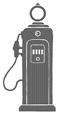

du même auteur
au cherche midi
Miss Alabama et ses petits secrets, traduit de l’anglais (États-Unis) par Jean-Luc Piningre, 2014.
Fannie FLAGG
LA DERNIÈRE RÉUNION
DES FILLES DE LA
STATION-SERVICE
Traduit de l’anglais (États-Unis)
par Jean-Luc Piningre
Vous aimez la littérature ? Inscrivez-vous à notre newsletter
pour suivre en avant-première toutes nos actualités :
www.cherche-midi.com
Direction éditoriale : Arnaud Hofmarcher
Coordination éditoriale : Marie Misandeau
© Fannie Flagg, 2013
Titre original : The All-Girl Filling Station’s Last Reunion
Éditeur original : Random House
© le cherche midi, 2015, pour la traduction française
23, rue du Cherche-Midi
75006 Paris
ISBN numérique : 9782749143330
Couverture : Rémi Pépin 2015 - Illustration : © Rémi Pépin & Shutterstock
« Cette oeuvre est protégée par le droit d’auteur et strictement réservée à l’usage privé du client. Toute reproduction ou diffusion au profit de tiers, à titre gratuit ou onéreux, de tout ou partie de cette oeuvre, est strictement interdite et constitue une contrefaçon prévue par les articles L 335-2 et suivants du Code de la Propriété Intellectuelle. L’éditeur se réserve le droit de poursuivre toute atteinte à ses droits de propriété intellectuelle devant les juridictions civiles ou pénales. »
Ce livre est dédié à la mémoire de Nancy Batson Crews, Teresa James, Elizabeth Sharp, B. J. Erickson et de toutes les WASP qui se sont mises au service de leur pays quand il a eu besoin d’elles.
Je tiens à remercier également quatre femmes extraordinaires – Joni Evans, Jennifer Rudolph Walsh, Kate Medina et Gina Centrello – auxquelles ce roman doit son existence.
Fannie Flagg
PULASKI,
WISCONSIN
28 juin 2010
« Il y a quelques années, quelqu’un m’aurait dit
que je participerais aujourd’hui à cette réunion,
je ne l’aurais pas cru une seconde…
Et pourtant j’en suis ! »
Mme Earle Poole Junior
PROLOGUE
AU DÉBUT
LUBLIN, POLOGNE
1 er avril 1909
En 1908, un certain Stanislaw Ludic Jurdabralinski, grand garçon maigre de quatorze ans, avait devant lui un avenir incertain. En plus d’être austère, la vie en Pologne sous la domination russe n’était pas exempte de dangers. Jeunes et vieux, les hommes étaient enrôlés de force dans l’armée du tsar. On avait fermé les églises, jeté en prison les catholiques et leurs prêtres à cause de leurs positions antirusses. Le père et les trois oncles de Stanislaw étaient en camp de travail pour délit d’opinion.
Wencent, l’aîné de la famille, avait fui la Pologne cinq ans plus tôt. Il encouragea son jeune frère à venir le rejoindre, et c’est ainsi que ce dernier arriva un beau jour à New York sans rien d’autre qu’un costume à carreaux en laine qui lui allait fort mal, une photo de sa mère et de ses sœurs, et la promesse d’un emploi. Un docker avec qui il s’était lié d’amitié pendant la traversée l’aida à monter dans un train de marchandises.
Au bout d’une petite semaine de voyage, Stanislaw se présenta chez son frère à Chicago, enthousiaste à l’idée de commencer une nouvelle vie. On lui avait dit qu’en Amérique, à condition de travailler dur, tout était possible.
UNE
SEMAINE
TOUT
À
FAIT
INHABITUELLE
POINT
CLEAR, ALABAMA
Lundi 6 juin 2005
25 degrés, ensoleillé
Mme Earle Poole Junior, que ses parents et amis connaissent mieux sous le nom de Sookie, revenait du magasin Birds-R-Us de la grand-route 98, avec deux sacs de graines de cinq kilos. Le premier contenait des graines de tournesol, et le second des graines génériques pour oiseaux sauvages. Elle en avait pris deux, distincts, à la place de celui qu’elle achetait chaque semaine depuis quinze ans, qui était un mélange des deux autres. Comme elle l’avait expliqué à M. Nadleshaft, elle craignait que les tout petits oiseaux n’aient pas suffisamment à manger. Chaque matin, ces derniers temps, elle avait à peine rempli ses mangeoires que les geais bleus, gros et agressifs, faisaient fuir les petits en se ruant sur la nourriture.
Sookie avait remarqué que les geais commençaient toujours par les graines de tournesol. Et donc demain, elle allait essayer un truc. Elle mettrait du tournesol seulement dans les mangeoires du jardin et, pendant que les geais fondraient dessus, elle ferait le tour de la maison aussi vite que possible pour remplir de graines génériques les mangeoires de la pelouse. Comme ça, au moins, les pinsons et les mésanges auraient peut-être quelque chose à se mettre dans le bec.
En franchissant le pont de la baie de Mobile, Sookie regarda les gros nuages blancs qui gonflaient dans le ciel et aperçut un long vol de pélicans qui rasait la surface de l’eau. Déjà constellée de voiles rouges, blanches et bleues, la baie étincelait sous un franc soleil. Installés le long du pont, quelques pêcheurs saluèrent Sookie au passage, qui leur fit signe en souriant. Elle était presque arrivée de l’autre côté lorsqu’elle éprouva une vague sensation de bien-être, assez inhabituelle. Mais non sans raison.
Contre toute attente, elle était encore vivante après le mariage de la dernière de ses trois filles – Dee-Dee, Cee-Cee et Lee-Lee. Il ne restait plus à caser que son fils de vingt-cinq ans, Carter, qui habitait à Atlanta. L’organisation de l’heureux événement incomberait cette fois à la mère de la bru, et que Dieu assiste cette pauvre femme. Earle et Sookie n’auraient qu’à se montrer et sourire à tout le monde. Aujourd’hui, après un saut à la banque et un autre chez le boucher, où elle avait pris deux côtelettes pour le dîner, Sookie n’avait plus rien à faire. Rien du tout. Plus que soulagée, elle était émerveillée.
Évidemment, elle adorait ses filles, mais préparer trois grands mariages en moins de deux ans s’était révélé éreintant. Il fallait s’y consacrer vingt-quatre heures sur vingt-quatre, cela n’en finissait pas. Tant à faire, les listes de cadeaux, le choix des costumes, les essayages, les retouches, les faire-part à envoyer, les rendez-vous chez le traiteur, les plans de table, les fleurs à commander. Les relations avec les beaux-parents, les invités des autres villes, et où faire dormir tout ce beau monde, sans compter d’ultimes crises d’hystérie de la mariée, la veille de la cérémonie. À ce stade des choses, Sookie était surmenée, et le seul mot de noces lui donnait des boutons.
Évidemment. Si l’on comptait le dernier mariage de Dee-Dee, il y en avait eu quatre en réalité. Sookie avait dû choisir et ajuster quatre robes de mère de la mariée (impossible de porter la même deux fois) – en moins de deux ans.
Car Dee-Dee avait divorcé après son premier mariage. Pendant plusieurs semaines, elle en avait été réduite à rendre tous ses cadeaux, puis elle avait changé d’avis et décidé d’épouser à nouveau le même homme. Les secondes noces, peut-être moins onéreuses, n’avaient pas été moins stressantes que les premières.
En 1968, lorsqu’ils s’étaient mariés, Sookie et Earle avaient souhaité une cérémonie religieuse, très traditionnelle : robe blanche, demoiselles d’honneur en robes et chaussures claires assorties, porteur d’alliances, garçon d’honneur, puis la réception et c’était terminé. Mais aujourd’hui, il fallait en plus penser à un thème.
Dee-Dee avait tenu à un mariage « Vieux Sud », façon Autant en emporte le vent. Elle avait exigé la même robe blanche que Scarlett O’Hara, avec son grand cerceau. Juste avant de partir à l’église, on s’était aperçu qu’elle ne rentrait dans aucune voiture. Qu’à cela ne tienne, on avait loué une camionnette de déménagement, et on l’avait placée à l’arrière.
Lee-Lee et son mari avaient voulu que tout soit rouge et blanc : les faire-part, les repas, les boissons et les décorations – en l’honneur de l’équipe de foot de l’université de l’Alabama.
Quant à Cee-Cee, jumelle de Lee-Lee et dernière mariée, elle avait remonté l’allée avec Peek-a-Boo dans ses bras, son chat persan de cinq kilos, à la place du bouquet de mariée. Le berger allemand de l’époux, accoutré d’un smoking, avait servi de garçon d’honneur. Comme si cela ne suffisait pas, ils avaient décidé que le porteur d’alliance serait une tortue. Absolument épouvantable : demandez à une tortue de se presser.
Avec le recul, Sookie pensait qu’elle aurait dû mettre le holà quand Cee-Cee et James avaient demandé à tous leurs amis de venir à la réception avec leurs animaux de compagnie. Seulement, elle avait fait le vœu de ne jamais imposer ses vues à ses enfants. Le Grand Hôtel allait dépenser une fortune pour faire changer la moquette de la salle des banquets. Bah, il était trop tard, de toute façon. Avec un peu de chance, tout ça était enfin derrière Sookie.
Quand, deux jours auparavant, Cee-Cee était partie en lune de miel, Sookie avait craqué et s’était mise à sangloter sans pouvoir s’arrêter. Était-ce le syndrome du nid vide ou l’épuisement pur et simple, allez savoir. Elle se doutait quand même qu’elle était fatiguée. Pendant la réception, elle avait présenté un homme à sa propre femme. Deux fois.
À la vérité, même si elle était triste de voir Cee-Cee et James s’en aller, Sookie n’aspirait qu’à une chose – bien sûr, sans le dire : retrouver sa chambre, se coucher et dormir environ cinq ans. Mais le destin s’acharnait sur elle. Au dernier moment, les parents, la sœur de James et le beau-frère avaient souhaité rester une nuit de plus, et donc Sookie s’était mise en quatre pour leur faire un brunch d’adieu le lendemain.
Oh, pas grand-chose. Earle avait préparé des margaritas à la noix de coco, et elle avait servi plusieurs sortes de crackers, du fromage blanc à la gelée de piment, des crevettes et du pain de gruau, du crabe farci et de la coleslaw, avec quelques aspics de tomates pour faire bonne mesure. Ça ne se fait pas tout seul, quoi.
Dans sa petite ville de Point Clear, Sookie passa devant la librairie Page and Palette et se dit que demain, peut-être, elle s’y arrêterait pour acheter un bon bouquin. Depuis plusieurs semaines, elle n’avait pas eu le temps de lire autre chose que son horoscope quotidien, la lettre d’information de Kappa 1 et, une fois ou deux, son magazine Oiseaux et fleurs. On pouvait être en guerre et elle n’en savait rien. Elle allait de nouveau pouvoir dévorer un livre entier.
Assise dans sa voiture, elle eut subitement envie de danser le twist. Ce qui lui fit penser : il y avait longtemps qu’Earle et elle n’avaient pas appris un nouveau pas de danse. À l’heure qu’il était, elle serait probablement incapable de danser une ronde enfantine.
Les mariages étaient derrière elle, mais il lui restait quand même à s’occuper de sa mère, la redoutable Lenore Simmons Krackenberry, âgée de quatre-vingt-huit ans. Lenore refusait obstinément de s’installer dans la charmante maison de retraite de Point Clear, parfaitement équipée, située à l’autre bout de la ville. La vie serait tellement plus facile pour tout le monde si elle acceptait. Chez elle, l’entretien du jardin, déjà, coûtait les yeux de la tête, sans parler de l’assurance. Depuis l’ouragan, les polices d’assurance avaient augmenté dans des proportions extravagantes tout autour de la baie de Mobile. Lenore ne voulait rien savoir. « Je sortirai les pieds devant », avait-elle annoncé sur le ton de la tragédie.
Un spectacle que Sookie avait peine à imaginer. Depuis aussi longtemps que Sookie et Buck, son frère, s’en souvenaient, ils l’avaient toujours vue entrer quelque part d’un pas martial et la tête la première. Lenore était une grosse femme imposante, généralement parée d’une myriade de petites broches et de longs foulards flottants. Elle se faisait crêper les cheveux et les laquait de façon à créer deux grandes houppes, qui se dressaient sur son crâne telles les ailes d’un oiseau. Selon Buck, elle ressemblait à une figurine sur le capot d’une voiture anglaise. Ou à la Victoire de Samothrace – entre eux, Sookie et Buck la surnommaient parfois ainsi. Victoire ne savait pas sortir simplement d’une pièce ; ses apparitions avaient quelque chose de théâtral ; elle laissait derrière elle les luxueux effluves d’un parfum hors de prix. De fait, la discrétion n’était pas son fort – comme un cheval de parade au corso fleuri, on l’entendait venir de loin, grâce aux bracelets, perles et gourmettes qu’elle portait constamment. Sa voix forte la précédait le plus souvent. Lenore avait étudié « l’expressivité » à Judson College, une université réservée aux femmes, et au grand regret de ses proches, son professeur l’avait encouragée dans cette voie.
Suite à certains événements récents – dont l’incendie qu’elle avait provoqué dans sa cuisine –, on avait été obligé d’engager une auxiliaire de vie. Earle, qui était dentiste, avait une clientèle stable, mais Sookie et lui n’étaient en aucune façon riches. Surtout pas en ce moment, après tout l’argent dépensé pour les études des enfants, les mariages, les traites de la maison de Lenore, et maintenant l’auxiliaire. Le pauvre Earle ne prendrait peut-être sa retraite qu’à l’âge de quatre-vingt-dix ans, mais il était indispensable d’avoir quelqu’un à demeure chez Lenore.
Celle-ci avait le verbe haut et les idées bien arrêtées. Elle faisait part de ses opinions à tout le monde et s’était mise, depuis peu, à appeler de parfaits inconnus dans des pays lointains. L’année précédente, elle avait téléphoné au pape, un appel qui, à lui seul, avait coûté plus de trois cents dollars. Quand on lui avait présenté la facture, elle s’était indignée. Folle furieuse, elle avait déclaré qu’elle ne devrait pas régler un seul cent, puisqu’on l’avait mise en attente sans lui passer son interlocuteur. Allez expliquer ça à la compagnie du téléphone. Faute d’arriver à faire entendre raison à sa mère, Sookie lui avait demandé pourquoi elle avait voulu joindre le pape : Lenore était une méthodiste invétérée, et l’Église méthodiste ne reconnaît pas l’autorité de Rome. Elle avait réfléchi un instant avant de répondre :
« Oh, c’était juste pour bavarder un peu.
– Bavarder ?
– Oui, il ne faut pas avoir l’esprit aussi étroit, Sookie. On a le droit d’adresser la parole aux catholiques. Les épouser, c’est autre chose. Mais quelques mots aimables, ça ne fait de mal à personne. »
Il y avait eu d’autres incidents. Lors d’une réunion à la chambre de commerce, Lenore avait traité le maire de tête d’œuf et de voleur de chevaux parachuté à Point Clear. Le maire lui avait intenté un procès en diffamation. Sookie s’était fait un sang d’encre, alors que sa mère prenait la chose à la légère. « Ils seront obligés de prouver que j’ai tort ! avait-elle dit. Aucun jury à moitié sensé n’osera me condamner ! » Le juge avait prononcé un non-lieu, mais de toute manière, c’était très gênant. Pendant un an, Sookie s’était efforcée d’éviter le maire et son épouse, ce qui dans une petite ville se révélait une gageure : ils étaient partout.
Ils en étaient à leur quatrième auxiliaire depuis le procès. Les deux premières avaient démissionné, la troisième était partie en pleine nuit, emportant avec elle une des plus jolies bagues de Lenore et une dinde congelée. Après des mois de recherches, Sookie pensait avoir trouvé la personne idéale, une adorable Philippine d’un certain âge, la bien nommée Angel, patiente et douce, que Lenore s’obstinait à appeler Conchita, car elle était, paraît-il, le sosie de la domestique mexicaine qui les avait servis, elle et son mari, dans les années 1940, quand celui-ci était en poste au Texas.
Maintenant qu’Angel était là, Sookie se réjouissait de pouvoir assister à la réunion des anciennes de Kappa à Dallas, où sa vieille camarade de chambre, Dena Nordstrom, avait promis de la rejoindre. Elles se parlaient souvent au téléphone, mais ne s’étaient pas vues depuis longtemps, et Sookie avait hâte de la retrouver.
Tandis qu’elle attendait au carrefour que le feu passe au vert, elle baissa le pare-soleil et se regarda dans le petit miroir. Aïe, aïe, l’erreur à ne pas commettre. D’accord, passé cinquante ans, personne n’avait belle allure en plein soleil, mais tout de même, Sookie s’était négligée. De plus, elle n’avait pas consulté son ophtalmo depuis trois ans et, à l’évidence, il lui fallait de nouvelles lunettes. Le mois dernier à l’église, elle s’était mise dans un profond embarras. Dans sa bouche, « Je suis le réceptacle de l’amour de Dieu » était devenu « Je suis au spectacle de la mort de Dieu » – à haute voix, devant l’assemblée des fidèles. Earle prétendait que personne n’avait rien remarqué, ce qui, bien sûr, était faux.
Sookie jeta de nouveau un coup d’œil au miroir. Bon Dieu, pas étonnant qu’elle ait cette tête-là. Elle était partie ce matin sans prendre une seconde pour se maquiller. Malin, ça. Il fallait maintenant qu’elle repasse à la maison pour le faire. Elle s’efforçait en général d’être présentable. Par bonheur, elle n’était pas narcissique comme sa mère, sans quoi elle ne serait même pas sortie. L’aspect extérieur comptait plus que tout pour Lenore. Elle était particulièrement fière de ce qu’elle appelait « le pied Simmons », ainsi que de son petit nez en trompette. Sookie avait hérité du grand nez de son père et, évidement, c’est Buck qui avait eu droit au joli nez. Pas de chance. Au moins, elle avait le pied Simmons.
Quand le feu passa au vert, Netta Verp, la plus proche voisine de Sookie, la doubla au volant de sa grosse Ford Fairlane 1989. Elle allait sans doute faire ses courses au Costco. Netta donna un coup de klaxon, auquel Sookie répondit de même. Netta était une âme généreuse, et Sookie l’aimait beaucoup. Toutes deux étaient nées sous le signe du Lion.
La maison de Netta se trouvait à mi-distance de celles de Sookie et Lenore. La pauvre était coincée entre, d’un côté, les enfants Poole et tous leurs animaux, et de l’autre leur grand-mère, qui débarquait chez elle à n’importe quelle heure du jour et de la nuit. Mais Netta ne s’était jamais plainte. « Je suis veuve, de toute façon, avait-elle dit un jour. Qu’est-ce qui me reste d’autre pour m’amuser ? »
Sookie n’aurait pas dû s’étonner que Cee-Cee se marie sur le thème de « Les animaux nous ressemblent ». À un moment donné, elle en avait eu huit chez elle : trois chats, quatre chiens – dont le danois bien-aimé d’Earle, dénommé Tiny, grand comme un poney – et un alligator qui, échappé de la baie, était rentré dans la maison par la cuisine.
Les chiens, les chats, les hamsters et le raton laveur aveugle, passe encore. Mais pour ce qui était de l’alligator, Sookie avait exigé qu’il reste à la cave. Quand on a peur de se lever la nuit pour aller faire pipi, il est temps de mettre le holà – avant, si possible, de se faire manger tout cru.
De plus, Sookie avait horreur de les voir mourir. Mr. Henry, leur dernier chat, avait disparu deux ans plus tôt, à l’âge de dix-huit ans, et elle ne pouvait plus croiser un autre chat roux sans avoir aussitôt les larmes aux yeux. Et donc, après Mr. Henry, elle avait dit à Earle : « Je n’en veux plus. » Assez de souffrances inutiles.
En traversant la ville, elle salua Doris, la vendeuse de tomates, toujours au coin de la même rue, puis elle descendit la colline en direction de la baie.
La route qui menait chez elle était bordée de chaque côté de grands chênes plantés avant la guerre de Sécession. Le site était historique et splendide à la fois. À droite, sur des kilomètres, les vieilles bâtisses de bois qui longeaient le rivage servaient pour beaucoup d’entre elles de résidences d’été aux habitants de Mobile. Sookie aurait reçu un penny chaque fois qu’elle avait pris ce chemin, elle serait aujourd’hui millionnaire.
Elle avait huit ans quand, pour la première fois, son père avait emmené la famille en vacances à Point Clear. Ils habitaient à l’époque Selma, plus au nord dans l’Alabama. Lorsqu’ils étaient arrivés, par une douce soirée d’été, la glycine et le chèvrefeuille embaumaient l’air de leurs parfums.
Sookie se rappelait encore le spectacle qu’offraient les lumières de Mobile, au bas de la colline, tel un collier de diamants sur la surface de l’eau. Elle avait eu l’impression d’entrer dans le royaume des fées. Au clair de lune, les mousses espagnoles accrochées aux arbres avaient des éclats argentés et projetaient leurs ombres dansantes sur la route. Les petits fanaux verts des crevettiers qui clignotaient dans la baie faisaient penser aux arbres de Noël. Pour Sookie, Point Clear avait toujours eu quelque chose de magique – et cela n’avait pas changé.
Environ un kilomètre et demi après le Grand Hôtel, elle remonta l’allée de coquilles d’huîtres concassées et rangea la voiture dans le double garage. La maison de Netta était pratiquement identique à la sienne, mais son jardin paraissait bien plus joli. Dès qu’elle serait suffisamment reposée, Sookie se munirait d’un sécateur et commencerait à entretenir le sien. Ses azalées lui faisaient honte, et les hortensias limelight débordaient dans tous les sens.
Elle habitait une grande maison de bois, blanche, aux volets vert foncé, semblable à la plupart des autres le long de la route historique. Comme celles-ci, elle avait été construite bien avant l’invention de la climatisation, et elle disposait d’un long couloir central qui la traversait entièrement. La véranda, à l’arrière, dominait la baie. Depuis le jardin, on accédait à une longue jetée en bois gris, dotée de quelques sièges au bout, protégés par un toit de tôle ondulée. Quand les enfants étaient tout petits, Earle et Sookie venaient s’y asseoir presque chaque soir pour regarder le soleil se coucher et écouter les cloches des églises autour de la baie. Il y avait bien longtemps qu’ils ne le faisaient plus. Sookie avait hâte de se retrouver seule avec son mari.
Elle sortit du coffre ses deux sacs de graines et alla les placer dans la remise vitrée qu’Earle avait bâtie pour elle, où elle rangeait ses fournitures pour oiseaux. Lorsqu’elle entra chez elle, quelques instants plus tard, le silence la surprit. Elle n’entendait que le tic-tac de l’horloge dans la cuisine, et les cris des mouettes au-dessus de la baie. C’était si bizarre : pas de porte qui claque, personne qui monte ou descende l’escalier en courant, qui mette la musique à fond dans une chambre. Un calme bien agréable. Si agréable que Sookie décida de se préparer une tasse de thé, de se détendre cinq minutes avant de repartir.
Elle prélevait un sachet dans le carton quand le téléphone se mit à sonner dans la cuisine. Maintenant que la maison était vide, on aurait cru une alarme d’incendie. Sookie étudia le numéro affiché sur le petit écran. L’appel provenait d’un autre État, mais comme l’indicatif ne lui disait rien, elle laissa sonner. Trop fatiguée pour faire la conversation si elle n’y était pas obligée. Ces derniers jours, il avait fallu parler et sourire à tellement de gens qu’elle en avait encore mal aux joues.
Sa tasse prête, elle l’emporta sur la véranda et s’assit dans le grand fauteuil blanc en osier. La surface de la baie était lisse comme le verre : pas la moindre vaguelette.
Sookie remarqua ses gardénias, restés en fleurs, et pensa à en couper quelques-uns qu’elle placerait dans une assiette creuse avec un peu d’eau. Ils répandaient toujours un délicieux parfum dans la maison. Elle inspira profondément et elle portait la tasse à ses lèvres quand le téléphone recommença à sonner. À l’évidence, c’était quelqu’un qui se trompait de numéro, ou un service de marketing qui tenterait de lui fourguer un aspirateur. Si elle ne répondait pas, on lui casserait les pieds toute la journée. Elle revint à la cuisine et décrocha.
– Sookie, j’ai besoin que tu viennes tout de suite, lui dit sa mère.
– Un problème, maman ?
– Je dois te parler de quelque chose d’extrêmement important.
– Ça ne peut pas attendre ? Je viens juste de rentrer.
– Non, ça ne peut pas !
– Bon, eh bien… d’accord. J’arrive tout de suite.
Sookie fit la grimace en raccrochant. Sa mère l’inquiétait toujours quand elle prenait ce ton-là. Lenore avait-elle découvert que sa fille avait appelé la résidence de Westminster Village pour se renseigner sur les services d’aide à la personne ? Sookie avait voulu connaître les prix, et l’appel n’avait duré qu’un instant. Mais si quelqu’un l’avait répété à Lenore, celle-ci serait furieuse.
En quelques minutes, Sookie arriva chez sa mère. Angel cueillait des fleurs dans le jardin et leva la tête.
– Bonjour, madame Poole, dit-elle avant d’ajouter avec un sourire compréhensif : Bon courage !
Aïe, aïe, ça devait être pire que Sookie n’avait imaginé. Elle appela en entrant :
– Maman ?
– Je suis là.
– Où ça, là ?
– À la salle à manger, Sookie.
Sa mère était assise à la grande table de style anglais, sur une des douze chaises Queen Anne. Elle avait devant elle un grand écrin de cuir, garni de velours marron, qui contenait toute son argenterie François I er. La grosse bible familiale des Simmons était posée à côté.
– Qu’y a-t-il, maman ?
– Assieds-toi.
Sookie obéit en se préparant à la suite.
– Je t’ai appelée, déclara Lenore, car je ne suis pas certaine que tu connaisses bien la valeur de ce dont tu hériteras un jour. Comme tu es ma seule fille, tu auras l’argenterie familiale des Simmons… et pour que je puisse mourir en paix, je veux que tu jures sur cette bible que jamais, sous aucun prétexte, tu ne t’en sépareras, en tout ou en partie.
Soulagée que son coup de fil à Westminster Village ne soit pas en cause, Sookie répondit :
– Si, maman, je sais bien ce qu’elle vaut. Mais… vraiment, pourquoi tu ne la laisses pas à Bunny ? Buck et elle reçoivent plus souvent que moi.
Le souffle coupé, Lenore serra son collier de perles des deux mains.
– Quoi ? Laisser l’argenterie à Bunny ? fit-elle avec un regard blessé. As-tu idée des sacrifices consentis pour garder ce service dans la famille ?
Sookie poussa un soupir. Mille fois, elle avait entendu cette histoire, que Lenore se plaisait à répéter encore et encore, avec de grands gestes théâtraux.
– Ton arrière-grand-mère Simmons disait que, pendant la guerre, elle aurait pu nourrir toute la famille si elle s’était résolue à le vendre. Et sais-tu ce qu’elle a fait ?
– Non, maman.
– Elle a préféré avoir faim, voilà ! Certains jours, ils n’avaient rien d’autre à se mettre sous la dent qu’une poignée de noix de pécan. Ils étaient obligés de l’enterrer chaque soir à un endroit différent pour que les soldats du Nord ne le trouvent pas. Mais elle l’a gardée, son argenterie ! Et aujourd’hui tu me demandes de la laisser à Bunny ? Qui n’est même pas une Simmons, encore moins une native de l’Alabama ! Autant m’arracher le cœur et le jeter dans le jardin !
– Oh là. Bien… excuse-moi, maman. C’est que… Bon, je te remercie de me la donner.
Sookie n’avait pas eu l’intention de vexer sa mère, mais elle n’avait vraiment que faire de cette argenterie. Elle ne connaissait personne qui se serve encore d’une fourchette à cornichons ou d’une cuillère à olives. De plus, pas question de mettre ça au lave-vaisselle. Il fallait nettoyer individuellement chaque pièce, à la main, et elle n’avait pas l’intention d’y consacrer ses journées. Les manches des couteaux représentaient à eux seuls vingt-huit sortes différentes de fruits – sans parler du service à thé, du service à café, des grands chandeliers…
Sookie se dit qu’elle pourrait peut-être y accorder plus d’importance. Après tout, la famille avait conservé ce service depuis des générations, même depuis son départ d’Angleterre, au XIX e siècle. Mais elle était moins à cheval sur les principes que sa mère. Victoire mourrait d’épilepsie si elle apprenait que sa fille utilisait parfois des assiettes en carton, des couteaux et fourchettes en plastique, et que, tout simplement, elle détestait polir l’argenterie.
Lenore, au contraire, adorait ça. Une fois par mois, assise à sa grande table, elle étalait le service devant elle et enfilait ses gants de coton. « Rien ne me détend plus qu’astiquer tant de belles choses », prétendait-elle.
Mais zut, trop tard. Le sort était jeté, et Sookie coincée. Elle jura sur la Bible que, non seulement elle ne se séparerait pas de l’argenterie, mais qu’en plus elle la polirait régulièrement.
– Ne te laisse jamais prendre de vitesse par les ternissures, la prévint sa mère.
Comment y échapper ? Être la fille de Lenore était assorti d’un vaste catalogue d’obligations. Premièrement, prolonger fièrement la lignée des Simmons qui, selon elle, remontait à l’Angleterre du XV e siècle. Deuxièmement, conserver l’argenterie.
C’était une si belle journée, chaude et ensoleillée, que Sookie retira ses chaussures et rentra chez elle par la baie. Tout en marchant, elle se demanda combien de fois, d’année en année, ses enfants et elle avaient fait l’aller et retour depuis la maison de leur grand-mère. Il lui semblait que, la veille encore, ils se partageaient entre les deux.
Curieuse chose que le temps. Lorsqu’ils étaient petits, Sookie s’émerveillait des minuscules empreintes de pieds qu’ils laissaient sur le sable. Cette époque-là était bel et bien révolue. Ils avaient grandi et – les pauvres – aucun n’avait le pied Simmons. En revanche, trois d’entre eux avaient les oreilles Poole. Mais ceci est une autre histoire…
Après s’être maquillée en vitesse, Sookie repartit en ville où elle s’engagea dans la file du drive-in bancaire, car elle avait besoin de déposer de l’argent pour couvrir une nouvelle dépense imprévue de Lenore. Dix ans plus tôt, celle-ci avait commencé à signer des chèques en bois à pratiquement n’importe qui, sans se préoccuper une seconde des conséquences. Seul commentaire : « Je déteste m’embêter avec les chiffres. » Sookie avait donc fait réexpédier chez elle la correspondance de sa mère, factures y compris. Le courrier personnel de Lenore – les lettres qu’elle écrivait – demandait déjà qu’on s’en occupe à plein temps, ou presque. Elle encombrait les pages lecteurs des journaux avec des missives de son cru, suggérant, par exemple, qu’on retire le droit de vote aux moins de cinquante-cinq ans. Cent autres lecteurs y avaient répondu, auxquels Sookie avait dû adresser un petit mot. Lenore négligeait maintenant de lire ce qu’on lui envoyait. « S’il y a quelque chose d’important, signale-le-moi », et puis voilà. De plus, elle commandait pratiquement tout ce qu’elle voyait à la télévision, de sorte que Sookie était obligée de retourner chacun des articles. À quatre-vingts ans passés, que peut-on bien vouloir faire d’un kit de musculation ?
Sookie aimait sincèrement sa mère, mais bon Dieu, ce qu’elle pouvait créer de difficultés ! Quand Earle avait décidé d’installer son cabinet dentaire à Point Clear, Lenore avait insisté pour qu’on transfère les restes du grand-père Simmons au cimetière Soldier’s Rest de Point Clear, faute de quoi elle restait à Selma. « Si je ne peux pas fleurir sa tombe, vous signez mon arrêt de mort, avait-elle déclaré. C’était un général, Sookie ! » Naturellement, Sookie se retrouva avec une tonne de paperasses à remplir avant de pouvoir procéder au transfert. Après des semaines de tracasseries avec les autorités funéraires, elle finit par supplier celles-ci de déterrer n’importe quoi – chien, cheval ou chat – et de le lui envoyer. À ce stade des choses, elle en avait tellement assez qu’elle s’en fichait.
La voiture précédente se rapprocha du guichet et Sookie suivit le mouvement. Elle s’étudia de nouveau dans le petit miroir. Ça allait un peu mieux avec une touche de maquillage, mais elle avait oublié ses boucles d’oreilles sur la coiffeuse. La belle affaire. Honnêtement, entre les mariages et les frasques de sa mère, qu’elle soit encore saine d’esprit tenait du miracle.
Elle avait toujours eu les nerfs fragiles, et une tendance à l’évanouissement en cas de surmenage. De fait, il était angoissant de ne jamais savoir ce que Lenore allait encore lui réserver. Lenore était arrivée au mariage de Cee-Cee coiffée d’un grand chapeau jaune, sur lequel était fixée une petite cage à oiseaux contenant deux inséparables. Allez savoir où elle avait déniché ça.
Les enfants de Sookie avaient été faciles à élever – une chance car, petits, elle les avait laissés faire à peu près ce qu’ils désiraient. Elle avait voulu qu’ils grandissent dans l’insouciance. Cela n’avait pas été son cas : Lenore avait beaucoup exigé d’elle. Jeune fille timide, Sookie n’avait eu aucune envie de faire partie des Azalea Trail Maids 2, ni d’un groupe de majorettes, ni rien de la sorte. Mais elle n’avait pas eu le choix. Lenore avait été une mère autoritaire. « On ne porte pas le nom de Simmons sans occuper un certain rang dans la société ! »
Eh bien… ça n’avait pas marché. Sookie avait certainement déçu sa mère, et cela resterait ainsi. Sans qu’elle puisse se l’expliquer, et malgré tous ses efforts, elle n’avait décroché pendant ses études que des notes moyennes, alors que son frère Buck brillait dans chaque matière. De force, Lenore avait inscrit sa fille à un cours de danse classique, et le résultat avait été catastrophique.
Sookie arriva enfin devant le guichet, glissa son enveloppe dans le tiroir que lui ouvrit l’employée, et remarqua brusquement qu’elle avait un tic à l’œil droit. Bizarre. Sans doute une réponse au stress accumulé pendant le mariage. Dieu merci, Earle s’était décidé à prendre la tortue dans ses mains pour la donner à James, faute de quoi on y serait encore. La guichetière fit coulisser le tiroir avec un reçu, et sa voix retentit dans le haut-parleur.
– Merci, madame Poole. Bonne journée à vous !
– Merci, Susie, à vous aussi !
– Dites bonjour à votre maman.
– Je n’y manquerai pas.
Cela fait, Sookie partit au supermarché, où elle acheta des côtelettes de porc, puis, après réflexion, une boîte d’ananas en tranches. Earle lui avait promis une bonne surprise pour ce soir, et ce serait une façon d’améliorer l’ordinaire.
Elle attendait à la caisse « moins de six articles » quand on l’appela dans son dos. C’était Janice, une mignonne blondinette qui avait été l’une des demoiselles d’honneur de Cee-Cee. Une laitue à la main, Janice revenait du rayon fruits et légumes.
– Madame Poole, je suis si contente de vous voir ! annonça-t-elle en l’embrassant. Comment allez-vous ? Vous devez être épuisée après toute cette frénésie… Je voulais justement vous dire que c’est un des mariages les plus réussis auxquels j’ai assisté. Ce qu’on s’est amusés ! Cee-Cee était trop craquante avec Peek-a-Boo dans les bras. Et votre maman est toujours formidable. Fidèle à elle-même. Si jolie, et si drôle ! Dommage que vous n’étiez pas à notre table, elle nous a fait hurler de rire. Et ce chapeau avec les deux perruches. Où est-ce qu’elle va chercher tout ça ?
– On se le demande, dit Sookie.
– Quel personnage ! C’était gentil de sa part d’être venue avec sa petite bonne mexicaine.
Comme la file avançait, Sookie se rapprocha de la caisse et Janice la suivit.
– Ah, et… madame Poole, je pensais vous écrire un mot pour vous présenter nos excuses. Tinker Bell s’est vraiment mal comporté à la réception. Je ne sais pas ce qui lui a pris. D’habitude, il adore les chats, pourtant. Il en mangerait, même !
– Ne t’en fais pas pour ça, ma chérie. Un chien est un chien, que veux-tu.
Janice réfléchit une seconde.
– Oui, sûrement. C’est plus fort qu’eux, n’est-ce pas ? Sinon, comme ça va ? demanda-t-elle avec un sourire triste. Pas trop le cafard, la maison n’est pas trop vide sans Carter et les filles ? Au moins, vous avez toujours votre maman pour vous tenir compagnie. Vous ne devez pas vous ennuyer avec elle, je suppose ?
– On peut le dire.
Ce fut le tour de Sookie de régler ses achats et Janice la salua.
– Il faut que je file. Au revoir, madame Poole, ravie de vous avoir croisée. Saluez bien votre maman de ma part.
– Je n’y manquerai pas, ma chérie.
En sortant du marché, Sookie remarqua la vente de charité organisée par les filles de l’Elks Club 3, qui avaient préparé des gâteaux. Dot Yeager était assise derrière la table à tréteaux.
– Ça a l’air bon, tout ça, hein ? demanda-t-elle.
– Je ne dis pas le contraire, approuva Sookie.
– Avec ses cheveux argentés, votre mère était ravissante, hier à l’église, dans cette robe bleu roi. J’aimerais bien porter cette couleur, de temps en temps, mais c’est comme si je disparaissais en dessous. J’ai fait le test de colorimétrie, et je suis plutôt automne. Lenore est printemps, non ?
– Je crois, oui.
Sookie tentait de porter son choix sur une tarte – pécans ou citron ? – quand son amie Marvaleen apparut à ses côtés.
– Salut, Marv. Qu’est-ce qui ira le mieux, à ton avis, après des côtelettes de porc ? Citron ou pécans ?
– Moi, je prendrais une key lime, mais c’est ma tarte préférée.
Sookie acheta la key lime – au citron.
Elle était contente de croiser Marvaleen, qui semblait avoir retrouvé un équilibre. Marv avait vécu une période très agitée avant de divorcer récemment. Depuis quelque temps, elle consultait une coach de vie à Mobile, dénommée Edna Yorba Zorbra, et après chaque séance, il fallait qu’elle rapporte en détail les dernières recommandations de Mme Zorbra.
Quelques mois auparavant, pressée par le temps, Sookie faisait une course en vitesse lorsqu’elle avait aperçu Marv. Comme elle n’avait guère le temps de discuter, elle s’était cachée pour l’éviter. Mais celle-ci l’avait repérée et coincée au rayon surgelés.
« Sookie, est-ce que tu écris ?
– Quoi ?
– Dans un journal. Est-ce que tu notes des choses ?
– Ah, des listes, par exemple ? Oui, il vaut mieux. L’autre jour, je suis revenue quatre fois au marché, parce que chaque fois j’avais encore oublié quelque chose.
– Non, non, je veux dire tenir un journal. Coucher ses sentiments les plus profonds sur le papier. Mme Zorbra dit que c’est la condition indispensable d’une bonne santé mentale. Tu ne peux pas savoir comment ça m’a changé la vie. Sans mon journal intime, je n’aurais jamais divorcé de Ralph. Pour me rendre compte à quel point je le détestais, il a fallu que je le voie écrit noir sur blanc. Tu devrais faire pareil, Sookie. Je ne savais pas vraiment qui j’étais, avant de découvrir ça. »
Eh bien… la méthode convenait sans doute à Marvaleen, mais s’il y avait une chose que Sookie n’imaginait pas, c’était bien de « coucher ses sentiments les plus profonds sur le papier ». De plus, elle savait fort bien qui elle était, comme, malheureusement, tout le monde dans un rayon de cinq cents kilomètres autour d’elle.
Elle passa devant le cimetière sur le chemin du retour. Évidemment, la voiture de Lenore était garée à l’entrée. Tous les lundis, Lenore venait poser des fleurs fraîches sur la tombe du grand-père Simmons, puis elle inspectait les autres tombes alentour. Lorsqu’elle trouvait des bouquets fanés, elle appelait les descendants et leur faisait la leçon sur le respect dû aux morts. Les gens pensent en général aux êtres chers qu’ils viennent de perdre. Pas Lenore, obsédée par ses aïeux.
Sa propre mère étant morte en couches, elle avait été élevée par sa grand-mère. Ce qui expliquait sans doute sa propension à vivre non seulement dans le passé, mais dans un passé lointain. L’arrière-grand-mère Simmons de Sookie était née pendant la guerre de Sécession, c’est pourquoi Lenore conservait de cette époque une image amère et désolée. Dès son plus jeune âge, elle avait appris que, pour se faire une place dans ce monde, il fallait rester fort et fier. Oui, le Sud avait subi une terrible défaite, mais il ne s’était jamais incliné. Il avait tout perdu, sauf son orgueil et sa réputation.
À l’âge de dix-sept ans, Lenore avait intégré Judson College, où elle avait été élue présidente de sa sororité, Kappa Kappa Gamma. Elle était sortie major de sa promotion. C’est également à Judson qu’elle avait rencontré le père de Sookie, Alton Carter Krackenberry. Celui-ci était élève au Marion Military Institute, tout proche. Il avait eu le coup de foudre pour elle à une réception de fin d’année, et il l’avait aimée jusqu’à son dernier jour.
Pendant la Deuxième Guerre mondiale, le père de Sookie avait été placé à la tête d’un régiment entier à Brownsville, au Texas. Mais à la maison, c’est Lenore qui faisait la loi. Il l’avait terriblement gâtée, comblant pratiquement tous ses désirs. Elle avait beau commettre n’importe quelle folie, il se contentait de la regarder et s’exclamait devant ses enfants : « Franchement, elle n’est pas géniale, votre mère ? » Jusqu’au jour de sa mort, il avait soutenu que Lenore avait été la plus jolie fille du bal des officiers – ce qu’elle avait approuvé sans réserve, et souvent répété elle-même.
De retour à la maison, après avoir rangé ses provisions, Sookie s’était assise au salon pour lire le journal quand Peek-a-Boo bondit sur ses genoux. Ah, zut. Sookie ne se plaignait pas de garder la chatte en attendant que Cee-Cee revienne de sa lune de miel, mais elle ne voulait pas s’attacher à l’animal, qu’elle reposa par terre. De nouveau, la chatte sauta sur ses genoux.
– Oh, Peek-a-Boo, dit Sookie en soupirant. S’il te plaît, ne me fais pas du charme comme ça. Allez, va voir ailleurs.
Elle reposa la chatte par terre, qui se propulsa sur ses genoux. Peek-a-Boo avait terriblement besoin d’un peu d’affection, et donc, sachant pertinemment qu’elle commettait une erreur, Sookie la caressa. Au bout d’une minute, la chatte ronronnait et faisait la danse du lait sur ses cuisses en la regardant d’un air satisfait.
– Ma pauvre chérie. Elle te manque, ta maman, hein ? Ne t’inquiète pas, tu la retrouveras bientôt. Tu veux des croquettes ? Ou tu veux jouer ? C’est ça que tu veux, trésor, tu as envie de jouer ?
Et voilà. Elle n’avait pas la chatte depuis quarante-huit heures que, déjà, elle lui parlait comme à un bébé. On ne se refait pas. Elle n’allait quand même pas feindre de ne pas la voir, elle était si mignonne.
Lorsque Earle rentra du travail, Peek-a-Boo pourchassait joyeusement la souris, attachée au bout d’une ficelle, que Sookie promenait dans toute la maison.
– Bonsoir, ma chérie, dit-il à son épouse. Qu’as-tu fait aujourd’hui ?
Des années durant, Sookie avait attendu de pouvoir lui répondre :
– Rien. Absolument rien.
Au lit, le soir, Earle dormait profondément, comme la chatte, pelotonnée contre Sookie, mais pour changer, celle-ci ne trouvait pas le sommeil. Earle lui avait annoncé sa surprise : il lui offrait une deuxième lune de miel, et Sookie était ravie. Elle souhaitait consacrer à son mari autant de temps que possible, ou du moins tout le temps qu’il lui restait. Car Sookie, confrontée à un avenir incertain, ne savait pas combien de temps il lui restait.
C’était la malédiction des Simmons. Passé un certain âge, plusieurs membres de la famille (la tante Lily, l’oncle Baby) avaient dû être confiés aux bons soins de la maison de santé de Pleasant Hill. Comme avait dit le médecin : « Lorsqu’un homme de cinquante-huit ans se montre en plein centre-ville déguisé en cow-girl comme Dale Evans, reine de l’Ouest, avec la jupe à franges et tout le tralala, il ne faut plus hésiter. » Quant à la tante Lily, ses mésaventures avec le livreur de journaux lui avaient valu d’être internée sans attendre. Il était plus difficile de se prononcer pour Lenore. Sookie avait récemment appelé le Dr Childress à Selma, pour lui faire part des derniers exploits de sa mère. Le médecin avait déclaré avec un soupir : « Sookie, ma chérie, je connais votre mère depuis toujours. Le problème avec elle, c’est qu’on ne sait pas où est la limite entre sa délicieuse excentricité et la démence pure et simple. Ça ne fait pas très sérieux comme diagnostic, mais je peux quand même vous dire une chose. Tous les Simmons que j’ai connus ont une case en moins. »
Childress était le médecin de famille depuis de nombreuses années. Sookie aurait préféré qu’il lui fasse cet aveu avant – et non après – qu’elle mette quatre enfants au monde. Allez savoir quels gènes de cinglés elle leur avait transmis. Ils étaient la génération suivante, et sans doute ne risquaient-ils rien, mais elle, Sookie, n’était-elle pas une bombe génétique à retardement, prête à exploser d’un jour à l’autre ? Elle vivait dans la crainte de couvrir de honte son mari et ses enfants. Au cours de quel mariage quelqu’un l’avait-il montrée du doigt en demandant : « Vous voyez cette dame là-bas ? Celle qui parle toute seule ? Qui chasse des mouches alors qu’il n’y en a pas ? C’est la mère de la mariée. »
Elle avait fait part de ses inquiétudes à Earle, qui les avait balayées d’un revers de la main. « Ne dis pas de bêtise, Sookie. Personne ne perd la tête dans cette maison, ni toi ni moi. » Pourvu qu’il ait raison. Quelques semaines plus tôt, elle s’était rendue à un essayage à Mobile et elle avait oublié d’emporter la robe. Elle aurait bientôt soixante ans, et l’on pouvait considérer la chose comme un « incident normal » à cet âge, mais n’était-ce pas l’augure de bien pire ? Sookie n’en savait rien. En tout cas, elle avait rédigé une lettre pour sa famille, qu’elle avait déposée dans un coffre à la banque, afin de parer à toute éventualité.
Elle souhaitait également que Carter trouve chaussure à son pied aussitôt que possible. Il avait toujours eu du succès avec les filles. D’anciennes petites amies appelaient encore à la maison pour prendre de ses nouvelles, donc tout espoir n’était pas perdu.
« Maman, je ne demande pas mieux que me marier, lui avait-il dit. Je n’ai pas encore trouvé celle qu’il me faut, voilà. C’est vrai, je suis un peu découragé.
– Mais non, mon chéri. Je te promets qu’un jour tu tomberas sur la bonne personne, et tu le sauras aussitôt.
– Comment ça ?
– Tu le sauras, c’est tout. »
Quelle réponse idiote. C’était pourtant l’expérience de Sookie ; enfin, presque. Elle connaissait Earle depuis l’école primaire. Il lui avait fallu quelques années pour comprendre que c’était le bon. Certes, pour elle, l’existence n’avait pas été un long fleuve tranquille – mais n’est-ce pas le cas de tout le monde ? Si elle devait disparaître demain, elle pouvait quand même remercier la vie de lui avoir donné beaucoup. À commencer par Earle.
Pour l’ensemble, ses enfants ne lui avaient apporté que du bonheur. Cee-Cee et Lee-Lee, les jumelles, ne lui avaient causé aucun souci. Elles s’étaient montrées heureuses dès le départ, sans doute parce qu’elles appréciaient mutuellement leur compagnie. Dès qu’elles avaient commencé à parler, elles n’avaient plus arrêté. Cee-Cee et Lee-Lee formaient une petite unité autonome. Sookie avait lu quelque part que les jumelles n’aimaient pas toutes porter les mêmes habits. Elles, si. Il leur fallait les mêmes sous-vêtements, les mêmes pyjamas. Elles s’exprimaient en stéréo : l’une commençait une phrase, l’autre la finissait.
Carter avait été, lui aussi, un enfant sans problème, comme Buck, le frère de Sookie. Envoyez-le dehors avec un ballon, et tout allait bien. C’est surtout Dee-Dee qui avait préoccupé Sookie. Petite, elle n’était pas spécialement joyeuse, et elle avait eu une adolescence pénible. Dee-Dee était légèrement enveloppée et, contrairement aux jumelles qui avaient la peau parfaite de Lenore, elle avait souffert d’une acné épouvantable pendant toutes ses années de lycée. Chaque nouveau bouton suscitait un drame. Lorsqu’elle rentrait des cours, l’après-midi, elle se précipitait dans sa chambre et se jetait en larmes sur son lit – parce qu’un garçon ne lui avait pas adressé la parole, qu’on ne l’avait pas invitée à un anniversaire, ou quelque autre vexation. Sookie avait passé des heures à lui tenir la main pendant qu’elle pleurait toutes les larmes de son corps. « Maman, lâchait-elle entre deux sanglots. Tu ne sais pas ce que c’est d’être à ma place. Les gens me disent tout le temps que les jumelles sont si mignonnes, si gentilles. On se presse autour d’elles et on ne s’occupe jamais de moi. » La suite était inévitable : « Pourquoi a-t-il fallu que tu fasses des jumelles ? Tu ne pouvais pas en avoir qu’une, comme les gens normaux ?
– Je suis navrée, ma chérie, tentait d’expliquer Sookie. Je n’ai pas fait exprès, c’est arrivé comme ça. J’étais moi-même la première étonnée. Il n’y avait jamais eu de jumeaux, dans la famille. C’est le hasard, c’est tout.
– Eh bien, tu peux être contente ! À cause de toi, ma vie est fichue. Je serai toujours un petit boudin à la peau pourrie et personne ne voudra de moi. »
Cela n’en finissait pas. Sookie s’était efforcée de rester à l’écoute de Dee-Dee, de faire preuve de la plus grande patience car, malheureusement, elle disait vrai. Partout où elles allaient, surtout lorsqu’elles étaient petites, les gens s’extasiaient sur les jumelles, laissant la pauvre Dee-Dee dans son coin pendant qu’ils les couvraient de compliments. Sookie avait eu le cœur brisé de la voir souffrir comme ça. Elle savait très bien ce qu’elle ressentait. Gamine, dans les jupes de Lenore, elle-même avait eu l’impression d’être une petite poule brune à l’ombre d’un paon magnifique.
Mardi 7 juin 2005
Sookie se leva tôt le lendemain matin, bien décidée à régler la question des geais bleus. Earle venait de partir quand le téléphone se mit à sonner. Qui cela pouvait-il être, de si bonne heure ? Pas Lenore : elle suivait son cours d’aquathérapie au centre du troisième âge. Oh, mon Dieu, pas Dee-Dee ! Qu’elle n’appelle pas pour annoncer qu’elle rentrait à la maison ! Sookie savait qu’elle traversait une mauvaise passe avec son mari ; de plus, l’horoscope d’aujourd’hui lui conseillait de « prévoir l’imprévisible ». Vivement inquiète, elle étudia le numéro sur le petit écran du téléphone. Non, c’était le même indicatif qu’hier, sans doute le même vendeur d’aspirateurs, et elle laissa sonner. Pas de temps à perdre en parlotes inutiles. Elle devait se concentrer sur sa stratégie. Les oiseaux lui posaient un problème délicat. Les geais engloutissaient toutes leurs graines en quelques minutes à peine, donc il faudrait agir vite.
Elle rinça rapidement les assiettes du petit déjeuner et les plaça dans le lave-vaisselle. Le téléphone continuait de sonner et ça devenait agaçant. Sookie s’était servie auparavant d’un répondeur, mais Lenore y avait vu une invitation à se lancer dans de longs discours sur tout et n’importe quoi, laissant des messages de quinze à vingt minutes, parfois au milieu de la nuit, et il avait fallu s’en débarrasser.
En finissant de ranger la cuisine, elle se demanda dans lequel des jardins – devant ou derrière – il vaudrait mieux disposer les graines de tournesol pour les geais. Devant, quelqu’un était susceptible de la voir et donc de s’arrêter pour faire la causette, ce qui la retarderait. Sookie décida de commencer par l’arrière, et de courir ensuite de l’autre côté. La réussite de l’opération dépendait de deux choses : la vitesse à laquelle les geais finiraient les graines de tournesol (avant de comprendre qu’il y en avait d’autres – génériques celles-là – devant la maison) ; et la rapidité avec laquelle Sookie passerait du jardin à la pelouse.
Comment allait-elle s’habiller ? Baissant les yeux, elle se rendit compte que ses tongs ne conviendraient pas ; trop dangereux. Elle ouvrit son armoire mais ne trouva rien d’approprié ; toutes ses chaussures avaient un petit talon.
Elle alla dans la chambre des jumelles, fouilla dans les boîtes de vieilles chaussures et tomba sur une paire de tennis usées, roses avec des pompons. Malheureusement, elles faisaient deux tailles de trop, mais ce serait déjà mieux que de courir en tongs et se casser une cheville.
Sookie les chaussa et les laça aussi serré que possible. Elle gagna la remise et remplit ses deux seaux à pois, l’un de graines de tournesol et l’autre du mélange générique. Elle laissa ensuite le mélange derrière la maison, pour le récupérer en passant tout à l’heure et l’emporter à l’avant. Puis elle revint dans la remise, se munit du second seau (tournesol), inspira bien à fond et courut à l’arrière, où elle remplit les mangeoires aussi vite qu’elle put.
Cela fait, elle lâcha son seau, se hâta de gagner l’autre côté en prenant au passage le premier seau à pois, mais son pied s’enfonça dans un trou de taupe et elle perdit sa tennis gauche. Impossible de s’arrêter, donc elle continua sans.
Évidemment, au moment où elle arrivait de l’autre côté, le nouveau pasteur méthodiste et sa femme passaient en voiture devant la maison. Ils virent Sookie, avec sa tennis rose à pompons, sautant à cloche-pied autour de ses mangeoires à oiseaux qu’elle remplissait de graines avec un seau à pois. Ils ralentirent et, toujours courtois, pensèrent à se garer pour dire bonjour. Heureusement pour Sookie, ils se ravisèrent et poursuivirent leur chemin. Originaires d’Écosse, ils ne savaient pas si courir avec une tennis rose à pompons et un seau à pois en répandant des graines à oiseaux n’importe où faisait partie des coutumes locales, mais ils eurent peur de poser la question.
Netta Verp, la voisine, buvait son café du matin en robe de chambre sur sa véranda lorsqu’elle aperçut Sookie avec son seau, qui cavalait dans son jardin, comme échappée de l’enfer, en semant des graines dans tous les sens. Elle se demanda ce qu’elle pouvait bien fabriquer. De sa vie, Netta n’avait jamais vu personne aussi pressé de nourrir des oiseaux.
Après avoir rempli les mangeoires du devant, Sookie rentra en vitesse et se plaça derrière la fenêtre du salon pour vérifier que les petits oiseaux venaient picorer. Elle attendit, attendit, et ils ne venaient toujours pas. Où étaient-ils passés ? Pas un seul oisillon à l’horizon. Elle fila à la cuisine, de l’autre côté de la maison et, sans surprise, constata que les geais bleus boulottaient joyeusement ses graines de tournesol, tandis que, comme d’habitude, les plus petits hésitaient dans les buissons. Oh, non ! Il ne leur viendrait pas à l’idée de faire un tour de l’autre côté ! Zut. Elle n’avait pas envisagé cette éventualité. Que faire ? Sortant de la cuisine, elle se mit à agiter les bras en criant à pleins poumons : « De l’autre côté, les petits, de l’autre côté ! Dépêchez-vous ! » Mais comment se faire comprendre par ces petites bêtes ? Vraiment désespérant. Non seulement les petits ne mangeaient rien, mais en plus les graines de tournesol attiraient tous les geais bleus des environs, et il en arrivait de nouveaux à chaque seconde.
Depuis sa véranda, Netta observait sa voisine, qui bondissait sur place en agitant les bras comme une folle. Ce qui la plongea dans la plus grande perplexité. Pour un comportement bizarre, c’était un comportement bizarre. Cette pauvre Sookie n’avait pas perdu la tête pendant la nuit, quand même ? C’est qu’avec les Simmons on pouvait s’attendre à tout.
Sookie attendit encore un instant, puis revint au salon voir si, de l’autre côté, les petits oiseaux avaient fini par comprendre. Eh non ! Les geais bleus étaient là aussi, en train de picorer le mélange. Ce que c’était contrariant ! Il ne lui restait plus qu’à aller chercher la batte de base-ball de Carter pour leur faire peur, à ces maudits geais. Mais elle ne tenait pas à être dénoncée à la branche locale de la SPA pour cruauté envers les animaux – d’autant moins qu’elle faisait partie du conseil d’administration. Ah, et voilà que le téléphone se remettait à sonner ! Ça devait être un système informatique, avec rappel automatique. Entre les geais et le téléphone, Sookie frisait la crise de nerfs et elle finit par décrocher.
– Allô !
Au bout du fil, son interlocuteur parut étonné qu’on lui réponde.
– Ah, oui, allô ! Euh… à qui ai-je l’honneur de parler ?
– Qui demandez-vous ? fit Sookie, alors que trois nouveaux geais se joignaient à la fête.
– Nous essayons de situer une Mme Earle Poole Junior.
– C’est moi.
À peine l’avait-elle dit qu’elle le regretta. Elle aurait dû se faire passer pour la bonne et répondre que Mme Poole était sortie. Trop tard. Toute une ribambelle de geais bleus se posa sur les mangeoires des petits oiseaux, et elle se rappela que Carter avait laissé une carabine à air comprimé dans son armoire. Et si elle tirait quelques coups en l’air depuis le perron, sans que personne la voie ?
– Votre nom de jeune fille est-il Sarah Jane Krackenberry ? demanda l’homme au téléphone.
– Oui, c’est bien ça.
Elle ne devait pas être dans son état normal pour s’en prendre à des animaux sans défense, pensa-t-elle. Mais ces fichus geais bleus la mettaient littéralement hors d’elle – cette façon qu’ils avaient d’intimider plus petit que soi.
– Le nom de jeune fille de votre mère est-il Lenore Marion Simmons ?
– Oui.
– Vos parents ont-ils habité Brownsville, au Texas, entre 1942 et 1945 ?
– Oui.
– L’adresse postale de Mme Lenore Simmons Krackenberry est-elle bien 526 Bay Street, Point Clear, Alabama ?
– Oui, son courrier est réexpédié chez nous, définitivement.
Sookie pensait encore à chercher la carabine de Carter, mais non, il ne fallait pas. Si, par accident, elle devait blesser un seul oiseau, elle se le reprocherait toute sa vie.
– Votre code postal est bien le 36564 ?
Soudain Peek-a-Boo était là qui se frotta contre sa jambe. Une autre idée : peut-être la chatte aimerait-elle un bon geais bien gras au déjeuner ? Il suffisait de la laisser sortir. D’un autre côté, si elle s’enfuyait et qu’il lui arrivait quelque chose, Cee-Cee en serait malade.
– Madame ? Vous êtes toujours là ?
– Oui, pardon, qu’est-ce qu’il y a ?
– Votre code postal, c’est bien le 36564 ?
– C’est ça, c’est ça. Excusez-moi, mais les petits oiseaux me posent des problèmes, en ce moment.
Sookie s’assit, cala le téléphone contre son oreille et retira sa tennis rose. Elle ressentit une douleur brusque à la cheville gauche. Ah, non ! Quand son pied s’était enfoncé dans le trou de taupe, elle avait su qu’elle se faisait mal. Pourvu que ça ne soit pas une entorse. Elle devait appliquer de la glace tout de suite, sinon ça allait enfler. Mais d’abord se débarrasser poliment du type au téléphone.
– Pardon, monsieur, je crois que je me suis foulé la cheville. Il va falloir que je vous quitte.
– Hm… Ah… Bon. Une dernière chose, madame Poole. Serez-vous chez vous demain entre dix heures du matin et midi ?
– Comment ?
– Serez-vous chez vous demain à cette heure-là ?
– Je suppose, oui. Je dois passer à l’agence de voyages, mais plus tard dans la journée. Pourquoi ?
– Nous avons une lettre pour Mme Lenore Simmons Krackenberry. Et nous avons besoin d’être sûrs que quelqu’un sera là pour la recevoir.
Sookie se demanda subitement à quoi tout cela rimait. Qui était ce type qui voulait savoir où elle se trouverait demain ? Un pervers sexuel, un cambrioleur ? Elle commença à se méfier. Elle répondit en toute hâte :
– Oui, je serai là demain matin, et mon mari aussi, qui est commissaire de police. Puis-je vous demander d’où vous m’appelez ?
– Du Texas, madame.
– Où ça, au Texas ?
– Austin, madame.
– Austin ?
– En effet. Et quelqu’un vous présentera une lettre, madame Poole, entre dix heures du matin et midi.
Sookie était vraiment déconcertée. Mais qui donc, au Texas, avait besoin d’envoyer un pli à Lenore ?
– C’est le télé-achat Pierres précieuses ? Ça se trouve au Texas ? Ma mère a encore commandé des broches ? J’espère que non. Elle en a déjà plus d’une centaine !
– Non, madame.
– Ou alors c’est Barbara Bush ? Maman pense qu’elles ont des tas de points communs. Elle n’arrête pas de lui écrire, à cette pauvre femme, pour qu’elle lui rende visite. Je lui dis à chaque fois que Mme Bush a bien trop à faire pour venir jusqu’en Alabama, pour le seul plaisir de déjeuner avec elle.
– Non, madame, ce n’est pas Barbara Bush.
– Hm… Alors une facture de téléphone ? Elle a encore appelé quelque part en PCV ? Dans ce cas, je vous présente mes excuses. Nous avons une excellente auxiliaire de vie pour s’occuper d’elle, mais il suffit qu’elle tourne le dos cinq minutes. Enfin, je suis désolée, et dites au correspondant que je paierai de toute façon.
Un silence, puis :
– Madame Poole, nous avons un recommandé à vous faire parvenir demain matin, et nous avons besoin d’être sûrs que quelqu’un sera là pour signer l’accusé de réception.
Sookie en eut presque une syncope : un recommandé ! Oh, non. C’était toujours des ennuis. Elle fit la grimace en posant la question qui lui vint naturellement à l’esprit :
– Monsieur, quand vous dites « nous », s’agit-il d’un cabinet d’avocat ?
– Navré, madame Poole, je n’ai pas le droit d’en dire plus au téléphone.
Aïe, aïe, ça devait être grave, s’il ne pouvait en dire plus.
– Pardon, monsieur, comment vous appelez-vous ?
– Harold, madame.
– S’il vous plaît, Harold, c’est au sujet d’une lettre qu’elle a envoyée quelque part ? Quand elle regarde les infos, parfois, elle se met en boule et elle se sent obligée de prendre la plume. Elle profère des menaces contre les autorités, elle écrit des bêtises, mais il faut me croire : je vous assure que c’est une vieille dame parfaitement inoffensive. Elle n’est pas armée, ni rien. Elle a simplement un petit grain de folie, si vous voyez ce que je veux dire. C’est de famille. On est comme ça, chez les Simmons, un peu fêlés. Son frère et sa sœur ont vraiment pété un câble. Elle nous donne du tracas, vous n’avez pas idée. À bientôt quatre-vingt-neuf ans, elle refuse d’aller en maison de retraite, elle ne veut même pas qu’on lui installe une baignoire à porte. J’ai peur tous les matins qu’elle chute et qu’elle se casse la hanche, dit Sookie avec un soupir. Mon mari et moi avons marié nos trois filles, même deux fois pour l’une d’elles, et les petits oiseaux refusent d’aller sur les bonnes mangeoires. Je suis envahie par les geais bleus et je n’ai surtout pas besoin d’un procès de plus. Je suis assez sur les nerfs comme ça. Vous ne pouvez pas me dire de quoi il s’agit ?
– Navré, madame, je n’ai pas le droit de divulguer ces informations par téléphone.
– Je vous en prie, Harold, ne faites pas durer le plaisir. Vous ne savez rien de moi, mais je suis sur le point de devenir folle. C’est la malédiction de la famille. L’oncle Baby a brusquement perdu la tête. Le lundi, il dirige une banque, et le mardi, il fait du macramé à Pleasant Hill. La tante Lily allait très bien jusqu’au jour où, sans raison, elle a tiré sur le livreur de journaux. Dieu merci, elle l’a raté, sinon c’est en prison qu’elle serait au moment où je vous parle.
– Comme je vous disais, madame Poole, nous avons une lettre à vous faire parvenir demain matin…
– Harold, vous ne pourriez pas l’ouvrir et me la lire tout de suite ? Je n’ai pas besoin des détails, dites-moi seulement le montant de l’amende. Nous avons vidé notre fonds de retraite pour verser un acompte sur la maison que notre fille vient d’acheter avec son mari. Il est charmant, mais il joue de la cithare pour gagner sa vie…
– Oh… !
– Oui, on a eu la même réaction. Mais elle l’aime, que voulez-vous ? Enfin, bon, nous sommes endettés jusqu’au cou. Dites-moi au moins ce qu’on demande à ma mère, que je ne tombe pas des nues. Je ne le répéterai à personne, promis.
– Désolé, madame, cela n’est pas dans mes compétences. On m’a seulement demandé de vérifier l’adresse postale du destinataire. Je ne suis même pas à mon poste habituel. Je remplace quelqu’un d’autre.
– Je vois. Eh bien, jetez un coup d’œil en vitesse et dites-moi si ça dépasse cent mille dollars ?
Soudain la voix était étouffée. Sans doute l’homme avait-il posé une main sur sa bouche, pour que cela reste confidentiel.
– Madame Poole, nous venons aussi de marier notre fille. Je sais ce que vous venez d’endurer. N’ayez crainte, personne n’engage de poursuites contre vous.
– Non ? Ah, Dieu soit loué, merci Harold ! C’est étrange mais, avec ma mère, je m’attends toujours à de mauvaises nouvelles. Pourtant les bonnes, ça existe aussi, n’est-ce pas ?
Comme Harold ne répondait pas, Sookie se sentit beaucoup mieux.
– Mais dites-moi… Elle n’aurait pas gagné à un concours, par hasard ? Celui du journal de la télé ? Faut-il que je lui demande de venir demain matin, de s’habiller, se maquiller ? J’ai besoin de savoir, car elle voudra être bien coiffée. Y aura-t-il des photographes ? Des journalistes ?
– Non, madame.
– Ah… Bon… Enfin, donnez-moi quand même un indice ?
Long silence à l’autre bout, puis Harold répondit :
– Madame Poole, tout ce que je peux vous dire, c’est que… vous n’êtes pas la personne que vous croyez être.
Et il coupa abruptement.
Ses derniers mots résonnaient dans la tête de Sookie lorsqu’on frappa à la porte de la cuisine. Elle se leva et, bien sûr, sa cheville la lança douloureusement. En claudiquant, elle alla ouvrir. Elle trouva Netta, toujours en robe de chambre, qui l’étudia d’un air bizarre.
– Ça va, ma chérie ? Je t’ai vue courir comme une désespérée dans le jardin. J’ai voulu te téléphoner, mais c’était occupé. Tu as laissé une de tes chaussures dehors, dit Netta en lui tendant sa tennis.
– Merci, c’est gentil.
– Tu es sûre que ça va ?
– Oui, Netta. J’étais en train d’essayer une astuce pour nourrir les oiseaux, et il y a ce type qui m’appelle à propos d’un recommandé pour Lenore, et je crois que je me suis foulé la cheville. Viens, entre.
– Merci, mais non, je suis encore en robe de chambre, il faut que j’aille m’habiller. Tu m’appelles si tu as besoin de quelque chose ?
Quelques secondes après son départ, Sookie alla regarder à l’avant de la maison, côté rue, ce que faisaient les oiseaux. Consternée, elle contempla une véritable mer de geais bleus sur sa pelouse. À croire qu’elle venait de fonder une réserve naturelle. Ce coup de fil avait détourné son attention, et elle n’aurait su dire si les petits avaient eu de quoi manger. Ah, flûte ! Il ne restait plus qu’à recommencer demain.
En boitillant dans sa cuisine, elle fourra quelques glaçons dans un torchon qu’elle noua autour de sa cheville. Assise avec Peek-a-Boo sur les genoux, elle réfléchit aux derniers mots de son interlocuteur. « Vous n’êtes pas la personne que vous croyez être. » Une idée lui vint subitement à l’esprit. Ce type devait faire partie des Témoins de Jéhovah ou d’une secte quelconque. Sookie trouvait souvent des prospectus dans sa boîte, qui posaient des questions du style : « Savez-vous qui vous êtes ? » ou « Connaissez-vous votre père ? » Oh, Seigneur. Du coup, elle se sentit complètement stupide. Quelle idiote ! Elle avait raconté la moitié de sa vie à un inconnu !
D’un autre côté, il paraissait bien renseigné sur Lenore. Peut-être travaillait-il pour ancêtres.com, ou une société spécialisée en généalogie ? Elles avaient aussi des publicités de leur cru, avec des questions similaires : « Qui êtes-vous ? » « Qui croyez-vous être ? »
Plus Sookie y pensait, plus elle se dit que sa mère devait être derrière tout ça. Lenore reprenait sans cesse des recherches sur ses ascendants Simmons. « Je suis sûre qu’on a du sang royal quelque part, disait-elle. Je le sens au fond de moi. » Mais elle avait eu beau reconstituer plusieurs fois son arbre généalogique, elle n’avait jamais pu le démontrer. Dee-Dee tenait d’elle à ce sujet. Également obsédée par ses aïeux, elle avait suspendu les armoiries familiales dans son appartement, au-dessus de la cheminée.
Au fil de la matinée, Sookie tenta de se détendre et d’oublier le coup de téléphone, mais elle restait tout de même un peu troublée. La mention « recommandé » la mettait mal à l’aise. Ça l’embêtait d’appeler Earle au travail, mais elle se résolut à composer son numéro.
– Cabinet du Dr Poole, dit la secrétaire. Que puis-je faire pour vous ?
– Bonjour, Sherry, c’est moi. J’ai besoin de lui parler, s’il vous plaît. Juste une petite question.
– Bien sûr, une seconde, je vous le passe. Comment se porte votre maman ?
– Bien, merci.
– Formidable. Ne quittez pas.
– Salut, ça va ? fit la voix d’Earle.
– Oui. J’ai besoin de te demander quelque chose.
– Chérie, je suis en train de dévitaliser une dent.
– D’accord, vite fait. Un type a appelé du Texas pour dire que Lenore va recevoir demain une lettre recommandée. Je dois m’inquiéter ? Il prétend qu’il n’est pas avocat.
– Eh bien, non.
– Ça peut être quoi, à ton avis ?
– Je n’en sais rien. Un attrape-nigaud, peut-être. On essaie de te vendre un produit, d’adhérer à quelque chose.
– Je ne m’en fais pas, alors ?
– Non, n’y pense plus.
– Mais c’est un recommandé.
– Eh bien, tu ne signes pas.
– J’ai le droit ?
– Absolument. Tu dis à Pete que tu n’en veux pas, et puis voilà. Il faut que j’y aille, ma douce. On se voit ce soir, hein ?
– Earle… Je peux aussi ne pas lui ouvrir la porte ?
– Pourquoi pas ?
– Mais il laissera un avis de passage et il reviendra.
– Écoute, fais comme tu veux. Tu n’ouvres pas, ou alors tu signes son reçu et tu jettes la lettre. C’est sans doute de la pub. D’accord ?
– Bon, je ne m’inquiète pas, donc ?
– Non.
– Je ne suis pas obligée de la prendre ?
– Non. N’y pense plus. J’y vais, maintenant. À ce soir, je t’aime.
Sookie raccrocha avec le sourire. Earle la mettait toujours de meilleure humeur. Même sa cheville lui faisait moins mal.

1. Kappa est une sororité (associations de femmes dans les universités américaines, désignées par des lettres de l’alphabet grec).
2. Lycéennes ambassadrices des villes du Sud (Mobile, notamment), arborant des costumes d’époque pendant les festivités.
3. Club de l’orignal (association caritative).
Mercredi 8 juin 2005
Sookie se réveilla tranquillement et fit le programme de sa journée. Aujourd’hui, elle modifierait légèrement sa stratégie avec les oiseaux : elle mettrait simplement des graines de tournesol dans une mangeoire sur deux. En espérant que les petits comprennent l’astuce, qu’ils mangent un peu de leur mélange, pendant que les geais se concentreraient sur le tournesol. Cela fait, elle passerait se renseigner à l’agence de voyages. Une deuxième lune de miel – quel bonheur ! Son frère Buck, et Bunny son épouse, voyageaient beaucoup, et donc hier, Sookie avait appelé sa belle-sœur en Caroline du Nord pour lui demander conseil. Selon elle, Prague était « le nouveau Paris », mais de toute façon Sookie n’avait pas visité l’ancien. En fait, elle n’était jamais allée nulle part, exception faite de l’université, et des allers et retours au supermarché. Alors elle suivrait Earle où il aurait envie d’aller.
À huit heures dix, elle avait rempli ses mangeoires et, cachée derrière un arbre, côté baie, avec ses tennis roses, elle observait le jardin à la jumelle quand quelqu’un surgit derrière elle et lui tapa sur l’épaule. Sookie fit un bond d’un mètre. C’était Pete, le facteur, un grand homme maigre en short gris.
– Pardon, lui dit-il. J’ai frappé à la porte, mais personne n’a répondu.
Puis, en ouvrant son grand sac :
– J’ai un recommandé pour vous, mais je dois d’abord vous poser une question : Êtes-vous Mme Earle Poole Junior ?
Elle soupira. Pete était leur facteur depuis trente ans.
– Non, je suis la reine de Roumanie. Évidemment que c’est moi !
Mais Pete prenait sa mission très au sérieux.
– Je sais qui vous êtes. Seulement, c’est un courrier recommandé, et je suis obligé de demander. Avez-vous un mandat officiel pour signer à la place de Mme Krackenberry ?
– Oui. Et moi, ce que j’aimerais savoir, c’est pourquoi vous arrivez de si bonne heure. En général, vous commencez votre tournée de l’autre côté de la jetée.
– J’ai pensé que c’était peut-être important, cette lettre, alors je suis venu ici d’abord. Il faut que vous signiez sous la ligne, là.
– Pete, je suis navrée que vous ayez fait tout ce chemin, mais je ne signerai pas.
Il était stupéfait.
– Mais… c’est un recommandé !
– Je sais. Earle m’a dit que, si je ne voulais pas signer, je n’étais pas obligée.
– Ah… Euh… Je n’ai jamais été confronté à cette situation. Eh bien, je vais rédiger un premier avis de passage, et j’essaierai à nouveau demain.
– Mais je n’en voudrai pas plus demain.
– C’est que, théoriquement, je suis censé faire trois tentatives.
– Pete, je n’en veux pas. Je ne sais pas même d’où ça vient.
– Bon, eh bien… Comme vous voudrez. Ça paraît dommage, quand même. Quelqu’un a voulu s’assurer que vous receviez ce pli, a payé ce qu’il fallait… C’est peut-être important… On dirait un dossier médical.
– Pete ! Je ne veux pas le savoir ! Pour l’instant, j’ai besoin d’organiser une seconde lune de miel. Earle et moi n’avons pas voyagé depuis 1970, vous vous rendez compte ? Et qu’est-ce qui vous fait penser que c’est médical ?
– L’en-tête. Ça vient des services médicaux de l’État du Texas.
– Des services médicaux ? Bizarre, ça. Qu’est-ce qu’ils veulent ?
– Je ne sais pas, dit Pete en regardant la grande enveloppe. L’un d’entre vous a été malade au Texas ? Séjourné dans un hôpital, là-bas ?
– Non. J’y suis née, mais…
– Eh bien, voilà. C’est peut-être une facture en souffrance ?
– Oh, depuis le temps ? Vous connaissiez mon père. Il payait tout rubis sur l’ongle.
– Oui, c’est vrai. Alors c’est un remboursement.
– Cinquante-neuf ans plus tard ? J’aurais peine à le croire.
– Bon, si vous n’en voulez pas, je laisse l’avis de passage dans la boîte et je poursuis ma tournée.
– OK. Merci, Pete. Désolée.
Dès qu’il fut reparti, elle jeta un coup d’œil au jardin. Une fois de plus, il était envahi par les geais bleus. Pas un seul petit oiseau en vue. À l’évidence, cette tactique était vouée à l’échec – pire encore, Sookie n’avait fait qu’aggraver les choses. Elle ne pourrait reprocher aux petits de fiche le camp et de ne jamais revenir. Ce qui serait fort triste, car c’était eux qu’elle préférait, et ils ne s’en doutaient pas.
Assise dans sa baignoire, Sookie s’efforça en vain d’oublier cette maudite lettre. Elle aurait eu moins de peine si Pete ne la lui avait pas mise sous le nez, s’il n’avait pas lu l’en-tête à haute voix. Ah, c’était irritant ! Sookie n’avait qu’une envie aujourd’hui : se détendre et envoyer valser les problèmes. Cette lettre avait certainement un rapport avec sa mère, mais lequel ? Lenore avait-elle été hospitalisée à l’époque où elle habitait au Texas ? Elle n’en aurait rien dit. Cachait-elle des choses ? Tout le monde se plaisait à répéter qu’elle était restée belle, qu’elle ne faisait pas son âge. Lui aurait-on fait un lifting complet du visage, quelque part là-bas ? Avait-elle renversé quelqu’un, qui aurait eu besoin de soins ? Lenore, qui était une catastrophe au volant, avait accroché pratiquement tous les véhicules à roues de Point Clear. Ou alors, victime d’un accès de folie, comme tante Lily, avait-elle été internée un moment dans un établissement spécialisé ? Oh là là.
Maquillée, habillée, Sookie continuait de se poser mille questions. Assiégée par son imagination ! Et donc, munie de l’avis de passage, elle fila droit au bureau de poste dans le centre-ville, sans même passer par la librairie ou l’agence de voyages. Sur le chemin du retour, elle eut du mal à ne pas fixer la lettre recommandée, posée sur le siège passager. De fait, elle portait en haut et à gauche l’intitulé « État du Texas – Direction des services médicaux », et la mention « Personnel et confidentiel », tamponnée en grosses lettres noires.
À cinq heures et quart, l’après-midi, Earle rentra de son cabinet de dentiste.
– Bonsoir, chérie, c’est moi.
– Earle, déclara Sookie sans même lui laisser le temps de s’asseoir, tu vas me prendre pour une idiote, mais je t’ai attendu toute la journée pour que tu ouvres cette lettre avec moi.
– Quelle lettre ?
– Le recommandé.
– Je croyais que tu n’en voulais pas ?
– Oui, j’ai essayé de… Enfin, bon, elle est là. Et toi aussi.
– D’accord, d’accord, dit-il en souriant. Je me sers un verre et j’arrive.
Elle s’assit sur le canapé du salon et, un instant plus tard, Earle prit place sur le fauteuil en face d’elle.
– Allez, vas-y. Voyons ce que ça raconte.
Sookie respira à fond et lut l’adresse sur la grande enveloppe.
À l’attention de Madame Lenore Simmons Krackenberry
c/o Madame Earle Poole Junior
526 Bay Street
Point Clear, AL 36564
Madame,
Nos services ont reçu le courrier joint, que nous faisons suivre à votre présente adresse, comme demandé.
H. Wilson
L’enveloppe jointe portait le cachet de la poste de Matamoros, au Mexique, avec une adresse griffonnée d’une écriture maladroite et infantile. Sookie retira la seconde lettre à l’intérieur, apparemment rédigée de la même main.
Le 20 mai 2005
Chère Madame Krackenberry,
Bonjour. Je suis la fille de Conchita Alvarez, qui a travaillé pour vous à Brownsville, au Texas, pendant la guerre. Je suis navrée de vous annoncer que ma mère a disparu au printemps dernier, à l’âge de quatre-vingt-cinq ans. En triant ses affaires, nous sommes tombés sur ces papiers qu’elle gardait pour vous. Ça a l’air important. Peut-être que vous en aurez besoin. Comme je ne sais pas où vous habitez maintenant, je les renvoie à l’adresse indiquée dessus, pour qu’on puisse vous les faire suivre. Ma maman vous aimait beaucoup. Elle vous trouvait très jolie.
Bien à vous,
Veronica Gonzales
– Ça alors ! jeta Sookie.
– Quoi ?
– Une dame au Texas qui était au service de maman est morte. Sa fille a découvert de vieux papiers qui appartenaient à Lenore et nous les envoie. C’est fort gentil de sa part.
– Quels papiers ?
– Je ne sais pas. Attends que je regarde.
Sookie préleva une nouvelle feuille dans l’enveloppe.
Quand elle reprit conscience, elle était étendue par terre et Earle l’éventait avec un journal.
– N’aie pas peur, ma chérie. Tu t’es évanouie. Détends-toi et respire lentement. Ne dis rien.
Par terre, à côté d’elle, se trouvait le papier qu’elle n’avait pas fini de lire.
Le 8 octobre 1952
Madame Krackenberry,
Suite aux modifications apportées aux lois sur la protection de la vie privée et sur les droits de l’enfance, et en réponse à votre demande du 6 janvier 1949, nous sommes en mesure de vous faire parvenir l’acte de naissance original de votre fille, ainsi que tous les documents en notre possession, antérieurs à sa sortie de l’orphelinat général du Texas. Vous trouverez également une copie du dossier médical de la mère biologique.
Ces documents pourront vous aider, ainsi que le personnel médical compétent, à diagnostiquer d’éventuels risques d’affections héréditaires chez votre enfant.
N’hésitez pas à nous contacter pour tout renseignement.
Meilleurs sentiments,
Cathy Quijano
Direction des services médicaux
Pièces jointes :
– Acte de naissance
– Dossier médical
– Dossier d’adoption
Earle aida Sookie à reprendre place sur le canapé, et partit à la salle de bains. La pauvre essayait de se remémorer ce qu’elle venait de lire, les deux seuls mots qu’elle se rappelait avec précision étant « orphelinat » et « adoption ».
Earle revint avec un sac en papier 4 pour respirer à travers, un gant de toilette frais à appliquer sur le front, et un verre de cognac.
– Tiens, ma chérie, bois une goutte de ça.
Visiblement inquiet, il tapota sur la main de Sookie.
– Tu as lu ? lui demanda-t-elle.
– Oui, j’ai lu. C’est sacrément gonflé d’envoyer ce genre de nouvelles à quelqu’un, comme ça, de but en blanc.
– Mais qu’est-ce que ça implique ?
Il ramassa la lettre et la relut.
– Ça dit les choses clairement. Apparemment, tu as été adoptée… Il y a ces papiers, là… Une fiche de l’orphelinat général du Texas. Et un certificat de sortie, daté du 31 juillet 1945.
– Mais Earle, ça n’est pas possible. Il doit y avoir une erreur.
Il parcourut de nouveau les papiers et fit la moue.
– Non, je ne crois pas. Tout a l’air officiel, les dossiers sont complets.
– Mais c’est forcément une erreur. Je n’ai pas pu être adoptée. J’ai le pied Simmons et le nez de mon père !
– Peut-être pas, finalement.
– Comment ça ? Qu’est-ce que ça dit d’autre ? Je n’y comprends rien.
– Chérie… Continue de respirer dans le sac, que je regarde encore les papiers.
Earle se plongea à nouveau dans la lecture des documents, et Sookie appliqua le sac en papier brun sur sa bouche. L’expression de son mari ne présageait rien de bon.
– Alors ? demanda-t-elle entre deux souffles.
Il releva la tête.
– Tu es sûre d’être en état de m’écouter ? Ça fait quand même beaucoup à avaler en une seule journée.
– Oui, je suis sûre.
– Promets-moi d’abord que tu es capable de te contrôler. Je ne voudrais pas que tu t’évanouisses une deuxième fois.
– Promis.
– Bon. Le dossier médical parle d’un bébé fort et bien portant.
– Quoi d’autre ?
Document suivant.
– Selon l’acte de naissance, la mère s’appelle Fritzi Willinka Jurdabraa… linski. Quelque chose comme ça.
– Hein ?
Earle épela le nom.
– Bon Dieu ! Mais c’est à coucher dehors !
– Voyons voir. Nationalité de la mère : polonaise.
– Quoi ?
– Polonaise.
– Polonaise ? ! ! Mais je ne connais aucun Polonais, moi !
– Attends. Lieu de naissance de la mère : Pulaski, Wisconsin. Née le 9 novembre 1918. Religion : catholique.
– Catholique ? Oh, nom de Dieu ! Et le père ?
Earle baissa les yeux et poursuivit aussi calmement que possible.
– Euh… Il y a la mention « père inconnu ».
– Inconnu ? Comment ça, inconnu ? Qu’est-ce que ça signifie ?
– Eh bien… Ça peut s’expliquer de plusieurs façons. Peut-être que la mère ne voulait pas le dire. Je ne sais pas, moi.
– Mais enfin, Earle ! s’exclama Sookie. Je sais, moi, ce que ça veut dire : je suis une enfant illégitime, voilà ! Catholique, polonaise et illégitime !
– Allons, chérie, calme-toi. On n’en sait rien. Il ne faut pas tirer de conclusions hâtives.
– Enfin, Earle, quand on épouse quelqu’un, son nom est forcément connu ! Et moi, elle m’a donné un nom ?
– Une seconde. Oui, c’est là. Ton nom de baptême… pour ainsi dire… est Ginger Jaberwisnske… Maintenant, comment ça se prononce… Et tu es née le 14 octobre 1944 à midi et huit minutes. Trois kilos huit cents grammes.
Sookie se redressa lentement.
– Earle, c’est impossible.
– Quoi ?
– 1944.
– C’est pourtant ce qu’ils disent, ma chérie. 14 octobre 1944. Là : c’est écrit noir sur blanc.
Sookie était consternée.
– Earle, mais tu comprends ce que ça implique ? Bon Dieu, j’ai soixante ans ! Soixante ans ! Oh là là, je suis plus âgée que toi ! Oh là là !
– Oui, ma chérie, ne t’énerve pas comme ça. Ce n’est pas bien grave…
– Pas bien grave ? Pas bien grave ? Non, mais tu te couches un soir, tu as cinquante-neuf ans, et le lendemain au réveil, c’est soixante ? Tu ne trouves pas ça grave, toi ?
Sookie sentit ses joues se vider de leur sang. Earle la rattrapa juste avant qu’elle tombe du canapé et s’effondre par terre.
Quelques instants plus tard, lorsqu’elle revint à elle, il lui fit boire encore un peu de cognac. Sookie, qui n’avait jamais juré de sa vie, le regarda droit dans les yeux et s’écria :
– Et qui c’est, nom d’une pipe, ces Blablablawhisky ? !
4. Remède supposé contre l’hyperventilation.
QUI
DONC ?
PULASKI, WISCONSIN
Stanislaw Ludic Jurdabralinski était arrivé à Chicago le 5 janvier 1909. Les premières années, il travailla comme manœuvre chez un brasseur, chargeant des tonneaux de bière le jour, et le soir il apprenait l’anglais. Il se fit embaucher plus tard par la Chicago and Northwestern, une compagnie de chemins de fer qui construisait une ligne depuis Green Bay, dans le Wisconsin, laquelle passait par la petite ville de Pulaski. Ce job-là était mieux payé.
À l’époque, Pulaski n’était qu’un grand village d’immigrés polonais, appâtés par un propriétaire terrien d’origine allemande, homme d’affaires avisé. Après avoir acquis beaucoup de terrain, il en avait fait la publicité dans les quartiers à forte population polonaise de Chicago, de Milwaukee et des bassins miniers de Pennsylvanie – dans l’intention de revendre des parcelles à un grand nombre de Polonais, désireux d’habiter une petite Pologne en Amérique, avec ses propres écoles et églises. Pour mieux les séduire, il avait baptisé la ville en référence au comte Casimir Pulaski, un aristocrate polonais qui avait combattu avec les patriotes américains pendant la guerre de l’Indépendance. Quand les premiers acquéreurs se présentèrent à Pulaski, ils découvrirent que les écoles et les églises promises n’existaient que dans les prospectus et ils entreprirent de les bâtir.
Stanislaw Jurdabralinski travaillait à la pose des rails et débarqua en 1916 à Pulaski. Il prit pension chez une bonne famille polonaise, parents d’une jolie rousse de dix-huit ans. Plusieurs semaines passèrent et, quand les autres ouvriers poursuivirent leur chemin, Stanislaw, lui, resta. Il s’installa à Pulaski avec sa jeune épouse Linka Marie.
Il n’avait pas peur de travailler dur et il avait besoin d’argent. Il trouva un job, la journée, dans une scierie, et un autre le soir à la conserverie, où l’on mettait cornichons et légumes en bocaux. Le dimanche après la messe, il se mit à potasser le test de connaissances soumis aux immigrés souhaitant devenir citoyens américains. Dans la petite chambre qu’il louait au-dessus de la boulangerie Glinski, il s’enthousiasmait en lisant la Constitution et la Déclaration d’indépendance.
« Linka, écoute ça. La vie, la liberté et la poursuite du bonheur sont un droit dans ce pays ! Tu te rends compte : on tient à ce que nous soyons heureux ! Alors tu le seras. Et dès que je suis riche, je t’achète un manteau de fourrure.
– Il vaudrait mieux d’abord acheter une maison, répondit Linka en riant.
– Et quand je serai citoyen américain, j’aurai aussi le droit de dire ce que je veux, personne ne tentera de m’arrêter, et notre maison, ils ne pourront pas la tonfisquer. »
Linka corrigea son anglais.
« Oui, tu as raison. Et je monterai une affaire à moi, comme M. Spierpinski. Je ne serai plus obligé de travailler pour quelqu’un d’autre. Imagine, Linka ! Nos enfants seront américains, comme nos petits-enfants et leurs enfants aussi. »
Linka était enceinte de deux mois : ils attendaient leur premier bébé.
« Pas si vite, Stanislaw, lui dit-elle, pas si vite. Continue d’étudier, pour l’instant. »
De toute sa vie, il ne fut jamais aussi fier que le jour où il se rendit à Green Bay pour recevoir officiellement ses papiers de citoyen américain. À peine avait-il prêté serment qu’il prit son épouse par la main et se précipita au bureau voisin pour déposer une demande de passeport.
« Mais pourquoi aussi vite, Stanislaw ? lui dit Linka, qui avait du mal à suivre son allure. Nous ne partirons nulle part avant longtemps.
– Je sais. Mais le jour où je reviens en Pologne, je veux qu’on sache depuis combien de temps je suis citoyen de ce pays. »
Au bout de quelques semaines, quand le passeport arriva par le courrier, avec la photo d’un Stanislaw souriant agrafée sur une page, il fit le tour de la ville pour le montrer à tout le monde. Le passeport indiquait sa taille, inscrite sous son nom, et Stanislaw demandait aux habitants :
« Vous savez qui d’autre mesurait un mètre quatre-vingt-treize ? Je vais vous le dire, moi : Abraham Lincoln ! »
Linka donna naissance à leur premier enfant, une petite brune aux yeux noirs et aux cheveux bouclés, qu’ils baptisèrent Fritzi Willinka. Son père était si fier d’elle qu’en rentrant du travail, il la prenait parfois dans ses bras et l’emmenait à la Tick Tock Tavern pour que les clients puissent l’admirer. (Linka aurait tout de même préféré qu’elle reste sagement dans son berceau.)
Deux années passèrent, puis elle accoucha d’un fils qu’ils baptisèrent Wencent Stanislaw, et un an plus tard naquirent deux jumelles – la première quelques secondes avant minuit, le 31 mai, et l’autre tout de suite après, le 1 er juin. Ils appelèrent la première Gertrude May, et la seconde Tula June. Enfin, deux ans plus tard, vint au monde la petite dernière, une fille encore, qu’ils prénommèrent Sophie Marie.
Les jumelles et la cadette avaient les cheveux roux comme leur mère. Wencent, surnommé Wink, était un petit blond costaud. Stanislaw adorait tous ses enfants, cependant il avait un faible pour l’aînée, Fritzi. Le jour de ses cinq ans, il l’assit sur ses épaules et ils s’en allèrent parcourir Main Street en donnant à lire aux passants l’acte de vente du terrain qu’il avait travaillé dur pour pouvoir acheter.
« Lisez, les priait-il, Stanislaw Jurdabralinski, un hectare de terrain ! Je suis propriétaire, maintenant ! Qu’est-ce que vous dites de ça ? »
Les habitants de Pulaski l’aimaient bien. C’était un type droit, toujours joyeux, et on pouvait compter sur lui.
Quelque temps après, grâce à un emprunt bancaire et à la participation de quelques amis, Stanislaw fut en mesure de construire sur son terrain une grande maison de deux étages, dotée d’une vaste cuisine et d’une longue véranda. Pour arrondir les fins de mois, Linka, qui était excellente cuisinière, se mit bientôt à vendre des pâtisseries et des saucisses polonaises aux hôtels et aux restaurants. Elle préparait aussi les repas pour les fêtes de la paroisse, tout en continuant d’élever ses enfants, ce qui n’était pas si simple. Fritzi, l’aînée, lui donnait du fil à retordre. Débordante d’énergie, toujours à courir partout, elle jouait au ballon avec les garçons, grimpait aux arbres, relevait des défis idiots (comme sauter à pieds joints du haut des échelles). Bref, c’était une vraie casse-cou. Mais, pour son père, elle n’avait jamais tort. Il riait quand, à la fin de la journée, Linka lui racontait ses derniers exploits. Les religieuses convoquèrent un jour les parents pour leur expliquer que Fritzi avait la détestable habitude de se battre avec les garçons en cour de récréation. Stanislaw, en bon catholique, les écouta d’un air grave. Mais il ne lui fit aucune remontrance.
Oui, elle était un peu agitée, et alors ? Il avait l’intuition qu’elle deviendrait un jour quelqu’un. Linka aurait aimé qu’une de ses filles entre en religion. Stanislaw était bien certain que cela ne serait pas Fritzi.
RETOUR
À POINT CLEAR
Earle faisait de son mieux pour apaiser Sookie, ce qui n’allait pas de soi.
– Oh, Earle, tout est fini pour moi. Je ne serai plus jamais la même personne.
– Enfin, ma chérie…
– Je ne suis pas celle que je croyais… et je ne le serai plus !
– Oui, je comprends que ça fait un choc. Pour moi aussi, Sookie. Mais essayons de voir les choses du bon côté.
– Le bon côté ? Quel bon côté ?
– Eh bien, pour commencer, ça ne te fait pas plaisir, quelque part, de ne pas être une Simmons ?
– Ça ne me fait pas plaisir du tout ! Au moins, quand j’étais une Simmons, je savais qui j’étais et je savais pour quoi m’inquiéter. Aujourd’hui, je ne sais plus ni l’un ni l’autre. J’ai l’impression d’avoir été enlevée par des extra-terrestres.
Brusquement essoufflée, Sookie croisa les bras sur sa poitrine.
– Oh, mon Dieu, j’ai une crise cardiaque. Je vais mourir sans savoir qui je suis !
– Écoute, calme-toi. Tu n’as rien du tout et tout va très bien.
– Très bien ? Tu trouves ça bien d’être une inconnue chez soi ?
Earle lui demanda de respirer quelques minutes à travers le sac en papier. Sookie se détendit un peu, mais son cœur battait toujours fort et elle avait la tête qui tournait. Elle lui prit subitement la main.
– Earle, maintenant que je suis quelqu’un d’autre, tu ne vas plus vouloir m’aimer !
– Bien sûr que si. Tu es ma femme et je t’aime. Tu as toujours été quelqu’un de merveilleux et tu le restes. Rien n’a changé.
– Comment peux-tu dire ça ? Tout a changé. D’une minute à l’autre, je suis devenue une nouvelle personne.
– Pas du tout.
– Si ! Hier, j’étais protestante, méthodiste et anglophone, aujourd’hui je suis catholique, polonaise, née de père inconnu.
– Enfin, réfléchis. Si la lettre n’était pas arrivée, tu serais bien la même personne, non ?
– Mais elle est arrivée. Et je sais que je ne suis plus moi-même. Comment veux-tu que je le redevienne ? Je n’ai jamais été moi-même, dès le départ ! Comment peux-tu garder ton calme ? Nous sommes mariés depuis des années, et tu ne sais plus qui je suis ni qui sont mes parents.
– Ça ne compte pas, ma chérie. C’est de toi que je suis amoureux, pas de tes parents.
– Et si j’étais la fille d’un criminel, d’un tueur en série ? Ça ne compterait pas ?
Il se mit à rire.
– Ça n’est pas drôle, Earle. Tu rigoles, mais c’est moi qui porte les gènes de deux parfaits inconnus, pas toi. Je sais ce que c’est que l’ADN, bien sûr que c’est important.
– Allons, Sookie…
– Ça te ferait quel effet de ne plus savoir qui tu es ?
– Mais on le sait. C’est écrit là : tu es la fille de Fritzi – je n’arrive pas à prononcer le nom de famille – et cette personne était ta mère.
– Peut-être, mais je ne la connais pas. Tu me la mettrais devant moi avec dix autres, je ne ferais pas la différence. Ça pourrait être Doris, la vendeuse de tomates, pour ce que j’en sais !
Earle réussit finalement à l’emmener à la cuisine et lui faire avaler un peu de soupe avec une tranche de pain grillé. Tout en mangeant, Sookie n’arrêtait pas de pleurer et de se moucher.
– Difficile d’admettre que je ne sois pas une Simmons. Ça expliquerait pourtant que je n’aie jamais été jolie.
– Sookie… Tu es très jolie.
– Beaucoup moins que Lenore.
– Pas de la même façon, mais tout aussi jolie, sinon plus. Tu ne veux jamais me croire.
Sookie ne l’écoutait pas.
– Je ne suis pas non plus une Krackenberry. Pas étonnant que je sois moins intelligente que Buck.
– Sookie, tu es aussi intelligente que Buck.
– Non. J’ai été recalée trois années de suite à l’épreuve d’algèbre. Tu trouves ça malin, toi ?
Après le dîner, Sookie lut et relut encore tous les papiers pendant des heures, avec l’impression d’être parachutée dans un épisode de La Quatrième Dimension. Cela paraissait tellement irréel. Ce bébé au nom étrange, sur l’acte de naissance – impossible d’accepter que cela soit elle. Earle redoubla d’efforts pour tenter de la tranquilliser, mais c’était peine perdue.
Vers trois heures et demie du matin, il déclara qu’il serait quand même temps d’aller se coucher. Quand il éteignit la lumière, Sookie continua de penser à toute allure. Il paraît qu’au moment de sa mort, on voit défiler sa vie devant ses yeux. Sans doute était-ce ce qui lui arrivait. Chaque fois qu’elle essayait de se détendre et de trouver le sommeil, un souvenir d’enfance remontait à la surface. Sookie se rappela tout ce qu’elle avait dû endurer pour faire plaisir à sa mère, correspondre à l’image qu’elle attendait, au portrait d’une Simmons. Elle avait toujours eu les cheveux roux foncé, et raides. Chaque matin, sa mère tentait de la coiffer avant qu’elle parte à l’école. Elle la regardait d’un air déçu en déclarant : « Allez me trouver la moindre boucle, là-dedans. » Et toutes ces heures passées dans les salons de coiffure, dans la mauvaise odeur des permanentes. Sookie en ressortait avec les cheveux littéralement frits : une masse de frisettes rousses. Toujours au bénéfice de Lenore. Quand celle-ci perdait courage, Sookie se retrouvait avec une coupe au bol et une frange sur le front. Toute sa vie, Sookie avait ressemblé soit à Little Orphan Annie 5, soit au petit Hollandais représenté sur les pots de peinture.
Lenore n’aimait pas ce roux acajou et, une fois par semaine au moins, elle déclarait sur le ton du regret : « Quand j’avais ton âge, j’étais blond vénitien. Je me demande pourquoi tu as les cheveux aussi foncés. Alors que tu étais un bébé tout blond. »
Sookie avait donc tenté le blond vénitien. Mais la teinture n’avait donné qu’un rose peu séduisant. Pendant une bonne partie de sa première année de lycée, elle avait eu les cheveux rose vif, bien avant que cette couleur-là devienne à la mode. Et à quoi bon ?
Assurément, cette histoire n’était qu’un cauchemar et, lorsqu’elle se réveillerait demain, tout serait de nouveau normal. Car cela ne pouvait pas être vrai.

5. « Annie la petite orpheline », rousse frisée, personnage de BD.
LA
VIE
CONTINUE
PULASKI, WISCONSIN
1928
Au lendemain de la Première Guerre mondiale, l’Amérique rurale, bucolique et somnolente prit un autre visage. La faute en revenait à un certain Henry Ford, lorsqu’il créa son célèbre Model T. Il mit les États-Unis sur quatre roues, on construisit davantage de routes, la qualité des véhicules s’améliora et, par milliers, des gens qui n’avaient jamais dépassé la périphérie de leur ville se découvrirent une passion pour les voyages. La nouvelle mode était aux promenades – motorisées – en famille. Pionniers par excellence, les Américains avaient naturellement l’esprit d’aventure et commencèrent à parcourir le pays en automobile. S’ils avaient pu construire des routes par-dessus l’océan, ils auraient conduit jusqu’en Europe ou en Australie.
Partout, de nouveaux types de commerces poussèrent comme des champignons : terrains de camping, hôtels, motels et restaurants, pour servir les voyageurs sur leur chemin.
En 1920, le pays comptait quinze mille stations-service. En 1933, leur nombre s’élevait à cent soixante-dix mille.
À l’évidence, la voiture représentait l’avenir et donc quelle meilleure idée que d’ouvrir une station-service ? Les compagnies pétrolières vendaient des franchises à tout le monde. Stanislaw Jurdabralinski possédait l’emplacement idéal : le terrain inusité à côté de sa maison. Il puisa dans ses économies, fit un nouvel emprunt, suivit une formation de deux semaines pour apprendre à gérer l’affaire, et pour l’inauguration de la première pompe à essence de Pulaski, ouverte vingt-quatre heures sur vingt-quatre, il revêtit l’uniforme Phillips 66, avec casquette et nœud papillon en cuir noir, que lui fit parvenir la maison mère.
Il était très fier d’être enfin à la tête d’une entreprise familiale. Lorsqu’il fallut baptiser la station, il pensa que Jurdabralinski Phillips 66 était trop long, et choisit plutôt Wink’s Phillips 66, d’après le surnom de son fils, qui en hériterait un jour.
Le soir de l’ouverture, quand les globes ronds s’allumèrent au-dessus des pompes, toute la famille resta dehors plusieurs heures pour les regarder briller dans le noir. Poppa allait désormais dormir sur un lit de camp, derrière le bureau. Avant de se coucher, il faisait clignoter une ou deux fois l’enseigne OUVERT LA NUIT pour souhaiter bonne nuit à la famille.
De ce jour, leurs vies à tous devaient graviter autour de cette station-service. Le joyeux tintement de la cloche, annonçant le passage des voitures, des camions, signifiait que Poppa avait du travail, ce dont on pouvait se réjouir. Wink et les filles grandirent en jouant avec les enjoliveurs, les tuyaux à pression, les vieilles bougies, les pneus en caoutchouc. Et malgré l’odeur omniprésente de l’essence, ils s’amusèrent. Quand Fritzi eut onze ans, et Wink neuf, ils savaient déjà changer un pneu, faire un plein et rendre la monnaie à la caisse. Bientôt, on ne parla plus des Jurdabralinski, mais des pompistes. Chaque ville avait les siens – toute une famille, le plus souvent.
En 1936, la Grande Dépression avait durement frappé le pays, et les Jurdabralinski s’en sortaient un peu mieux que tout le monde. Les fermes avoisinantes leur fournissaient du lait, du fromage, leur basse-cour des œufs et de la volaille. Wink, devenu un grand gars solide, aimait chasser et pêcher, et ils eurent donc de quoi manger chaque jour.
Stanislaw avait négocié un contrat selon lequel il assurait l’entretien de tous les véhicules officiels du comté – camions de pompiers, voitures de police, chasse-neige, autobus scolaires – et, bien sûr, il leur servait de l’essence. Bien d’autres stations-service avaient été obligées de fermer dans le pays, mais pas la sienne.
À l’été 1937, on ne connaissait pas réellement la crise chez Wink’s Phillips 66. Momma jouait les jeudis avec l’Orchestre des dames accordéonistes de Pulaski, et répétait quatre fois par semaine dans le salon. Les plus jeunes filles apprenaient également l’accordéon, et les accompagnaient parfois. L’après-midi, les garçons et les filles du lycée se retrouvaient tout en haut, dans l’immense grenier, où l’on avait installé un gros électrophone sur une table dans un coin. Ils dansaient et jouaient au ping-pong.
Fritzi et ses sœurs arrivaient à un âge où elles étaient toujours entourées de garçons : ils traînaient autour de la station, s’asseyaient avec elles sur la grande véranda à la maison.
Wink, qui aidait son père au retour du lycée, avait aussi ses admiratrices. Elles s’entassaient dans une voiture, venaient l’observer en pouffant pendant qu’il lavait les pare-brise, vérifiait les niveaux d’huile, d’eau, d’antigel, l’état de la batterie, et qu’il gonflait les pneus. Le plus souvent, elles avaient juste assez d’argent pour acheter un gallon à quatorze cents, voire la moitié d’un. Une certaine Angie Broukowski, plus jeune que lui, empruntait la voiture de son père et se montrait avec ses amies un peu plus souvent que les autres, même lorsqu’elle n’avait pas un cent en poche. Poppa disait qu’on vérifiait plus souvent la pression des pneus du père Broukowski que de n’importe quelle autre voiture dans l’État du Wisconsin.
À la maison, la vraie vedette était Fritzi, tant pour les garçons que pour les filles. Elle avait terminé ses études au lycée où, en dernière année, on l’avait désignée comme l’élève la plus sympathique, la meilleure danseuse, la sportive la plus accomplie, la fille la plus drôle, celle qui avait le plus de chances de réussir dans la vie. Fritzi était la personnalité en vue de Pulaski High. Poppa était fier d’elle et Momma craignait que, si elle ne se calmait pas un peu, jamais aucun homme ne voudrait l’épouser. Car si elle n’allait pas nager, elle jouait au bowling ; si elle n’était pas au bowling, elle patinait au Rainbow Skating Rink ; ou elle était au cinéma, ou elle partait sur les routes voir ce qu’un nouveau modèle de voiture avait dans le ventre. De plus, elle avait commencé à fumer ; Momma avait découvert un paquet de Chesterfield à moitié plein dans un tiroir de sa chambre. Comme d’habitude, lorsqu’on l’avait prévenu, Poppa avait haussé les épaules. « C’est une fille d’aujourd’hui, avait-il dit. Elles fument toutes, maintenant. » Momma espérait qu’à l’automne, quand Fritzi travaillerait à la conserverie, un gars du coin la prendrait sous son aile, et elle ne s’inquiéterait plus pour elle. Momma avait déjà fait une neuvaine pour Fritzi et prié saint Jude.
ET
MAINTENANT ?
POINT
CLEAR, ALABAMA
Jeudi 9 juin 2005
Le lendemain, Earle servit à Sookie son petit déjeuner au lit et s’assit près d’elle.
– Chérie, veux-tu que j’annule mes rendez-vous aujourd’hui pour rester avec toi ? Ce n’est pas une bonne idée de te laisser toute seule.
– Non, va travailler. J’ai besoin de réfléchir et de décider quoi faire.
– Comme tu voudras… mais tu me téléphones pour me dire comment ça va.
Après son départ, Sookie se rendormit une heure et, quand elle se réveilla, elle était encore si abattue qu’elle ne parvint pas à se lever. Elle appela Netta et, prétextant une grippe, lui demanda si elle voulait bien donner à sa place des graines aux oiseaux. Puis elle pleura dans son lit toute la matinée. Elle avait besoin de parler à quelqu’un, quelqu’un en qui elle avait confiance et qui ne répéterait rien à Lenore. Sookie décrocha le téléphone sur la table de chevet et composa le numéro de Dena Nordstrom, sa vieille copine de fac, qui habitait maintenant dans le Missouri. Dena répondit à la première sonnerie.
– Dena, c’est Sookie.
– Sookie ! Bonjour…
– Dieu merci, tu es là. Tu n’imagines pas ce qui me tombe dessus.
– Il est arrivé quelque chose à Earle ?
– Non.
– Aux enfants ?
– Non.
– À ta mère ?
– Non… À moi !
– Qu’est-ce qu’il y a, ma chérie ? Tu es malade ?
– Pas malade, non. Polonaise !
– Quoi ?
– Oh, c’est toute une histoire… Un type qui me téléphone du Texas, qui me dit que je ne suis pas celle que je pense, comme si j’avais le moindre doute. Et hier, on me porte une lettre qui affirme que je suis une enfant adoptée, que Lenore n’est pas ma vraie mère, ni papa mon vrai père. Ça n’est pas tout : j’ai un an de plus que je croyais. Je ne suis même pas Lion. Toute ma vie, je me suis trompée d’horoscope.
– Attends… Tu es sûre de ce que tu avances ?
– Oui, sûre. Octobre, c’est la Balance.
– Non, non… cette affaire d’adoption.
– Tout est écrit là. J’ai les documents sous les yeux. Le 31 juillet 1945, M. et Mme Alton Krackenberry ont adopté une petite fille dénommée Ginger… Jurdbberlnske… enfin, bref, un bébé polonais. C’est moi. Ou c’était moi. Ma vraie mère est native du Wisconsin et, par-dessus le marché, je suis sûrement catholique. C’est des fanatiques du baptême, ces gens-là.
– Oh là là… Et qu’en dit Lenore ?
– Je ne lui en ai pas parlé.
– Et aux enfants, tu leur as dit ?
– Non. Tu es la seule personne, avec Earle, qui soit au courant. Comme tu es mariée à un psychiatre, je savais que tu comprendrais. Je me sens désemparée, trahie. Lenore sait que je ne suis pas sa vraie fille, et quand je pense à tous les trucs qu’elle m’a forcée à faire, toute cette comédie… Elle me donnait mauvaise conscience parce que je ne lui ressemblais pas. Évidemment que je ne lui ressemblais pas, c’est impossible ! Grâce à elle, j’ai depuis l’âge de seize ans ma carte de l’Union des filles de la confédération 6. Alors que je ne suis même pas du Sud ! Je suis une Yankee, du Nord ! Le pire, Dena, confia Sookie entre deux sanglots, c’est que je ne suis pas une Kappa non plus.
– Comment ça ? Bien sûr que si !
– Non. C’est une imposture. Je vais devoir me démettre. Si on m’a acceptée, c’est par égard pour Lenore. Il va falloir que je rende mon badge et tout le reste.
– Ne dis pas de bêtises, Sookie, tu es devenue Kappa parce que tu étais appréciée. On a été recrutées ensemble, tu ne te rappelles pas ?
Sookie n’écoutait plus et poursuivit sur sa lancée.
– Mon Dieu, même mon entrée au Selma Country Club était une imposture. J’avais dit à Lenore que je ne voulais pas être une débutante, mais elle n’a rien voulu savoir et je me suis ridiculisée. Qu’iront penser les gens quand ils découvriront que je ne suis ni une Krackenberry ni une Simmons, mais une enfant illégitime, une orpheline polonaise, yankee par-dessus le marché ?
– Eh, une seconde ! Pourquoi serais-tu illégitime ?
– Parce que sur mon acte de naissance, il y a la mention « père inconnu ».
– Oh, écoute, les gens ne se soucient plus vraiment de ce genre de chose, à notre époque.
– Moi si. J’ai l’impression d’être une usurpatrice, une arriviste, une parvenue. C’est à mourir de honte. Je me vois dans le miroir, à l’instant, et je suis rouge tellement j’ai honte.
– Mais pourquoi, Sookie ? Tu n’as rien fait de mal. De quoi as-tu honte ?
– Tu me connais, Dena. Je me suis toujours flattée d’être quelqu’un d’honnête, d’ouvert, et je découvre que toute ma vie est basée sur un mensonge. Comment puis-je garder la tête droite, maintenant ? Je suis brisée, aliénée. Et j’ai sûrement besoin de médicaments. Gerry est là ? Il pourrait peut-être m’envoyer des comprimés. Combien ça coûte ?
– Allons, chérie, tu n’es pas brisée, non. Tu as subi un choc. C’en est un pour moi aussi. Tu es bouleversée, c’est très compréhensible. Mon Dieu, qui ne le serait pas ? Et Earle, qu’est-ce qu’il en pense ?
– Oh, c’est un ange avec moi. Mais je te vais dire qui va piquer une crise en apprenant ça : Dee-Dee. Elle passe son temps à courir au cimetière fleurir la tombe de l’arrière-grand-père Simmons. Alors quand elle saura qu’elle n’a aucun lien de parenté avec lui… Mon Dieu ! Voilà pourquoi je n’ai pas le nez de Lenore. J’ai le nez d’un parfait inconnu ! Comment ai-je pu penser que je ressemblais à mon père ? J’ai regardé nos albums photos, hier soir, et je ne ressemble à aucun. Je n’ai pas le pied Simmons, j’ai le pied Jaberwisinski !
– Que vas-tu faire, aujourd’hui ?
– Aucune idée. Je ne sais plus sur quel pied danser, justement. Je suis tombée des nues et c’est tout juste si je me remets. Je ne sais vraiment pas ce que je vais faire. C’est d’ailleurs un peu tard pour faire quelque chose. On aurait dû me l’apprendre quand j’avais six ans, pas soixante. Tous ces Polonais dont je descends sont probablement morts, maintenant. Et quelle idée d’appeler un enfant Ginger ? On a eu un golden retriever qui s’appelait comme ça. Enfin, tout ça est très perturbant.
– Je pense bien. Pourtant, tu m’as toujours dit que tu ne voulais pas ressembler à ta mère, et là tu es sûre que non. Quelque part, ça pourrait être une bonne nouvelle.
– Earle m’a dit la même chose. Oui, pourquoi pas ? N’empêche, j’ai encore l’impression d’avoir été renversée par un train. Si encore j’avais un an de moins ! Hier, j’en avais cinquante-neuf, aujourd’hui, c’est soixante ! Pas étonnant que j’aie l’air vieille et fatiguée. Je le suis ! Moi, la plus vieille orpheline du monde. Ah, ce que c’est pénible. J’ai envie d’aller au bout de la jetée et de me foutre à l’eau.
– Sookie, tu veux que je descende à Point Clear et que je reste avec toi ? Tu n’as qu’à dire oui et j’arrive.
– Non, tu es adorable, mais on ne peut rien y faire, tu sais. Je dois essayer de résoudre mon problème toute seule.
– Bon, mais tu me promets de ne pas faire de bêtises, hein ?
– Avant de faire des bêtises, il faut que je marie Carter, on verra après.
– Sookie, ça fait beaucoup à prendre sur soi. Tu ne perdrais rien à consulter quelqu’un.
– Eh, pas de chance. C’est toi qui es mariée à un psy. Moi, c’est le dentiste.
– Tu veux que je demande à Gerry s’il peut te recommander quelqu’un ?
– Non. Ces choses-là, je ne me vois pas en parler à un inconnu.
– Mais si, Sookie. Justement, c’est tout l’intérêt.
– J’y penserai. Pour l’instant, je n’ai envie d’en parler qu’à toi.
– D’accord, mais tu m’appelles pour me dire où tu en es, hein ?
– Entendu.
Aussitôt raccroché, Dena pensa à sauter dans un avion pour l’Alabama, mais Sookie avait décidé de faire face toute seule, et peut-être avait-elle raison. Dena connaissait Lenore, elle avait toujours été impressionnée par celle-ci, et un peu triste que Sookie ait été dominée par sa mère. Évidemment, cette affaire d’adoption était affligeante. Sookie s’était toujours vue à travers les yeux de Lenore. Dena avait eu beau le lui répéter mille fois, Sookie ne voulait pas comprendre qu’elle était une fille formidable, l’une des plus drôles et des plus aimées du campus. Elle refusait de le croire. Tout le monde aimait Sookie, sauf elle-même.
De son côté, Sookie pensa que Peek-a-Boo devait avoir faim. Elle sortit enfin de son lit, descendit à la cuisine et lui ouvrit une boîte de thon en repensant au conseil de Dena. Celle-ci avait peut-être raison, seulement il n’y avait qu’un seul psy à Point Clear et, à l’évidence, le Dr Shapiro n’avait encore jamais exercé dans une petite ville. Son cabinet se trouvait à côté du salon de coiffure Just Teazzing, de sorte qu’on ne pouvait entrer chez lui sans se faire remarquer et, cinq minutes plus tard, tout Point Clear était au courant.
Même Mobile n’était pas assez loin, du fait que Lenore y connaissait également du monde. Au cours de sa longue existence, Victoire avait présidé tous les comités possibles et imaginables. S’il n’en existait pas qui lui plaisaient, elle les créait. Comme disait Netta : « Elle a un certain sens de l’organisation. » Et elle avait eu ses entrées dans quantité de clubs. Comme si elle était née avec une carte de membre dans la main.
Tout au long de la journée, Sookie aperçut son image dans les glaces et les miroirs. Extérieurement, elle n’avait pas changé. Sa voix, sa démarche non plus. Mais elle ne savait plus qui se trouvait à l’intérieur.
Elle finit par appeler son mari, qui ne se fit pas attendre.
– Earle, j’ai les oreilles qui sifflent. Je vais avoir une attaque ? J’ai peur que ce soit ça.
– Non, ma chérie, c’est le stress, c’est tout.
– Oui, mais j’ai le cœur qui bat. Ça pourrait bien être une attaque. Il faut appeler une ambulance ?
– Non, tu n’as rien. Respire lentement. Écoute, mon dernier patient vient d’annuler son rendez-vous. J’arrive tout de suite.
Évidemment, c’était un soulagement de le voir passer la porte, quelques instants plus tard. Toujours déboussolée, Sookie réussit quand même à préparer le dîner. Earle ne la quitta pas une seconde.
Ils se couchèrent et elle tenta de s’endormir – en vain. Sookie se tourna et retourna une bonne partie de la nuit. Peek-a-Boo en eut assez. Elle alla se réfugier près d’Earle, de l’autre côté du lit. Pauvre Sookie, elle n’y pouvait rien. L’image dans le miroir… cette personne qu’elle avait été… continuait de la poursuivre.
À quatre heures et demie, Earle finit par lui dire :
– Ferme simplement les yeux, et tu dormiras.
– OK. Mais tu es vraiment sûr que je n’ai pas une crise cardiaque ? Mon cœur continue de battre très fort. Tu ne l’entends pas ? Il ne faut pas aller aux urgences ?
Il se pencha sur sa poitrine, puis lui tapota sur la main.
– Non, ma chérie. Ce n’est qu’une crise d’anxiété. Essaie de dormir, et ça ira mieux, je t’assure.
Il avait raison. En quelques minutes, Sookie s’était calmée et commençait à s’assoupir. Quoi qu’en pensât sa mère, elle avait bien fait de l’épouser. Stable, solide, Earle lui avait permis de traverser tant d’épreuves.
Sookie avait été reçue à l’examen de sortie du lycée, mais ses notes étaient insuffisantes pour intégrer une grande université, comme Lenore l’avait souhaité. Jamais à cours de ressources, celle-ci avait tiré quelques ficelles à la dernière minute et, grâce à une amie de la sororité Kappa, avait permis à Sookie de poursuivre ses études, à Dallas, à la Southern Methodist University. Elle y était arrivée avec une garde-robe neuve et un mot de sa mère en poche.
Sookie, ma chérie,
Faute d’être assez brillante, sois gaie et pleine de vie. Les hommes aiment les femmes drôles. Rencontre autant de garçons que tu peux ! Il faut plaire, plaire, plaire.
Ta maman qui t’aime
Grâce à son intervention, Sookie avait donc intégré Kappa à SMU sitôt la période d’essai terminée. Et, suivant ses consignes, elle avait adhéré à tout ce qui se présentait, liant connaissance avec un maximum de garçons. En deuxième année, elle s’était miné la santé à force de vouloir « plaire, plaire, plaire ». Quand, pour ne rien arranger, sa camarade de chambre, Dena Nordstrom, avait été élue plus belle fille du campus, Lenore n’avait rien trouvé de mieux à dire que : « Sookie, tu devrais essayer de lui ressembler. Elle arrivera à quelque chose, elle. » En quoi Lenore n’avait pas eu tort puisque, avant la fin de son cursus, Dana avait été engagée par une chaîne de télévision pour devenir une des premières femmes à présenter les actualités – tandis que Sookie repassait péniblement certains de ses examens.
À Noël, la dernière année, elle était rentrée chez elle à bout de nerfs et malade comme un chien. Lorsqu’elle avait informé ses parents qu’elle avait l’intention d’épouser Earle Poole Junior, qui habitait Selma, Lenore avait explosé de rage.
Les Poole étaient charmants, et le père médecin. Malheureusement, tous les hommes de la famille avaient de grandes oreilles légèrement décollées. « Faute de penser à moi, pense à l’avenir ! s’était exclamée Lenore, brandissant son mouchoir entre deux sanglots. Des oreilles comme ça, passe encore sur un garçon, mais bon Dieu, Sookie, pas sur une fille ! Comment veux-tu cacher un truc pareil ? Toute ma vie, j’ai attendu d’avoir des petites-filles pour qu’un peintre fasse leur portrait, mais si elles ont les oreilles Poole, on ne verra que ça ! »
Elle s’était jetée en pleurant sur le canapé.
« Je ne te comprends pas, avec notre lignée, notre pedigree, tu peux avoir tous les garçons que tu veux. J’ai vendu mon âme pour te faire admettre à Kappa, pour que tu rencontres les plus jolis garçons des meilleures familles, et c’est comme ça que tu me remercies ? En épousant Earle Poole Junior ? M. Grandes-Oreilles, étudiant en dentaire ? Que tu connais depuis l’école primaire ? À se demander pourquoi ton père et moi avons dépensé une fortune pour t’introduire dans la bonne société et te payer des études. Quand je pense à tous ces contacts dont tu n’as pas su profiter, ça me rend malade. J’ai bien envie de décrocher l’épée du grand-père Simmons, au-dessus de la cheminée, et de m’empaler dessus. »
À ce stade des choses, Sookie, en général, cédait à la volonté de sa mère. Mais, peut-être parce qu’elle était malade avec une forte fièvre, elle avait tenu bon – pour la première fois de sa vie.
« Maman, ce que j’ai à dire ne te plaira pas, mais ce n’est pas vrai, je ne peux pas avoir tous les garçons que je veux. Tu ne penses pas que j’ai essayé de trouver quelqu’un qui te convienne ? J’ai dit oui à tous ceux qui m’ont invitée quelque part. Jusqu’à six par jour, certaines fois. Tu sais ce que c’est d’avoir l’air gaie et pleine de vie six fois par jour ? Je ne suis pas aussi jolie que toi, les garçons ne me courent pas après comme après toi jadis. J’en ai assez de cette comédie. Earle m’aime comme je suis, et non, nous ne sommes pas parfaits. Il a de grandes oreilles, et moi, je ne suis pas Einstein ni Marilyn Monroe, et si ça te pose un gros problème, je vais te la chercher, ton épée, tu en feras ce que tu voudras. De toute façon, c’est Earle que j’épouse. »
Lenore avait été si stupéfaite par cette soudaine démonstration d’autorité qu’elle avait regardé sa fille un instant sans rien dire.
« Tu ressembles chaque jour davantage à ton père », avait-elle lâché, vexée, en se redressant.
Et elle avait reniflé comme une petite femme blessée.
« De mon côté de la famille, on n’est pas têtu comme ça. Puisque tu refuses d’entendre raison, je ne tenterai rien de plus. Mais le jour où tu mettras au monde la petite sœur de Bugs Bunny, tu ne viendras pas te plaindre. »
Sookie avait épousé Earle, et les choses n’en étaient pas restées là, bien au contraire. Juste après la naissance de Dee-Dee, l’aînée, tandis qu’on ramenait Sookie dans sa chambre à la maternité, elle avait entendu Lenore, à l’autre bout du couloir, crier à pleins poumons : « Mon Dieu, Alton ! Elle a les oreilles Poole ! Je le savais, je le savais ! » Malheureusement, la famille Poole, qui se trouvait dans la salle d’attente, l’avait également entendue. Après quoi, les grandes réunions familiales avaient toujours été un peu tendues.
Quand Sookie lui avait appris qu’elle était de nouveau enceinte, Lenore n’avait guère montré d’enthousiasme. « Oh non, avait-elle soupiré. Eh bien, il n’y a plus qu’à prier. »
Huit mois plus tard, alors que, épuisée, Sookie venait de donner naissance, non pas à une, mais à deux petites filles, sa mère s’était penchée sur son lit en chuchotant : « Il ne faut pas t’inquiéter. J’en ai parlé autour de moi et mon amie Pearl Jeff connaît le meilleur chirurgien esthétique de La Nouvelle-Orléans. Elle dit que c’est une petite opération de routine, et personne n’y verra que du feu. » Bon Dieu… Earle ne serait pas intervenu, Lenore aurait bassiné Sookie jusqu’à ce qu’elle accepte !
Earle était déjà amoureux de Sookie à l’école primaire. Ils s’étaient fréquentés quelque temps à l’époque du lycée, mais il avait compris que Lenore avait bon espoir de lui trouver un mari dans le beau monde. Et donc, quand Sookie était partie étudier à SMU, il avait plus ou moins renoncé.
Mais lorsqu’à la Noël 1966, il avait appris qu’elle rentrait passer les fêtes en famille et que, de plus, elle était alitée avec de la fièvre, il avait rassemblé son courage et lui avait rendu visite. Lenore lui avait ouvert et, à contrecœur, l’avait fait entrer.
« Ne vous éternisez pas, avait-elle recommandé. Sookie a besoin de se reposer.
– Bien, madame. »
Couchée, Sookie somnolait depuis le matin quand elle avait cru entendre frapper. Ouvrant les yeux, elle avait reconnu Earle, en costume bleu, qui lui apportait un bouquet de fleurs et une boîte de chocolats.
« On m’a dit que tu étais là, j’ai eu envie de te dire bonjour. »
Elle avait fondu en larmes. Il avait l’air ridicule avec son nœud papillon et sa coupe de cheveux démodée. Sookie l’avait toujours bien aimé, mais ce jour-là, elle avait commencé à l’aimer tout court.
6. Association de descendantes des anciens combattants.
POINT
CLEAR, ALABAMA
Vendredi 10 juin 2005
Le lendemain matin, Sookie remplissait l’écuelle de Peek-a-Boo quand la sonnerie du téléphone la fit sursauter. Elle vérifia d’abord que ce n’était pas Lenore – dans ce cas, elle laissait sonner. Non, cela devait être Cee-Cee qui appelait de Callaway Gardens, à Pine Mountain en Georgie, où elle passait sa lune de miel.
– Bonjour, ma chérie, lui dit Sookie aussi gaiement que possible.
– Bonjour, maman, comment va ?
– Mais très bien.
– Je voulais juste que tu saches qu’on est bien arrivés et que c’est absolument magnifique. Papa va bien aussi ?
– Oui, impeccable.
– Peek-a-Boo ne te donne pas trop de souci ?
– Pas du tout. Elle est à mes pieds, en train de manger.
– Super. Tu diras bonjour à papa ?
– Entendu. Amusez-vous bien !
En raccrochant, Sookie pensa qu’à un moment ou à un autre, il faudrait apprendre aux enfants que leur grand-mère n’était pas réellement la leur. Mais ce n’était pas le genre de nouvelle à annoncer à sa fille pendant sa lune de miel.
L’après-midi, elle emporta ses jumelles à l’étage et attendit que Lenore, sur le coup de cinq heures, pousse sa desserte le long de la jetée pour boire quelques cocktails, comme chaque jour, avec ses amies du Sunset Club. Puis Sookie téléphona à Angel, l’auxiliaire, pour lui dire qu’elle avait une grippe carabinée, très contagieuse, et que le médecin lui avait interdit d’approcher sa mère pendant quinze jours, car la maladie pouvait se révéler fatale à son âge. Elle était navrée de mentir à Angel. En revanche, elle se fichait éperdument de revoir ou d’adresser à nouveau la parole à Lenore.
Rien qu’apercevoir sa silhouette était éprouvant. Sookie eut brusquement envie de redescendre, d’attraper la bouteille de vodka dans le bar et de la vider. De fait, c’était assez tentant. D’un autre côté, elle avait peur de ne plus savoir se contrôler et de commettre un acte susceptible d’embarrasser son mari et ses enfants. En période de stress, Sookie avait malheureusement tendance à perdre ses moyens et faire des bêtises. Au bal des débutantes, elle avait été tellement nerveuse qu’elle avait trop bu. Pendant le dîner qui avait suivi, elle s’était mise à projeter des cuillerées de crème glacée vers la table en face, et elle avait atteint une bonne amie de sa mère dans la nuque. Puis, revenant sur la piste, elle avait trébuché sur une olive et traversé toute la salle sur les fesses.
L’alcool n’était qu’une partie du problème. À l’université, elle avait été affreusement vexée par un garçon qui avait refusé de l’inviter à une fête de sa fraternité. Du coup, elle avait avalé deux douzaines de donuts à la crème, piqués dans le garde-manger de la cuisine de Kappa. Rentrant d’un rendez-vous galant, Dena l’avait trouvée HS, dormant à poings fermés dans son lit, avec la moitié d’un donut collé dans les cheveux.
Sookie était sujette à toutes sortes d’accidents. Le jour de son mariage, elle avait réussi à se prendre les pieds dans sa propre robe pendant qu’elle descendait l’allée centrale de l’église. Et elle était la seule personne de sa connaissance à s’être cassé une jambe en tombant d’un manège à l’arrêt. Comment Lenore avait-elle pu croire qu’elle ferait d’elle une ballerine ?
Alors qu’assise sur son lit, Sookie était en train de caresser la chatte, une idée lui traversa l’esprit. Pendant tant d’années, elle s’était sentie mal dans sa peau, et sans doute n’y était-elle pour rien ! Après tout, les Polonais dansaient peut-être comme des chaises.
La nouvelle avait presque autant surpris Earle que Sookie. Pourtant, en se rendant au travail le lendemain, il se rappela subitement une conversation qu’il avait eue jadis avec son futur beau-père. En y repensant aujourd’hui, il se demanda si M. Krackenberry, d’une manière détournée, n’avait pas voulu lui faire comprendre que Sookie avait été adoptée.
Le soir des fiançailles, ils s’étaient tous deux éclipsés un moment pendant la grande réception donnée au country-club. Ils avaient gagné la terrasse qui dominait le terrain de golf pour y fumer une cigarette.
Tandis qu’ils écoutaient le chant des grillons, Alton Krackenberry, un grand homme distingué, s’était pris de pitié pour le garçon. Visiblement, Lenore le terrorisait. Elle lui parlait comme à un chien, et ses yeux ne quittaient pas ses oreilles. Earle avait tout de même un certain mérite de supporter ça.
Au bout d’un long moment, Alton s’était éclairci la voix.
« Earle ?
– Oui, monsieur.
– Tous les deux, avec Sookie, vous prenez une décision qui va changer votre vie. Et il y a une chose que vous devriez savoir à son sujet.
– À propos de Sookie ?
– Oui. De nature, peut-être, à modifier vos sentiments envers elle. »
Inspirant profondément, Earle avait planté ses yeux dans ceux d’Alton.
« Sauf votre respect, monsieur, je sais que votre épouse n’a pas une très haute opinion de ma personne. Mais il n’est rien que vous puissiez me dire à propos de Sookie qui me fera changer d’avis. Je l’aime et je suis décidé à l’épouser.
– Je m’en réjouis, mon garçon. Mais… voyons… Vous connaissez l’expression : “Si vous voulez savoir à quoi votre femme ressemblera dans vingt ans, regardez sa mère aujourd’hui.”
– Oui, je la connais. Cela ne change rien. Je l’aime quand même. Oh, pardon ! Je ne voulais pas vous vexer.
– Non, pas du tout. Vous savez aussi, je pense, que dans la famille de mon épouse, il y a des antécédents. Un frère et une sœur internés à Pleasant Hill.
– Sookie m’a dit.
– Donc, naturellement, vous pouvez nourrir certaines inquiétudes au sujet de Sookie et des enfants que vous aurez avec elle. Alors, voilà. À votre place, je ne me ferais aucun souci.
– Ce n’est pas le cas, mais pourquoi ?
– Avez-vous confiance en moi ?
– Oui, monsieur.
– Me donnez-vous votre parole de gentleman que cette conversation restera entre nous ? Que vous ne répéterez rien à mon épouse ?
– Oui, monsieur.
– Alors voilà… ne me demandez pas comment je le sais, mais c’est une certitude. Sookie ne ressemble en rien à sa mère, ni à aucun Simmons par la même occasion. Vous me suivez ?
– Je pense, oui. Eh bien, euh… c’est un soulagement.
– C’est pour ça que je vous l’ai dit.
– Excusez-moi, je ne voulais pas vous froisser.
– Il n’y a pas de mal. Je suppose que Lenore doit vous paraître un peu bizarre, de temps en temps, mais je vais vous faire un aveu. Elle est toujours, pour moi, la plus belle fille du monde. Du jour où je l’ai rencontrée, je ne me suis pas ennuyé une minute. »
À cet instant, Lenore était apparue sur la terrasse, affolée et foulard au vent.
« Alton, où es-tu ? Ah, te voilà ! J’ai besoin de toi. C’est absolument tragique : j’ai fait tomber ma bague préférée dans le punch. J’espère que personne ne l’a avalée. C’est celle de mon arrière-grand-mère ! Viens vite !
– Voyez ? » avait dit M. Krackenberry en jetant un coup d’œil à Earle.
Il avait remonté ses manches et suivi Lenore à l’intérieur.
Curieusement, après cette conversation, Earle ne s’était jamais inquiété pour Sookie. Il ne s’était pas non plus interrogé sur les sources de M. Krackenberry. Mais il comprenait mieux aujourd’hui ce que son beau-père avait voulu lui dire.
Lorsqu’il rentra à la maison, le soir, il fit part à Sookie de cette discussion.
– Pourquoi ne m’en as-tu pas parlé plus tôt ? lui demanda-t-elle, stupéfaite.
– Sincèrement, chérie, j’avais oublié.
– Oublié ? Mais enfin, sais-tu combien de nuits j’ai passées sans dormir à l’idée de finir mes jours à Pleasant Hill ?
– Non.
– Non, bien sûr ! Parce que je ne voulais pas que tu te fasses du souci ! Maintenant, je vois que tu ne t’en es jamais fait. Je vous ai même écrit, à toi et les enfants, un mot d’adieu avec mes recommandations. Et tu me dis : « J’ai oublié » ?
– Chérie, j’ai donné ma parole à ton père que cela resterait entre lui et moi. Et il ne m’a fourni aucune explication, ce jour-là.
– À moi, pourquoi n’a-t-il jamais rien dit ?
– Il a dû penser que c’était mieux ainsi.
– Je me demande si Buck le sait, que j’ai été adoptée. Peut-être est-il au courant depuis toujours, lui ?
– Oh, j’en doute, ma chérie…
Sookie était vraiment secouée. Qu’ignorait-elle encore que tout le monde savait ?
Tout paraissait si étrange, si irrationnel. Sans aucun doute, Buck avait Lenore pour mère biologique, et pourtant, lorsqu’ils étaient petits, elle l’avait souvent regardé comme un animal curieux. Une fois ou l’autre, elle s’était exclamée : « Mais qu’est-ce que c’est que cette chose qui court dans mon salon avec des pieds sales ? Mon fils, ça ? » Lenore s’était davantage occupée de Sookie que de lui, et Sookie s’était sentie coupable. Elle lui avait même demandé un jour s’il ne lui en voulait pas. « Tu plaisantes ? avait-il répondu. J’aime bien mieux que ça soit toi qu’elle mène à la baguette. » Pourquoi, d’ailleurs, Lenore avait-elle été aussi exigeante envers sa fille ? Parce qu’elle était une fille, justement ? « On a besoin des hommes jusqu’à un certain point, disait Lenore. Mais ce sont les femmes qui gèrent tout, leur maison et la société. » Dans ce cas, avait-elle tenté de faire de Sookie ce qu’elle n’était pas elle-même ? Lui avait-elle rendu la vie impossible pour se mettre en valeur ?
Sookie décida de ne pas se fâcher avec Earle à propos de cette discussion. Il avait pensé bien agir sur le moment, et elle se rendit compte qu’il était très gêné. Cela étant, elle ne savait toujours pas quelle attitude adopter. Mais peut-être n’y avait-il rien de spécial à faire ?
WINK’S PHILLIPS 66
1937
Certes, vous aviez Wink Jurdabralinski, beau comme un dieu, un mètre quatre-vingt-trois, pour remplir votre réservoir et laver votre pare-brise. Mais il y avait une autre raison pour laquelle Wink’s Phillips 66 comptait beaucoup de femmes dans sa clientèle : les toilettes étaient propres ! De ce point de vue, Momma était en avance sur les mentalités.
Au début, les stations-service étaient surtout gérées par des hommes, qui ne s’occupaient guère de leurs sanitaires. Toilettes et lavabos étaient rarement nettoyés, sans compter les sols, d’une saleté répugnante. Horrifiée, une cliente de Deer Park, dans le Michigan, s’était exclamée en partant : « C’est tellement sale, par terre, qu’on pourrait y planter des graines et les faire pousser ! » Les femmes se méfiaient des toilettes des stations-service, et n’y mettaient les pieds qu’en cas d’urgence.
Mais chez Wink’s Phillips 66, Momma exigeait que les toilettes hommes et femmes soient aussi nettes que celles de la maison. À tour de rôle, les quatre filles s’assuraient qu’il y ait un savon neuf sur le lavabo et que la serviette blanche soit toujours propre. En entrant, tout client devait trouver un intérieur impeccable, un carrelage étincelant, une cuvette qui sentait le Lysol. Les microbes n’avaient pas d’avenir chez Wink’s. Plusieurs fois par jour, une des filles faisait l’aller et retour depuis la maison avec le seau, le balai-brosse, et une serviette blanche au bras. Naturellement, elles se disputaient pour savoir au tour de qui c’était, mais c’était toujours fait. Wink, Poppa et les mécaniciens n’avaient pas le droit d’utiliser les toilettes de la station. « Je ne veux pas vous voir tout salir avec vos mains pleines de graisse », disait Momma.
À mesure que les femmes devenaient plus nombreuses à conduire, les compagnies pétrolières prirent conscience du problème et commencèrent à se disputer la clientèle féminine. Matilda Passmore, autorité médicale et conférencière bien connue, avait conseillé : « Quel meilleur moyen d’attirer les dames dans vos stations-service que de garder des toilettes propres ? » Texaco créa sa Patrouille blanche, forma un groupe d’inspectrices qui parcouraient le pays dans leurs Chevrolet « White Patrol » à la recherche du moindre grain de poussière. Si elles donnaient satisfaction, les stations du groupe obtenaient une Croix blanche de la propreté, ainsi que l’autorisation d’ajouter à leur enseigne la mention « Toilettes agréées ». Les imitant, une autre compagnie créa bientôt une troupe du même ordre, dénommée la Patrouille étincelante. Pour ne pas être en reste, Phillips Petroleum lança sa propre campagne de propreté et composa une équipe de séduisantes infirmières, les Highway Hostesses, reconnaissables à leur uniforme bleu clair, leurs chaussures et bas blancs, et leur élégante casquette de type militaire. Grâce à ces ambassadrices, « leur courtoisie, leurs personnalités agréables et leur promptitude à assister toute personne en difficulté », les cadres de Phillips espéraient gagner les bonnes grâces du public. Elles pouvaient également vous orienter, vous suggérer un restaurant ou un hôtel, et donner quelques principes d’hygiène infantile aux mamans en voyage.
Les HH naviguaient le long de routes grandes et petites, à bord de grosses berlines crème aux ailes vert foncé et aux portières ornées du logo Phillips 66, avec pour mission de vérifier que toutes les toilettes Phillips étaient conformes aux normes de l’agrément. Malheureusement pour les patrons des stations-service, elles choisissaient celles-ci de façon aléatoire, de sorte qu’on ne savait jamais si on allait recevoir leur visite – une incitation de plus à « les garder propres » à tout moment.
Wink l’aperçut le premier. Cette grosse berline crème aux ailes vertes, qui s’engageait dans l’allée vers les pompes – on aurait dit un requin. Il sentit les poils se hérisser sur sa nuque et cligna des yeux pour s’assurer qu’il ne rêvait pas. Non, c’était bien réel, la voiture était exactement celle de la photo reproduite dans le magazine de Phillips 66.
– À votre service, madame, dit-il en se rapprochant.
La conductrice avait un long nez pointu.
– Bonjour, jeune homme. Je souhaiterais parler au propriétaire. Dites-lui que Dorothy Frakes, infirmière agréée, est là pour faire l’inspection des toilettes.
– Bien, madame.
Wink courut rejoindre Poppa à l’arrière.
Depuis une fenêtre à l’étage, Gertrude May vit le véhicule à son tour.
– Ouh là, marmonna-t-elle en descendant l’escalier à toute vitesse pour prévenir Tula June, sa jumelle, et Momma.
Quand cette dernière se plaça devant la fenêtre de la cuisine, la dame était sortie de sa voiture et discutait avec Poppa. Pourtant d’ordinaire très calme, Momma fut prise de panique en découvrant l’uniforme impeccable de la visiteuse et le bloc-notes qu’elle tenait sous le bras.
– Sainte Marie mère de Dieu ! dit-elle. Qui a nettoyé les toilettes en dernier ?
– Fritzi, répondit Sophie Marie, la benjamine.
Fritzi l’aurait tuée !
– Oh non ! fit Momma.
Elle tremblait presque. Fritzi faisait le ménage n’importe comment. Elle l’attrapa par les épaules.
– Fritzi, regarde-moi. Tu n’as pas oublié le savon ?
– Non, non.
– Tu as bien nettoyé le lavabo ?
– Oui. Il n’était pas très sale, d’ailleurs.
Momma jeta un coup d’œil vers Poppa, qui n’arrêtait pas de hocher la tête devant cette dame. Que lui racontait-elle ? Soudain, l’infirmière tourna les talons et partit au pas de charge vers les toilettes, son bloc-notes à angle droit sur sa poitrine, tel un fusil pointé.
À l’intérieur de la maison, cinq paires d’yeux restaient fixées sur la porte en attendant que la visiteuse ressorte. Dix minutes s’écoulèrent, et elle n’avait toujours pas réapparu.
– Mais pourquoi met-elle si longtemps ? dit Momma en tordant son tablier.
– Elle fait peut-être ses besoins… répondit Tula June.
Encore une minute, et ils la virent quitter les toilettes femmes pour inspecter ensuite celles des hommes.
– Sophie Marie, va me chercher mon rosaire, s’il te plaît, lui demanda Momma. Je suis sur les nerfs.
Quelques instants plus tard, Momma égrenait son chapelet, les yeux rivés sur les toilettes, quand l’infirmière poussa la porte et rejoignit Poppa. Il recommença à hocher la tête et se retourna plusieurs fois vers la maison en indiquant celle-ci.
– Mais qu’est-ce que ça veut dire, bon sang ! s’exclama Momma.
Soudain l’infirmière s’avança vers la maison, monta les marches du perron et frappa.
– Elle est là, Momma, dit Sophie. Qu’est-ce qu’on fait, on se cache ?
– Non, restez où vous êtes, les filles.
Momma retira son tablier, arrangea ses cheveux, inspira à fond et ouvrit.
– Êtes-vous madame Jurdabralinski ?
– Oui, c’est bien moi.
– Bonjour, je m’appelle Dorothy Frakes, Highway Hostess de Phillips Petroleum. Mes félicitations ! Je vous donne 100, la note la plus haute. Vos toilettes sont les plus propres que j’aie jamais eu le plaisir d’inspecter. On pourrait presque manger par terre. Madame Jurdabralinski, j’ai l’honneur de vous remettre personnellement votre certificat de propreté.
Momma était tellement soulagée qu’elle fondit en larmes, tandis que Fritzi marmonnait derrière elle :
– Cent ! Je vous l’avais dit. Ha-ha-ha ! On ne veut jamais me croire, moi !
De ce jour, l’infirmière agréée Dorothy Frakes devint pour eux tout simplement Dottie. La famille était chaque fois ravie de la recevoir. Plus jamais Dottie ne prit la peine d’inspecter les toilettes. Elle passait juste dire bonjour, se reposait un peu, fumait une cigarette, bavardait avec Momma, se reposait un instant et demandait des nouvelles des enfants. Puis elle repartait faire sa tournée.
– Je vais vous dire une chose, Linka, lui confia-t-elle un jour. On s’imagine peut-être que j’occupe un poste prestigieux. En réalité, ça commence à devenir monotone. Rien ne ressemble plus à un lavabo qu’un autre lavabo. S’il n’y avait pas des gens adorables comme vous, je serais prête à rendre mon uniforme demain.

Le lendemain
Samedi 11 juin 2005
Sookie décida de fermer tous les volets, de verrouiller toutes les portes et, après avoir donné à manger au chat, elle resta à l’étage. Elle avait les nerfs tellement à vif que son cœur battait la chamade chaque fois que le téléphone sonnait. Plus encore si elle reconnaissait le numéro de Lenore. Sookie finit par le laisser décroché.
Elle redescendit vers midi et demie. À cette heure-là, entre midi et treize heures, sa mère tenait réunion avec les Filles de la Révolution américaine, donc Sookie ne craignait rien. Elle allait remonter dans sa chambre quand on frappa à la porte d’entrée. Sookie entendit quelqu’un l’appeler – qui n’était pas Lenore, mais Marvaleen. Une visite : il ne manquait plus que ça.
– Salut, Marv, lui dit-elle en ouvrant.
– Ah, tu es là ! J’allais repartir. Je vais au yoga, je voulais te faire un petit bonjour en passant.
Marvaleen étudia attentivement Sookie et lui demanda :
– Tu pratiques l’irrigation ?
– Comment ?
– L’irrigation. Du côlon.
– Qu’est-ce que c’est que ça ?
– Un genre de lavement, avec un équipement spécial.
Sookie fit la grimace.
– Oh, Seigneur !
– Mais non, dit Marvaleen. Je l’ai déjà fait six fois, et je ne me suis jamais sentie aussi bien. Edna Yorba Zorbra explique qu’une bonne santé affective passe forcément par un côlon sain. C’est tout un processus : il faut apprendre à se débarrasser des sentiments négatifs auxquels on s’accroche malgré soi.
– Je vois.
– Je fais ça chez une fille vraiment super à Mobile, dit Marv en ouvrant son sac. Tiens, je te donne sa carte. J’en parle à tout le monde autour de moi. Quand tu l’appelleras, dis-lui bien que tu viens de ma part. Elle pratique une réduction de dix pour cent à toutes mes amies, et de cinquante si tu t’engages pour dix séances. Dix, ça n’est vraiment pas de trop, d’ailleurs. On pourrait même y aller ensemble, un jour. Ensuite, on irait déjeuner quelque part. Appelle-moi.
– D’accord, d’accord.
Sookie lui dit au revoir en prenant la carte. S’il était une chose qu’elle ne se voyait pas faire, c’était bien subir un lavement, avec ou sans équipement spécial, et déjeuner ensuite avec Marv. Elle en resterait donc à ses deux cuillerées à soupe de Metamucil sans sucre, parfumé à l’orange, qu’elle prenait avant de se coucher.
Marvaleen avait toujours suivi une sorte de quête spirituelle. Dix ans plus tôt, elle avait convaincu Sookie de joindre un groupe de femmes qui étudiaient la Bible. Pendant une courte période de temps, Sookie avait senti sa foi se réveiller. Elle en était ravie, mais beaucoup moins que Lenore. « Ma parole, Sookie ! avait dit sa mère. Tu as le droit de croire en Dieu, mais ce n’est pas une raison pour courir la ville et l’annoncer à tout le monde. Tu mets ta propre famille dans l’embarras. Un de ces jours, tu vas finir comme ces évangélistes qui se roulent par terre, la bave aux lèvres, en manipulant des serpents ! » Sookie avait fini par renoncer à ses réunions. Elle allait toujours à l’église et croyait encore à quelque chose, sans être trop sûre de savoir quoi.
Maintenant, avec tous ces bouleversements, elle n’était plus sûre de rien du tout. Sookie avait longtemps supposé que la vie humaine était programmée quelque part, et que quelqu’un, dans l’ombre, était vaguement responsable de vous. Mais plus elle y pensait, plus elle trouvait que, dans sa propre existence, le hasard avait pris une place prépondérante. Au point, même, de la mettre dans une situation très précaire, pour ne pas dire dangereuse !
Bébé, elle avait été comme ces chats et chiens que la fourrière vous propose d’adopter. À l’évidence, ses tuteurs l’avaient confiée à une folle. Enfin, ils ne procédaient pas à un minimum de vérifications avant de placer les orphelins ? S’ils avaient su ce qui était arrivé au frère et à la sœur de Lenore, ils auraient certainement choisi un autre couple. Sookie avait bien envie d’appeler ces gens au Texas pour leur reprocher leur imprévoyance.
D’autant plus que, toute sa vie, elle avait eu Lenore qui lui répétait à chacun de ses gestes : « Enfin, Sookie, une Simmons ne ferait jamais ci, une Simmons ne ferait jamais ça ! » Un vrai chemin de croix ! Et les Jurdabralinski, ils étaient censés faire quoi ?
Pour venir au monde, il faut forcément une mère. Sookie avait appris que, pour rassurer les petits singes orphelins, on plaçait dans leur cage un réveil enroulé dans une couverture. Son tic-tac se substituait aux battements de cœur d’une maman. Compte tenu de ce que Lenore lui avait fait endurer, Sookie se dit que le réveil en question lui aurait largement suffi.
QUI
PASSE
PAR
MILWAUKEE…
PULASKI, WISCONSIN
Août 1938
Curieux comme un seul événement est susceptible de changer le cours d’une vie. Pour les Jurdabralinski, à Pulaski dans le Wisconsin, cet événement-là eut lieu le 9 août 1938.
Les années 1930 virent se développer à grande échelle le culte des héros et l’amour des vedettes de cinéma. La plupart des adolescentes couvraient les murs de leur chambre de photos de leurs stars préférées, et le pays se prit d’un engouement nouveau lorsqu’un certain Charles Lindbergh, maigre et dégingandé, fit sa traversée de l’Atlantique en avion. Son visage était soudain partout – journaux, panneaux d’affichage, actualités cinématographiques. Tous les garçons se mirent à rêver de piloter un avion, comme Lindy. L’Amérique tomba amoureuse du fringant jeune homme et, un an plus tard, s’enticha de son homologue féminine, la fougueuse Amelia Earhart, qui avait si fière allure avec ses cheveux auburn en bataille et ses pantalons d’homme. Les filles collectionnaient ses photos, qu’elles épinglaient au mur entre celles de leurs acteurs et actrices préférés.
Souhaitant tirer profit de l’emballement généré par les exploits de Lindbergh et d’Earhart, Phillips Petroleum mit au point une campagne promotionnelle qui ne passerait pas inaperçue. Le coup était audacieux : elle engagea des pilotes pour voler au-dessus de ses stations-service et tracer la marque Phillips 66 en grandes lettres blanches dans le ciel. Pour la plupart, ces pilotes étaient d’anciens aviateurs de la Première Guerre mondiale, et des voltigeurs aériens qui parcouraient le pays, trouvant ainsi un moyen d’arrondir leurs fins de mois. Celui qu’on envoya au-dessus de la Wink’s Phillips 66 de Pulaski, dans le Wisconsin, faisait plus que les arrondir.
L’oncle de Billy Bevins avait servi dans l’aéronautique en 1914-1918. De retour aux États-Unis, il avait fondé sa propre école de pilotage. C’est ainsi que Billy avait appris à voler dès l’âge de quinze ans, et n’avait jamais arrêté depuis. Il gagnait bien sa vie aux commandes de son zinc, et c’était un truc formidable pour séduire les filles. Billy avait tout fait : acrobaties aériennes, pulvérisation de cultures, il avait même piloté un Waco pour les confiseries Baby Ruth. Les campagnes publicitaires de Baby Ruth étaient de véritables bombardements – on n’avait encore jamais vu ça. Survolant les foires, les champs de courses et les plages dans son avion rouge et blanc, Billy avait lâché des centaines de minuscules parachutes en papier de riz – portant chacun un bonbon – sur les foules en dessous.
Un contrat en or. Malheureusement, un jour qu’il avait trop bu, il s’était mis à voler sans avertir personne entre les bâtiments du centre de Pittsburgh, provoquant des émeutes dans les rues. Plusieurs habitants avaient failli tomber de leur fenêtre en essayant d’attraper les bonbons qui flottaient dans l’air. Pendant deux heures, les rues avaient été embouteillées : les gens laissaient leur voiture au milieu de la chaussée pour récolter les Baby Ruth tombés au sol. Le lendemain, Billy était remercié. C’est pourquoi il était revenu à ses premières amours, la voltige aérienne et les lettres de fumée dans le ciel.
À Pulaski, on attendit le petit avion pendant des semaines. Poppa demanda à ses amis fermiers de venir avec leurs tracteurs déblayer un champ derrière la maison, et ils aménagèrent une longue piste, sans pierres ni aspérités, pour permettre à l’appareil d’atterrir. On sut qu’il arriverait un samedi matin et, ce jour-là, tous les habitants étaient dehors dans leur jardin, ou rassemblés près du champ. Ils entendirent bientôt le bruit d’un moteur au loin. Première à repérer l’avion, Fritzi s’exclama en indiquant la bonne direction : « Là-bas ! » Tout le monde leva les yeux vers l’engin qui approchait. Il commença par tracer un grand P dans le ciel, puis le mot Phillips tout entier, et enfin le nombre 66. Cerise sur le gâteau, le pilote piqua droit vers le sol et se redressa, formant une flèche qui indiquait la station-service. Enfin, il décrivit un vaste cercle dans les hauteurs, et atterrit sous les applaudissements enthousiastes de la foule.
L’homme qui ouvrit le cockpit et sauta à terre ne ressemblait en rien à celui qu’elle attendait. Cela n’était pas un sosie de Lindbergh, mais un jeune homme trapu.
– Salut, la compagnie ! lança-t-il en se dirigeant vers la station, talonné par la foule.
Billy affichait le sourire de ceux qui adorent leur travail. Fritzi était subjuguée. Elle n’avait encore jamais vu personne déborder d’assurance comme lui. De plus, avec ses mots simples, il avait conquis la ville en un tournemain. Il semblait tout droit sorti d’une production hollywoodienne.
Il posa pour les photographes devant les pompes à essence et, pendant environ une heure, se livra au jeu des interviews pour les journaux et la radio. Cela fait, il dit au revoir – « Salut la compagnie ! » – et gagna la maison voisine où les Jurdabralinski le recevaient pour déjeuner.
Billy leur apprit qu’il avait décollé le matin même de Grand Rapids. Captivé, Wink l’écouta raconter ses exploits d’acrobate dans les cirques volants. Le déjeuner terminé, ils le raccompagnèrent à l’avion et le saluèrent chaleureusement avant qu’il s’envole vers l’est. Tous étaient ravis de cette journée passionnante, une des plus formidables de leur vie.
Bonne journée également pour Billy. Il repartait avec un grand sac plein de saucisses polonaises et de friandises maison, que Momma avait empaquetées pour lui. Autre chose aussi : il avait appris les noms des quatre filles Jurdabralinski.
Peu après sa première visite, on entendit de nouveau un avion décrire un cercle au-dessus de la ville. Les habitants ouvrirent leur porte, levèrent les yeux, et c’était bien celui de la dernière fois. En revanche, le message qu’il inscrivit en grandes lettres dans le ciel n’était pas exactement le même :
HEY FRITZI SI ON SORTAIT UN SOIR ?
Billy avait eu une intuition. La plus jolie des quatre sœurs n’était pas Fritzi, mais Sophie, également la plus jeune, et les jumelles étaient très séduisantes. Mais quelque chose lui plaisait chez l’aînée. Elle avait de la fougue, du pep’s, et il cherchait une fille dans ce genre-là.
Momma fit la moue lorsqu’elle sortit sur le pas de la porte et aperçut le message dans le ciel. Ce qu’elle redoutait depuis longtemps semblait se réaliser. Elle savait que, de tous ses enfants, Fritzi serait celle qui quitterait la maison en quête des aventures les plus folles. Momma l’avait vue jouer des coudes pour se rapprocher de Billy Bevins, s’asseoir à côté de lui au déjeuner et boire ses paroles. C’était donc sur le point de se produire.
Deux jours plus tard, à l’heure du dîner, Billy Bevins téléphona à la station-service. Wink courut à la maison chercher sa sœur.
Tout excitée, Fritzi revint à table quelques instants plus tard et leur annonça : « Billy vient me chercher samedi dans son avion. Il m’emmène à Milwaukee dîner et danser. »
Momma se tourna vers son mari dans l’espoir qu’il s’y oppose, mais il continua de manger en hochant la tête. Wink et les autres filles, également enthousiastes, bondissaient de joie avec leur sœur. « Je peux l’accompagner ? » demanda même Wink.
Momma comprit qu’elle n’arriverait à rien. D’ailleurs, que pouvait-elle faire ? Stanislaw avait raison : leur fille faisait partie d’une nouvelle race d’Américaines, actives, indépendantes, et quoi que Momma puisse dire, rien ne l’arrêterait. Il ne restait plus qu’à aller à Sainte-Marie allumer un cierge pour la Vierge, et prier pour que Fritzi ne tombe pas de l’avion.
Le lendemain, quand Fritzi en parla à ses amies, l’une d’elles répondit : « Moi, je ne serais pas rassurée de partir avec un inconnu. » Une autre renchérit : « Tu n’as pas peur qu’il se permette des choses quand vous serez dans les airs ? » Fritzi n’avait aucune inquiétude. Combien de fois était-elle revenue des champs dans une charrette à foin, avec des gaillards d’un mètre quatre-vingts ? Elle avait su s’y prendre avec les jeunes fermiers du Wisconsin, donc pourquoi pas avec Billy ? Il n’était pas beaucoup plus grand qu’elle.
Le samedi après-midi, vêtue d’un tailleur bleu, d’un chemisier blanc, de chaussettes blanches et d’un chapeau blanc, Fritzi prit place à l’arrière de l’avion et salua toute la famille, sous le regard de sa mère qui n’arrêtait pas de se signer. « Sainte Marie mère de Dieu, faites qu’elle en ressorte vivante », pensait Momma. Fritzi ne risquait sans doute pas grand-chose, mais Momma se doutait que, bientôt, elle la verrait partir pour de bon. « Qui passe par Milwaukee n’est plus jamais le même », disait-on.
LES
LETTRES
POINT
CLEAR, ALABAMA
Toute la semaine, Sookie avait puisé dans les réserves de nourriture qu’elle stockait en cas d’imprévu. Elle n’était pas sortie de chez elle et, aujourd’hui, elle en avait assez des crevettes surgelées. Il fallait vraiment aller faire quelques courses. Elle attendit midi, sachant que Lenore serait en train de déjeuner avec les dames de la Red Hat Society 7. En sortant du supermarché, elle pensa à régler une dernière petite question tant qu’elle se trouvait en ville. Sitôt tourné au coin de la rue, elle se gara dans le parking à l’arrière de la banque.
Elle entra, ouvrit son coffre, en retira les deux lettres qu’elle avait écrites trois ans auparavant et les relut.
À ma famille
Chers tous,
Au cas où, tôt ou tard, je serais atteinte de troubles mentaux, je tiens à vous dire au revoir tant que je suis en possession de toutes mes facultés. Sachez-le : vous êtes la plus belle chose qui me soit arrivée. Chaque jour, vous avez été ma joie et ma fierté. Je ne sais pas ce que j’ai fait pour mériter un mari et des enfants aussi merveilleux. Prenez bien soin les uns des autres, et tâchez de garder de moi l’image d’une personne saine d’esprit.
Vous êtes mes chéris pour toujours,
Maman
Sookie ouvrit ensuite celle destinée à Earle.
Mon mari adoré,
Promets-moi que, en cas de problème, tu n’hésiteras pas à divorcer et à te remarier. Je veux que tu sois heureux, et tu as besoin de quelqu’un pour veiller sur toi. Je te remercie, mon chéri, pour les années de bonheur que tu m’as données. En mon absence, prends soin de ma mère aussi bien que tu pourras. Demande à Dee-Dee de t’aider. Elle est très dévouée à Lenore et elle s’occupera de tous les papiers.
Ton épouse qui t’aime,
Sookie
PS : Comme Pleasant Hill vient d’augmenter ses tarifs, j’ai cherché dans la région d’autres institutions plus abordables. Vois en premier l’hôpital Bryce, à Tuscaloosa (je crois qu’ils acceptent notre mutuelle).
PPS : Marvaleen m’a glissé en douce qu’elle te trouvait joli garçon. Juste une idée…
En relisant cette dernière lettre, Sookie se félicita qu’elle ne soit pas tombée dans les mains d’Earle. Où avait-elle eu la tête ? Avec ses idées New Age, Marv n’était pas faite pour lui. En plus, elle portait des strings – ce qui, en soi, était sans conséquence, mais peut-être un peu trop pour Earle. Une seule personne lui convenait vraiment, et c’était Sookie. Il le lui disait toujours et, elle le voyait bien, il avait raison. Elle savait lui préparer son pain de maïs comme il l’aimait : fin et croustillant. Earle ne pouvait être heureux qu’avec elle. Elle déchira les deux lettres et les jeta.
Sookie s’aperçut qu’elle avait besoin de mettre de l’ordre dans ses idées. Elle avait vécu des années dans la crainte du gène Simmons, ce qui n’avait plus aucun sens aujourd’hui. Certes, elle ignorait tout de l’ADN Jurdabralinski, mais cela ne pouvait pas être pire.
En revenant de la banque, elle se rappela brusquement qu’on était lundi et elle baissa la tête en passant devant le cimetière. La voiture de sa mère était bien garée devant le portail mais, Dieu merci, Lenore ne l’avait pas vue. Tiens, encore une de ces lubies insupportables. En y repensant, Sookie était hors d’elle. Ce qu’elle avait dû subir pour faire transférer les restes d’un arrière-grand-père qui, en définitive, n’était même pas le sien !
Elle se donnait l’impression d’une parfaite imbécile. Lenore l’avait forcée à remplir toute cette paperasse en sachant fort bien qu’elle n’était pas une Simmons. Franchement !
Cela aurait été moins grave si, ne serait-ce qu’une fois, elle l’avait remerciée, si elle avait montré un minimum de reconnaissance. Mais Lenore n’avait pas semblé remarquer les efforts que cela représentait. Comme si c’était tout naturel.
L’année précédente, lorsqu’elles étaient revenues du tribunal après la confrontation avec le maire, Sookie avait demandé : « Maman, as-tu idée de ce que ça peut être pénible d’être ta fille, parfois ? »
Lenore avait pris un air ahuri. « En voilà une question ! Comment ça, pénible ? Je trouve, au contraire, que j’ai été une excellente mère pour toi. J’aurais bien aimé être ma propre fille, tiens ! Ne me suis-je pas débrouillée pour te donner toutes les chances dans la vie ?
– Si, en effet. Mais tu fais toujours tout un cinéma à propos de n’importe quoi, et tu ne sais pas te taire.
– Oh, désolée si je ne suis pas du genre ramollo et casse-pieds. Je sais que je parle beaucoup, seulement, chez moi la conversation est un art, vois-tu ?
– Et tu as toujours une opinion sur tout.
– J’espère bien !
– Des opinions tranchées, péremptoires !
– Tu ne voudrais pas que j’aie des idées vagues, quand même ? Au restaurant, tu ne commanderais pas un café faible, je suppose ?
– Si, justement.
– Tu as compris ce que je voulais dire, Sookie. À quoi bon avoir des idées, si elles restent floues ? Bénis soient les soumis, dit la Bible, car ils hériteront de la terre. Eh bien, je n’y crois pas une seconde, moi.
– Enfin, maman, il doit y avoir un juste milieu entre la soumission et la domination. Quelque chose de… normal. »
À peine Sookie avait-elle prononcé le mot qu’elle le regretta.
Lenore ouvrit de grands yeux.
« Tu insinues que je ne suis pas normale ? D’accord, ton oncle Baby et ta tante Lily ont fait quelques excentricités, mais je suis tout ce qu’il y a de plus normale. Vraiment, Sookie, ce que tu peux être vexante, quand tu t’y mets. »
Naturellement, si pour Lenore, tirer sur le livreur de journaux tenait de l’« excentricité », il serait difficile de lui faire admettre qu’elle avait des défauts. Lenore n’avait jamais été une mère normale ni une grand-mère normale.
Quand les enfants étaient encore petits, une veille de Noël, Sookie et Earle les lui avaient confiés pendant qu’ils partaient faire quelques achats de dernière minute. Lenore leur avait servi à chacun plusieurs tasses de son « eggnog Simmons » – un lait de poule avec soixante-quinze pour cent de rhum et vingt-cinq de lait. Au retour de leurs parents, ils titubaient dans le salon, complètement ivres. « Il ne faut pas te fâcher comme ça, Sookie, lui avait reproché Lenore. Un peu d’eggnog n’a jamais tué personne. Si l’on ne fête pas la naissance du Christ la veille de Noël, je ne sais plus où l’on va. »
Cette année-là, ils avaient été les seuls enfants de la ville, sinon de la terre entière, à ouvrir leurs cadeaux le matin de Noël avec la gueule de bois. Évidemment, Lenore pouvait bien faire n’importe quoi, ils l’adoraient. Tout particulièrement Dee-Dee. Lorsqu’elle était punie pour une raison ou pour une autre, elle s’écriait : « Eh bien, je m’en vais habiter chez grand-mère. Elle, au moins, elle me comprend ! »
Comme Lenore avait été très dure avec elle, Sookie n’aurait jamais imaginé qu’elle puisse être aussi coulante avec ses petits-enfants. Quoi qu’ils fassent, c’était toujours : « Oh, quelle bonne idée ! » « Ce qu’ils sont mignons ! » « De vrais trésors, ces petits ! » Elle les avait gavés de bonbons, malgré les mises en garde d’Earle, leur dentiste de père. Alors, bien sûr, ils appréciaient sa compagnie.
Eux n’avaient pas pour mère une femme convaincue que sa progéniture l’avait empêchée de remporter un oscar à Hollywood. « Oh, Sookie, dans Stella Dallas, Barbara Stanwyck m’a fait pleurer comme une madeleine, lui avait-elle annoncé en soupirant. Le rôle était pour moi. C’est du passé, tout ça, mais j’étais destinée à une carrière comme la sienne. »
Eh bien voyons, rien que ça.

MILWAUKEE, WISCONSIN
1938
Fritzi n’en montra rien, mais elle était terrifiée quand l’appareil s’aligna au bout du champ. Elle n’était encore jamais montée dans un avion et, lorsque Billy mit les gaz puis s’élança sur la piste, elle ferma les yeux. Son cœur battait si fort qu’elle avait peine à respirer. Mais elle réussit à rester impassible ; s’il fallait cela pour impressionner Billy, elle le ferait. Il l’avait éblouie dès le premier jour lorsque, après avoir sauté du cockpit, il s’était avancé d’un pas nonchalant vers la foule. De plus, Fritzi avait envie de voir du pays avant de se fixer quelque part. Pas question d’épouser un gars de Pulaski et de se retrouver avec six gosses sur les bras à l’âge de vingt-cinq ans. Bon nombre de ses amies avaient quitté le lycée en route, s’étaient mariées et attendaient déjà un petit. Donc quand Billy avait débarqué dans sa vie, elle s’était dit qu’il venait la délivrer – non comme un chevalier sur son destrier blanc, mais comme un pilote dans un bel avion jaune.
Au bout d’un parcours cahoteux, l’appareil décolla et elle ressentit quelque chose d’extraordinaire. Le rugissement du moteur se transforma en bourdonnement et elle eut l’impression de flotter. Lorsqu’elle rouvrit les yeux, ils avaient pris de l’altitude et le monde en dessous avait changé de taille. Rassemblée devant la clôture, toute la famille agitait la main et rapetissait sans cesse. Puis Billy survola la ville, direction Milwaukee.
Pour Fritzi, ce fut une révélation. Billy suivit la voie ferrée de bout en bout. Vus d’en haut, les silos et châteaux d’eau ressemblaient aux jouets d’enfant de Wink, disposés çà et là sur une couverture à carreaux. De minuscules tracteurs avançaient lentement dans les champs de blé et de maïs, et les lacs qui parsemaient la campagne brillaient comme de petits miroirs ronds. Des draps et des salopettes séchaient dans les cours des fermes, qui ne semblaient pas plus grandes que les maisons de bois du Monopoly.
Fritzi ne tenait pas à ce que Billy découvre qu’elle s’était rarement éloignée de plus de quelques kilomètres de chez elle. Après avoir atterri à Milwaukee, il prit sa voiture et l’emmena dîner au Salon oriental, installé au dernier étage de l’hôtel Ambassador. Fritzi n’avait encore jamais visité de grande ville et, tandis que tramways et taxis filaient en tous sens autour d’elle, elle se laissa gagner par une vive excitation.
La nuit venue, si l’on exceptait la patinoire, le bingo du vendredi soir à l’église et, de temps en temps, la salle de bal de M. Zielinski où l’on dansait la polka, tout était fermé à Pulaski. Alors qu’ici, les habitants étaient bien réveillés et s’en allaient tous quelque part. Les grands magasins – dont certains occupaient un pâté de maisons – étaient encore ouverts, et leurs vitrines présentaient d’élégants mannequins aux luxueuses parures. Émerveillée, Fritzi compta six ou sept cinémas aux immenses frontons, sans oublier les fleuristes et les confiseries avec leurs enseignes roses au néon.
Eh bien… si déjà Milwaukee était comme ça, qu’en serait-il de Chicago ou de New York ? On pouvait tout imaginer. Cela étant, elle était sûre d’une chose : après ce jour, elle ne serait plus capable de rester à Pulaski et de travailler à la conserverie.
Fritzi avait éprouvé une légère anxiété en arrivant à l’Ambassador. Elle n’était encore jamais allée dans un hôtel avec un homme. Pourvu qu’il s’y trouve réellement un restaurant, et que Billy ne l’emmène pas directement dans une chambre. Vaines inquiétudes. Quand les portes de l’ascenseur s’ouvrirent au vingt et unième étage, ils entendirent aussitôt la musique. Époustouflée, Fritzi découvrit le Salon oriental, digne d’un décor de cinéma. Elle s’attendait à ce que Ginger Rogers et Fred Astaire apparaissent d’un instant à l’autre. Un tel raffinement l’éblouit. Le long des murs, les tables étaient flanquées de banquettes en cuir vert citron ; des serveurs en costume chinois de soie jaune et noire servaient des cocktails garnis de minuscules ombrelles en papier. Toute une foule dansait sur la piste, éclairée par de petites lanternes japonaises, rouges et vertes, sur la musique du Speed Hooper Orchestra. Fritzi remarqua que l’orchestre ne comprenait aucun accordéoniste. Vêtue d’une longue robe blanche à paillettes, la jeune chanteuse portait une fleur de gardénia dans les cheveux. Elle était la sophistication incarnée.
On les conduisit à leur table. En chemin, tout le monde sembla reconnaître Billy. « Salut, Billy ! » s’écriait-on, à quoi il répondait par son habituel : « Salut, la compagnie ! » Fritzi se fit l’impression d’une paysanne au milieu de toutes ces dames joliment habillées. Une fois installé, Billy commanda un cocktail au champagne pour elle et un double scotch pour lui.
Lorsqu’ils revinrent s’asseoir après avoir dansé, une jolie fille en jupe courte, munie d’un appareil, leur proposa de les prendre en photo. Une autre vendait des cigarettes, des cigares et de petits bouquets de fleurs sur un plateau. Billy offrit à sa cavalière un bouquet bracelet, à porter au poignet. Toute la soirée, Fritzi resta maîtresse de ses émotions, comme si ces choses n’avaient rien de nouveau pour elle. Pourtant, si elle n’en laissait rien paraître, intérieurement elle était bluffée. Et c’était vrai : après son passage à Milwaukee, elle ne serait plus jamais la même.
Quand Billy la raccompagna en avion à Pulaski, Fritzi se pencha et aperçut au sol les lumières de la station-service. Tout s’était passé si vite. Elle aurait aimé que la soirée se prolonge indéfiniment. Longtemps après l’atterrissage, Billy étant reparti à Grand Rapids, elle était toujours dans les airs. Quelque part en chemin, elle avait perdu son chapeau, ce qui lui était égal. Elle avait perdu bien plus : son cœur ne lui appartenait plus. Ce soir-là, Fritzi Jurdabralinski était tombée éperdument amoureuse des avions… et d’un certain Billy Bevins.
7. Amicale de dames âgées qui s’enorgueillissent de porter des chapeaux rouges.
MON
VRAI
PATRIMOINE
GÉNÉTIQUE
POINT
CLEAR, ALABAMA
Sookie se leva le matin avec une idée en tête : mieux connaître ses origines. Jusque-là, elle avait pensé être un mélange de l’ADN Simmons et de l’ADN Krackenberry. Aujourd’hui, elle voulait faire la part entre l’acquis et l’inné, à savoir d’un côté son éducation, et de l’autre son atavisme polonais. Ah, si elle avait mieux appris ses leçons de géographie ! Sookie n’était pas sûre de savoir situer la Pologne sur une carte. Quelque part en Europe, sans doute, près de la France ou de la Russie ? Et elle ne savait rien du tout des Polonais. Le mot lui suggérait tout au plus ces petites saucisses qu’elle mangeait parfois à la Maison de la gaufre. Donc, après avoir pris son bain et rempli l’assiette de Peek-a-Boo, elle s’assit devant son ordinateur, tapa « les Polonais leur caractère », puis la touche « entrée ».
« Les Polonais sont des gens travailleurs qui aiment beaucoup s’amuser. » Eh bien, cela faisait un bon début, mais à quoi ressemblaient-ils ? Elle tapa donc ensuite « Polonais célèbres ». Les premiers noms à s’afficher furent ceux de Frédéric Chopin et de Liberace, tous deux pianistes. À en croire la photo de Liberace, Sookie avait pratiquement le même nez que lui. Elle apprit ensuite que Martha Stewart était d’origine polonaise, ce qui lui remonta vaguement le moral.
Elle attendit que Lenore parte à sa séance d’aquathérapie pour sortir dans le jardin – la première fois depuis des journées. Netta était dans le sien en train de tailler ses azalées.
– Bonjour, Netta, lui dit Sookie en la rejoignant.
Netta leva les yeux.
– Tiens, te voilà… Ça va mieux ?
– Mieux, oui. Mais tu ne le dis pas à ma mère, hein ?
– Non, non.
– Je te remercie. Merci aussi d’avoir donné des graines aux oiseaux.
– Pas de souci, ma chérie. Tant que je peux te rendre service.
– Dis-moi une chose. Qu’est-ce que tu sais des Polonais ?
– Des Polonais ?
– Oui.
– Euh… laisse-moi réfléchir, fit Netta en coupant une branche morte sur un buisson. Je crois qu’ils aiment la choucroute. Qu’ils aiment chanter aussi, même s’ils ne sont pas très doués.
– Ah bon ?
– Oui, j’ai lu ça quelque part, je ne me rappelle plus où. Ah, ils aiment jouer de l’accordéon et danser la polka, aussi.
– Tu en as déjà rencontré ?
– Pas que je me souvienne, non. Ou alors je n’étais pas au courant. Pourquoi ?
– Pour rien, comme ça. Bon, à plus tard.
Netta regarda Sookie rentrer lentement chez elle, comme dans un état second. Après les tennis roses, maintenant les Polonais. Netta commençait à s’inquiéter. Peut-être était-ce la grippe, en tout cas Sookie n’était plus la même.
SOUS
LE
CHARME
PULASKI, WISCONSIN
Billy Bevins trouvait Fritzi sensationnelle. Mais s’il l’invitait souvent à sortir, ce n’était pas exactement par amour. Sans le lui avoir annoncé, il cherchait en réalité une nouvelle partenaire. Parce que les cascadeuses attiraient un monde fou aux meetings aériens, et elle avait le profil : une silhouette fabuleuse, un sourire fantastique et beaucoup d’assurance.
Ils avaient passé d’autres soirées ensemble. Billy l’avait emmenée voir une représentation de son Cirque volant, pour finalement lui demander si elle aimerait apprendre quelques acrobaties et participer à ses numéros de voltige. La réponse avait été un « oui » catégorique.
– Formidable ! lui avait-il dit avec une tape dans le dos, avant d’ajouter : Fritzi, ma fille, je vais te montrer des trucs que tu ne croirais pas possible dans un avion !
Elle l’avait regardé droit dans les yeux.
– Oh, je veux bien te croire !
Il avait ri, mais au grand regret de Fritzi, il ne l’avait pas embrassée en lui souhaitant bonne nuit.
Elle était toujours plus déconcertée à mesure que le temps passait. Fritzi savait qu’il l’aimait bien, cependant quelque chose clochait. Enfin, c’était le premier garçon qui ne tentait pas sa chance avec elle. Peut-être la trouvait-il trop jeune, pas assez expérimentée ? Alors elle tenta de se vieillir, de paraître plus dure. Elle s’épila même les sourcils comme Jean Harlow. Tout cela en vain. Fritzi finit par s’acheter des jodhpurs beiges, un chemisier de soie blanche, une casquette en cuir et une longue écharpe blanche. Elle avait l’air d’une vraie pilote, dit-on à Pulaski, lorsqu’elle paradait dans les rues, ainsi vêtue.
Tous les lundis, Billy revenait lui donner une leçon de pilotage. Il voulait que ses acrobates soient capables de manœuvrer parfaitement un avion. Pour faire plaisir à Fritzi, il donna également quelques leçons à Wink.
Ce dernier idolâtrait Billy : c’était son héros. Il se mit à imiter sa démarche, et le suivait comme un petit chien à chacune de ses apparitions. Wink se débrouillait bien avec le manche à balai, mais Billy s’intéressait surtout aux progrès de sa sœur. Il ne fut pas déçu. Fritzi était solide, musclée, avec des mouvements bien coordonnés. Plus important encore – il s’en était aperçu le premier soir –, elle dansait extrêmement bien. Avant de se décider à former une fille, Billy l’emmenait toujours danser.
L’expérience lui avait enseigné qu’un bon pilote avait le sens du rythme. Non seulement Fritzi apprenait vite, mais en plus, et contrairement à beaucoup de filles, elle n’avait pas peur de se salir les mains. Pendant des années, elle avait observé son père à la station-service, et elle savait démonter un moteur, le remonter et changer une roue en trois minutes, chronomètre en main.
Quelques mois plus tard, Billy venait d’atterrir dans le champ quand Fritzi le rejoignit pour une nouvelle leçon. Comme d’habitude, il passa en revue les principes de base avec elle.
– Alors, ma grande, règle numéro un ?
– La sécurité avant tout.
– Qui est ton meilleur ami ?
– Le mécanicien.
– Avant de décoller ?
– On vérifie tout à bord.
– Combien de fois ?
– Deux fois.
– Parfait.
Billy était un pilote hautement qualifié, très pointilleux au plan de la sécurité. Ils firent un tour ensemble et, une fois atterri, il se tourna vers elle alors qu’ils quittaient l’appareil.
– Bien, ma fille, lui dit-il. Tu es prête à voler toute seule. Prends les manettes. Tu me montres comment tu te débrouilles sans moi, et tu redescends.
Cela dit, il s’éloigna, la laissant devant l’avion.
Fritzi ne s’attendait pas à ce qu’il la mette aussi vite à l’épreuve. Affolée, elle se dit que, si elle ne relevait pas le défi, il était capable de la laisser tomber. Le cœur battant, elle fit le tour de l’avion, procéda deux fois de suite à toutes les vérifications et reprit place dans le cockpit. Fritzi était si agitée que ses jambes tremblaient. Résistant à la tentation de sauter à terre et de partir en courant, elle respira à fond, lança le moteur et tâcha de se rappeler tout ce qu’il lui avait appris. À sa grande surprise, en un tournemain, elle était déjà dans les airs. Elle jeta un coup d’œil au sol et vit Billy qui levait les deux pouces. Fritzi vola un peu moins d’une demi-heure, décrivant plusieurs tours, et pratiqua une dizaine d’atterrissages en l’air, comme Billy le lui avait enseigné. « Tu te mets en palier, assez haut, et tu imagines la piste devant toi. Ensuite tu reprends mentalement la procédure d’atterrissage, point par point, et autant de fois que tu voudras. Quand tu le feras en vrai, à la fin, tu l’auras tellement répétée que ça sera du gâteau. »
De fait, elle réussit très bien son premier atterrissage en solo. La semaine suivante, Poppa l’emmena en voiture à Grand Rapids chercher son brevet de pilote. Il était si fier qu’il le montra à tous les clients de la station. Fritzi était ravie de l’avoir décroché, mais au fond d’elle, elle avait le cœur brisé. À Grand Rapids, après avoir récupéré son diplôme, elle avait demandé à son père de la conduire à l’hôtel où habitait Billy, et elle avait frappé à sa porte pour lui faire une surprise. Une fille revêche, aux cheveux roux et frisés, avait ouvert en robe de chambre. Fritzi avait découvert que Billy vivait avec Gussie Mintz, une des deux cascadeuses de son Cirque volant.
Quelle idiote avait-elle été ! Fritzi ne lui avait jamais spécialement plu, et cela ne risquait pas de changer. Elle eut quelque peine à le fréquenter par la suite. Il fallait quand même reconnaître qu’il n’avait fait aucune promesse, ne lui avait pas donné de faux espoirs. Elle ne pouvait rien lui reprocher.
Billy l’invita plusieurs fois à participer à son spectacle. Il avait recours à elle chaque fois que Lillian Bass, la principale cascadeuse, n’était pas disponible et que Gussie était trop soûle pour la remplacer.
Il s’aperçut bientôt qu’elle aimait tellement les acrobaties que, sans imiter simplement les autres filles, elle en avait inventé quelques-unes de son cru. Fritzi faisait le poirier sur une aile, sautait dans des cerceaux, dansait le jitterbug à cent cinquante mètres du sol. Au bar de l’hôtel, Billy confia un soir à son mécanicien : « Cette fille est folle. Elle en a plus dans la culotte que dans la tête. Bon Dieu ! J’étais comme ça au même âge. » Il but une gorgée de son whisky et ajouta : « Si j’étais un type bien, je la renverrais chez elle. La question étant de savoir si j’en suis un. »
Le mécano, qui suivait Billy depuis onze ans, lui répondit : « À ta place, je ferais attention, mon vieux. Le jour viendra peut-être où c’est toi qu’elle fera sauter dans des cerceaux. »
Quand Lillian rendit son tablier pour de bon, quelques mois plus tard, Billy appela Fritzi à Pulaski. Le job était pour elle si elle le voulait, aussi longtemps qu’elle le voulait.
Si elle voulait ? Elle sauta sur l’occasion. Momma tenta de l’en empêcher mais, la voyant si malheureuse, elle finit par céder. Les trois autres filles avaient un tempérament sédentaire, pas Fritzi.
Elle donna sa démission à la conserverie. La semaine suivante, Billy lui réserva une chambre dans le même hôtel que lui. Grand Rapids leur servit de port d’attache et elle partit en tournée avec toute la troupe. Pour le plus grand plaisir de Poppa, la nouvelle fit la une des journaux à Pulaski :
Fritzi Jurdabralinski
notre Amelia Earhart
recrutée par Cirque volant
MAIS
C’EST
OÙ, PULASKI ?
POINT
CLEAR, ALABAMA
Quand Earle partit au travail, le lendemain matin, Sookie avait ouvert leur grand atlas routier des États-Unis sur la table de la cuisine et cherchait à localiser Pulaski. Netta frappa soudain à la porte vitrée.
– Bonjour, Sookie. J’ai vu ton mari s’en aller, il y a un instant. Je vais faire des courses, veux-tu que je te rapporte quelque chose ?
– Je n’ai besoin de rien, Netta, merci. Entre, je te sers un café.
– Merci, je n’ai pas le temps. J’ai encore mon filet à cheveux sur la tête.
Netta jeta un coup d’œil vers la table.
– Des cartes routières ? Vous partez en voyage ?
– Non, je regardais juste celle du Wisconsin. Tu y es déjà allée ?
– Dans le Wisconsin ? Non, non. Et toi ?
– Jamais. Je ne sais pas comment c’est. Tu connais ?
– Hum… Ce n’est pas là qu’ils élèvent des chevaux de trait avec de gros sabots poilus ? Ceux qu’on voit sur les publicités pour la bière Budweiser ?
– Sans doute, si.
– Et ils produisent beaucoup de fromages, je crois. Mais si tu n’as pas l’intention d’y aller, pourquoi regardes-tu la carte ?
– Comme ça, pour rien. En me réveillant, j’ai eu envie de savoir où c’était. Je suis étonnée que ça soit aussi loin, presque autant que le Canada. Il doit faire froid, l’hiver, là-bas.
– Aucune idée, ma chérie. Bien, je te laisse à tes cartes. Appelle-moi si tu as besoin de moi.
En revenant chez elle, Netta se demandait comment quelqu’un, dans son état normal, pouvait se réveiller un beau matin pris d’un intérêt soudain pour le Wisconsin. Mais peut-être Sookie n’était-elle pas dans son état normal. Peut-être Sookie avait-elle perdu la raison. Ah là là. Ce sacré gène Simmons. Dans combien de temps allait-elle finir à Pleasant Hill ? Un jour, on a toute sa tête, le lendemain, on regarde la carte du Wisconsin. Ses pauvres enfants allaient avoir bien du chagrin. Sans parler de ce bon M. Poole. Netta n’avait jamais vu un homme aussi dévoué à sa femme que lui. Enfin, il fallait s’y attendre, quoi. Pauvre Sookie, elle aussi. Lenore avait dû la pousser à bout. Netta l’aimait bien, Lenore, mais se félicitait de ne pas être sa fille.
Sookie se rassit et poursuivit ses recherches. Elle tomba sur une légende : « Pulaski réunit le plus grand festival de polka des États-Unis. » Ce n’était pas loin de Green Bay, apparemment. Bon Dieu, c’est là que les gens se peignaient le visage en vert pour assister aux matchs de football ? Dans les tribunes, par un froid glacial, avec des chapeaux sur la tête en forme de fromage ? Eh bien. Enfin, bon. Qui était-elle pour se permettre de juger ? Carter et les filles avaient étudié à l’université de l’Alabama, où les supporters de l’équipe portaient des casquettes en forme de tête d’éléphant. Chacun son truc, bien sûr. Tout de même, des tranches de fromage sur la tête ! Soudain, une autre idée. Sookie avait toujours aimé le fromage. Était-ce inscrit dans son patrimoine génétique, ou aimait-elle tout simplement ça ? Elle posa la question à Earle lorsqu’il rentra, le soir.
– Dis-moi, tu crois que je mange beaucoup de fromage, ou j’imagine des choses ?
– Du fromage ? Non, pas plus que n’importe qui. Pourquoi ?
– Je me demandais, c’est tout.
Le lendemain, sachant que Lenore jouait au bridge et qu’elle ne risquait pas de la croiser, Sookie fit un saut à la librairie dont elle connaissait la patronne.
– Bonjour, Karin, comment allez-vous ?
– Bien, madame Poole. Vous avez raté votre mère. Elle était là il y a une minute, avec son auxiliaire de vie mexicaine, pour acheter des cartes d’anniversaire.
Oh là, de justesse…
– Dites-moi, Karin, je voulais savoir… Auriez-vous des livres sur la Pologne ?
– La Pologne ? Le pays ?
– Oui. Ou sur le Wisconsin ?
– Ah. Eh bien, au rayon voyages, l’un et l’autre. Si vous ne trouvez pas ce que voulez, je peux toujours le commander. Vous allez prendre des vacances, maintenant que vous avez marié les filles ?
– Peut-être bien, oui. Mais je ne sais pas encore où.
– Si je peux aider, n’hésitez pas.
En étudiant divers ouvrages, Sookie se rappela que sa mère se fournissait toujours ici en cartes de vœux. Lenore en avait sans doute acheté une, quelques instants plus tôt, pour l’anniversaire de Sookie – en sachant fort bien que le 31 juillet n’était
pas sa date de naissance. Franchement !

PULASKI, WISCONSIN
1939
En 1939, la plupart des Américains, plus particulièrement les jeunes, étaient loin d’imaginer ce qui se passait de l’autre côté de l’Atlantique. En revanche, les citoyens de Pulaski, jeunes et vieux, apprenaient, effarés, que l’Europe entrait en guerre. Tous les soirs, les familles se regroupaient autour de la radio pour écouter les dernières nouvelles de Pologne. Beaucoup avaient encore des parents et amis au pays. Chaque jour, les hommes se retrouvaient devant le tableau d’affichage de la pharmacie et lisaient, incrédules, les rapports arrivés depuis la veille. Les Polonais se battaient courageusement, en espérant tenir jusqu’à ce que l’Angleterre ou la France vienne à leur secours. Un cousin de Stanislaw travaillait au bureau du télégraphe du grand hôtel Europejski à Varsovie, et le tenait informé des bombardements. Nuit après nuit, les nazis envoyaient d’autres avions pour détruire des quartiers entiers de la ville. Par centaines, des cadavres d’hommes, de femmes et d’enfants jonchaient les rues entre les chevaux morts. Et soudain, le 1 er septembre, plus aucune nouvelle ne parvint de Pologne.
Cela jusqu’au 9, une journée froide et grise, et l’annonce de l’événement plongea Pulaski dans un silence mortel. Le père Sobieski, dont la famille vivait toujours à Varsovie, monta lentement dans le clocher de Sainte-Marie et, les joues ruisselantes de larmes, sonna la cloche pendant une éternité. Les Allemands venaient d’envahir la Pologne. Comme beaucoup, le prêtre avait rêvé de rentrer un jour chez lui. Il n’en était désormais plus question. La Pologne qu’il aimait avait disparu.
Les uns après les autres, les habitants, choqués, commencèrent à sortir de chez eux. Sans trop savoir quoi faire, ils se dirigèrent vers l’église où, pour l’occasion, on prononça une messe entièrement en polonais. Tous se levèrent à la fin pour chanter l’hymne national de leur pays.
Quelques semaines plus tard, au cinéma de Pulaski, on passait en première partie les actualités hebdomadaires Les yeux et les oreilles du monde, qui contenaient des images de la chute de Varsovie. Une femme s’exclama en croyant reconnaître un homme. Brutalisé par un soldat allemand dans les rues dévastées, il tentait de se protéger avec ses bras. « C’est mon frère ! » dit-elle plusieurs fois. Elle pleurait si fort que quelqu’un se dévoua pour la raccompagner chez elle.
Pendant que la Pologne était envahie, la vie aux États-Unis suivait son cours habituel. Les enfants jouaient toujours au base-ball et la foule, avide d’inventions et de découvertes, se pressait vers les portes de la Foire internationale de New York 1939. Le « Monde de demain » promettait un avenir exaltant. Pendant ce temps, partout en Amérique, filles et femmes se pâmaient devant Clark Gable dans Autant en emporte le vent. Les hommes et les garçons se laissaient captiver par John Wayne dans La Chevauchée fantastique. Le soir, les gens écoutaient leurs émissions de radio préférées, « Charlie McCarthy », « Fibber McGee and Molly ». Les adolescents dansaient le jitterbug sur Little Brown Jug de Glenn Miller, et les Andrews Sisters chantaient Beer Barrel Polka, un morceau qui eut beaucoup de succès à Pulaski.
Au début de l’été, Gertrude May et Tula June décrochèrent leur bac. Appréciées de tout le monde, les jumelles faisaient partie de l’Orchestre des dames accordéonistes du jeudi soir, et elles défilèrent cette année-là dans les rues pendant le grand festival de polka. Elles avaient un petit ami régulier, vivaient toujours chez leurs parents, aidaient Momma à la cuisine. La plus jeune des filles, Sophie, était en première année de lycée. Toutes trois faisaient le bonheur de leur mère. Solide, facile à vivre, Gertrude avait le gros rire de son père. Tula, grande fille toute simple, s’amusait d’un rien. Les garçons recherchaient la compagnie de Sophie, la plus jolie des quatre, qui, timide et peu diserte, était aussi la plus casanière, pour le plus grand plaisir de Momma. Fritzi lui avait déjà échappé et elle tenait à avoir sa progéniture près d’elle pour bien la surveiller.
Elle avait remarqué – sans rien dire à personne – que Sophie Marie ne ratait pas une messe et récitait son chapelet chaque soir. Momma n’aurait pas été étonnée qu’elle ait la vocation ; elle l’espérait d’ailleurs. Avoir une religieuse dans la famille aurait été une telle joie. Évidemment, compte tenu de ses liaisons avec quantité de filles, notamment Angie Broukowski, ce n’est pas Wink qui allait entrer dans les ordres. Elles venaient maintenant d’aussi loin que Green Bay pour remplir leur réservoir et solliciter les faveurs du garçon.
En 1939, les hautes autorités de Washington, à commencer par Franklin Roosevelt, craignaient que le pays finisse lui aussi par déclarer la guerre, sans y être assez préparé. Les forces aériennes ne formaient que trois centaines de pilotes par an. Dans la plus grande discrétion, le gouvernement mit au point un nouveau cursus, enseigné dans les facultés, qui portait le nom de Programme civil de formation au pilotage. Une bonne nouvelle pour les Jurdabralinski. Ils avaient déjà aménagé une piste d’atterrissage pour Billy, et l’université voisine avait besoin d’un endroit pour abriter quelques avions et exercer ses élèves. Elle demanda à Stanislaw si elle pouvait lui louer la petite piste et construire un hangar sur le terrain voisin. Stanislaw vit tout l’intérêt qu’en tireraient Wink et les filles. Il fournirait gratuitement l’une et l’autre à condition que l’instructeur donne des leçons à ses enfants pendant ses heures de liberté. Les filles étaient ravies. Elles adulaient Fritzi et ne pensaient qu’à lui ressembler. Seule Momma trouva quelque chose à redire. Cela suffisait bien de l’aînée qui passait ses journées dans les airs. En apprenant la nouvelle, celle-ci leur écrivit un mot.
Salut les petits marrants,
Poppa m’a fait part de vos nouveaux projets. Nous irons ensemble visiter les étoiles ! Message de Billy : « Amusez-vous bien, mais la sécurité avant tout. »
Fritzi
Les trois filles se débrouillaient plutôt bien avec le manche à balai – à l’exception de Tula. Seule aux commandes, elle descendait trop vite, trop bas, et à l’atterrissage elle avait tendance à faucher les épis de maïs aux abords de la piste. Elle décida finalement d’en rester à l’accordéon et aux patins à roulettes.
LA
FEMME
INVISIBLE
POINT
CLEAR, ALABAMA
À peine rentrée de sa lune de miel, Cee-Cee passa voir sa mère et récupérer Peek-a-Boo.
– Maman, on a fait un super voyage. Merci d’avoir pris soin du chat.
– De rien, j’étais ravie de le faire.
Elles discutèrent un moment. Cee-Cee raconta son séjour par le menu, puis elle demanda :
– Quelque chose ne va pas, maman ? Tu n’as pas l’air dans ton assiette.
– Si, si. C’est que… maintenant que vous êtes tous partis, j’ai pris le temps de réévaluer un peu les choses.
– Les choses ? Quelles choses ?
– Eh bien, j’ai pensé à vous, par exemple. Je suis très fière de vous, mes filles. Lee-Lee et Dee-Dee ont toutes les deux de bons métiers. Toi, tu vas devenir vétérinaire. Alors j’ai un peu l’impression d’un échec. Je n’ai rien fait de ma vie.
– Qu’est-ce que tu racontes, maman ? Tu as travaillé, tu as assisté papa pendant ses études.
– Oh… pas bien longtemps. Je l’ai juste aidé à classer quelques affaires.
– Et tu as élevé quatre enfants. Tu as toujours été là quand on a eu besoin de toi. Tu as fait la cuisine, le ménage, la lessive. Tu as veillé à ce qu’on soit propres et bien habillés. Je me demande comment tu as réussi tout ça.
– Rien d’extraordinaire. Toutes les femmes au foyer y arrivent, tu sais.
– Non, pas toutes. Certainement pas grand-mère. Tu as un certain mérite d’avoir fait ça chaque jour, tu devrais le reconnaître. Et tu ne t’es jamais plainte de rien.
– Oh, si.
– Pas à nous, en tout cas. Je ne t’ai jamais entendue râler.
– Ah bon ?
– Mais non. Tu es tellement facile à vivre. Tu t’arranges de tout.
– Moi ?
– Oui, toi, bien sûr.
Sookie appela Dena dans l’après-midi.
– Dena, dis-moi la vérité et n’aie pas peur d’être blessante. Tu étais ma meilleure amie à la fac.
– C’est vrai.
– Quels étaient mes principaux traits de caractère, à l’époque ?
– Oh, tu avais beaucoup de personnalité. Tout le monde t’appréciait.
– Pourquoi ?
– Parce que tu étais drôle et…
– … agréable ?
– Oui, et… tu t’arrangeais de tout.
– Je le savais !
– Quoi ?
– Je suis insignifiante. Je n’ai jamais eu de personnalité, en fait. Je n’ai aucun caractère. J’ai composé avec ce que j’ai trouvé. Si je n’avais pas eu ma mère, qui voulait que j’endosse un rôle, tout le monde aurait vu que, sous le vernis, je ne suis qu’une masse informe, incolore et sans saveur.
– Mais, Sookie, ce n’est pas vrai !
– Bien sûr que si. Toutes ces années, je n’ai fait qu’imiter les autres. Je suis une coquille vide, voilà.
– Qu’est-ce qui t’arrive ? Tu n’es plus toi-même.
– Exactement. Je ne suis pas moi-même. Je ne suis qu’un bout de plasma qui flotte dans l’espace… La femme invisible ! Pourquoi ne m’en suis-je pas rendu compte quand j’étais jeune et que je pouvais encore changer ? C’est trop tard, maintenant. Je suis déjà formée. Je ne suis partout qu’un second rôle, et je le serai jusqu’à la fin de ma vie.
– Mais non, mais non, Sookie ! En plus, il n’est jamais trop tard pour changer, faire autre chose, si tu en as envie.
– Pour moi, si. Je suis pratiquement la même depuis le lycée. J’ai juste l’air un peu plus vieille, c’est tout.
– Enfin, ma chérie !
– C’est la vérité, Dena. Il n’y a rien de plus disgracieux qu’une majorette de soixante ans qui se force à sourire. Je me rends malade toute seule. Je ne sais même plus s’il y a des gens que j’aime ou si je fais semblant. En tout cas, je te remercie de ton amitié.
En raccrochant, Dena était vraiment malheureuse pour Sookie, mais elle comprit ce qu’elle ressentait. Elle avait toujours trouvé Lenore amusante et pleine d’esprit. Seulement, elle n’était pas sa fille et, avec Lenore, on n’avait jamais le premier rôle.
GRAND
RAPIDS, WISCONSIN
Billy Bevins avait rencontré beaucoup de filles, mais aucune qui ressemble à Fritzi. Il avait douze ans de plus qu’elle, et bientôt, lorsqu’ils sortaient après les représentations, il s’aperçut qu’elle buvait autant que lui, jurait autant que lui, puisant même dans un répertoire plus vaste que le sien. Pour couronner le tout, elle était devenue presque aussi bonne pilote que lui.
Les premiers mois à Grand Rapids, Fritzi avait sa propre chambre à l’hôtel, et tout allait très bien pour tout le monde. Au fil des semaines, cependant, Gussie Mintz, qui partageait ses nuits avec Billy, avait senti les choses venir. Elle voyait bien comment ils se regardaient, ces deux-là. Billy n’avait pas voulu le reconnaître, mais Gussie n’était pas idiote. Et donc un samedi, pendant qu’ils donnaient un spectacle, elle avait fait ses bagages pour repartir à Altoona, d’où elle était originaire. En laissant un mot à Fritzi.
Chère Fritzi,
Je prends le large. Bonne chance, et sois prudente. Il paraît que piloter est un virus, et qu’on n’en guérit pas. Je fiche le camp tant qu’il est temps.
Bien à toi,
Gussie Mintz
PS : Je ne t’en veux pas, mais tu peux dire à Billy que c’est un salopard.
Gussie n’était peut-être pas un exemple de raffinement, mais Fritzi l’avait toujours bien aimée. À condition de ne pas s’attarder sur le maquillage, l’alcool, les crises de larmes et le mauvais anglais, on sentait une certaine noblesse dans le personnage, qui lui manquerait.
Malgré ce qu’elle disait de lui, Gussie était à l’évidence toujours amoureuse de Billy. Elle ne partait pas parce qu’elle en avait envie. D’un autre côté, avant de sortir avec lui, elle avait pris la place d’une autre, sans trop de ménagements. N’empêche, Gussie aurait-elle eu un pistolet entre les mains, elle lui aurait tiré une balle là où elle pensait, à ce salaud. Ça lui aurait fait du bien, tout en évitant à Fritzi de gros chagrins par la suite. Mais voilà, Billy n’était pas homme à se marier, et ne le serait jamais.
La situation évolua comme Gussie l’avait prédit. Au bout de quelques mois, Fritzi était plus souvent dans la chambre de Billy que dans la sienne. « Pourquoi en louer deux s’il n’en faut qu’une ? » lui dit-il. Jamais il ne la demanderait en mariage, mais cela ressemblait presque à une proposition. Elle savait de toute façon qu’il n’irait pas plus loin, et c’était à elle de choisir. Oui, c’était un péché, mais Fritzi évitait l’église depuis un moment, et donc elle s’installa avec lui. Deux choses cependant l’inquiétaient : que ses parents découvrent la nature de leur relation, et qu’elle tombe enceinte. Lillian, l’autre cascadeuse, l’avait mise en garde : « Fais attention. Le jour où tu tombes enceinte, ma belle, l’avion, c’est terminé. »
QUI
SUIS-JE ?
POINT
CLEAR, ALABAMA
Sookie était confrontée à un dilemme. Elle avait cru être une personne donnée pendant (merci, mon Dieu) soixante ans. Tout cela se réduisait à un mensonge, et donc une question s’imposait : si elle n’était pas cette personne, qui était-elle ? Elle se rappela soudain une chose et décrocha son téléphone.
– Marvaleen, c’est Sookie.
Elles discutèrent un moment, puis Sookie lui demanda :
– Alors, tu en es où avec ta coach de vie ? Ça se passe bien ?
– Oh, oui ! Je la vois en séance individuelle deux fois par semaine, et une autre fois avec le groupe « La déesse qui est en nous ». Vraiment, tu devrais venir. Ta vie en serait changée. On se retrouve tous les mardis, dans la yourte qu’elle a installée dans son jardin.
– La yourte ?
– Oui. Elle l’a fait venir de Mongolie. Je te jure, Sookie, cette yourte a des pouvoirs magiques. Je le sens dès que je suis à l’intérieur. On y entre complètement nues pour nous libérer des scories de la culture occidentale. Ensuite nous jouons du tambour et nous chantons pour réveiller la déesse qui est en nous. J’ai eu besoin de quelques séances seulement pour atteindre un niveau de conscience supérieur.
– Je vois. Bon, je vais y penser. Je me demandais surtout… Tu tiens toujours un journal ?
– Bien sûr. C’est le voyage d’une vie. Tu t’y es mise ?
– Pas encore. Tu disais que ça aide à découvrir qui l’on est vraiment ?
– Oui, Sookie. Il faut que tu le fasses ! Edna Yorba Zorbra nous explique que les femmes sont élevées dans une société qui les opprime, ce qui nuit à l’estime de soi. Donc il faut commencer par un journal d’évaluation, après quoi on passe au journal des colères. Deux étapes nécessaires pour accéder au cri primal.
– Je vois.
– Et ça fonctionne ! Au début, j’étais surtout furieuse contre Ralph, mais ensuite j’ai pris conscience de choses dont je ne savais pas qu’elles me rendaient folle – au niveau personnel et au niveau global. Une fois qu’on a libéré sa colère, on peut développer son côté yin. Ah, Sookie, j’aimerais tellement que tu viennes aux séances de groupe, ou au moins au yoga.
– Voyons d’abord si je m’en sors avec le journal. Comment s’y prend-on ?
– Eh bien, tous les matins, tu dresses une liste de dix choses que tu aimes bien chez toi.
– Oh ?
– Par exemple : j’aime bien mes seins, j’aime bien mes pieds, ce genre de trucs.
Plus tard, dans l’après-midi, Sookie trouva dans sa boîte aux lettres une série d’indications qu’avait imprimées Marv, avec un mot manuscrit.
Sookie,
Je suis tellement heureuse que tu entreprennes ce voyage magique dans le monde intérieur. Tu me fais l’honneur d’être ton guide sur le chemin de la pleine conscience et de l’épanouissement personnel. D’abord, il est indispensable que tu aménages un Espace sacré, dans lequel tu dresseras un autel avec une photo de toi quand tu étais petite, ainsi qu’une bougie et divers objets qui t’inspirent. J’ai posé sur le mien une photo du dalaï-lama avec Oprah Winfrey. Un simple journal d’évaluation et d’estime de soi suffit pour débuter. Il permet d’ouvrir des chakras sur lesquels tu travailleras plus intensivement par la suite. Chaque matin, note dix choses qui te plaisent dans ta personnalité, et cinq que tu voudrais changer. Sois tendre avec l’enfant qui vit toujours en toi. Rappelle-toi qu’il a besoin d’être rassuré par l’adulte que tu es devenue. Dis-lui que tu l’aimes et que tout finira par s’arranger. Edna Yorba Zorbra dit que nous sommes nos propres parents sur la route difficile de l’Heureux Destin.
Grâces et lumière blanche,
M
PS : Pour info, Edna Yorba Zorbra organise une séance de chant et de méditation jeudi soir, avec pique-nique végétarien. Veux-tu te joindre à nous ?
Le lendemain, Sookie se consacra à son Espace sacré et décida d’élever son autel dans la remise, sur lequel elle plaça une photo d’elle, datant de l’école primaire, ainsi qu’une bougie. Bon Dieu, ce qu’elle ressemblait à la petite rousse de la bande dessinée ! Quelle pitié ! Elle s’assit dans son grand rocking-chair, ouvrit son carnet et se mit à écrire.
Dix choses que j’aime me concernant :
1. Mon mari
2. Mes enfants
3. Ma maison
Elle n’avait jamais trop étudié son corps, à l’exception de ses cheveux, qui ne lui plaisaient guère. Il lui manquait sept autres qualités. Certes, Earle lui faisait souvent des compliments sur sa jolie peau, mais Sookie détestait ses taches de rousseur. Une heure plus tard, elle en était toujours au même point. Décidément, ça n’avançait pas.
Peut-être ferait-elle mieux de sauter cette étape et de passer directement aux cinq choses qu’elle haïssait. Ah ! elle en tenait une.
1. Les geais bleus
Mais non, après tout, elle ne les haïssait pas vraiment. D’accord, ils la mettaient en colère, mais ce n’était pas leur faute s’ils étaient des geais bleus. Elle ne pouvait pas en vouloir à la nature, quand même ? Ah, Seigneur.
Deux heures plus tard, la bougie s’était consumée et Sookie était toujours assise dans la remise. À l’évidence, la tactique du journal ne lui convenait pas. Malgré tous ses efforts, sa première liste de dix ne s’était pas allongée. Demain, peut-être, elle relirait ces ouvrages sur les dépendances relationnelles que Marvaleen lui avait confiés.
En effet, quelques années plus tôt, avant de trouver sa coach de vie, Marv avait suivi un programme en douze étapes pour les codépendants, et elle avait prêté à Sookie plusieurs livres sur le sujet. Sookie les avait lus et, pendant quelque temps, elle avait réellement voulu s’affirmer davantage face à sa mère. Sans grand succès. Lenore avait un tempérament dominateur et, en toute situation, elle s’arrangeait pour être le centre d’intérêt.
Les fêtes des mères devenaient des soirées de gala pour une souveraine qui s’appelait Lenore. Peu importe que Sookie soit elle aussi maman et qu’elle ait quatre enfants. « N’oublie pas que j’étais mère avant toi ! » lui rappelait-on.
Chaque année, Sookie s’était assurée que les filles et Carter aient un cadeau pour leur grand-mère ; il fallait soigneusement les habiller pour qu’ils lui servent de faire-valoir, au grand buffet à l’hôtel, où Lenore recevait ses amis. Comme d’habitude, Sookie faisait tapisserie tandis que sa mère paradait devant ses admirateurs.
Pour l’anniversaire de celle-ci, Sookie se faisait un devoir d’organiser une belle fête quelque part, où Lenore serait couverte de cadeaux. Quand c’était l’anniversaire de Sookie, elle lui volait la vedette et racontait, une énième fois, qu’elle avait mis plus de quarante-huit heures à accoucher d’elle, un si gros bébé ! Ainsi était Lenore : il fallait qu’elle soit la mariée à tous les mariages, et la morte à chaque enterrement.
Le fait qu’elle-même n’ait pas eu de maman expliquait peut-être le peu d’affection qu’elle avait montré à ses deux enfants. Ou simplement qu’elle soit timbrée, comme le pensait Buck. Quoi qu’il en soit, Sookie était convaincue qu’avoir passé sa vie à ses côtés lui avait durablement abîmé les nerfs. Dieu merci, Earle avait bâti cette remise où elle pouvait s’asseoir au calme une heure ou deux.
Quand elle se plaignait de Lenore auprès de son frère, il lui répondait : « Eh, ne te mets pas en boule ! Tu fais comme moi : tu l’ignores. » Mais elle n’y arrivait pas. Impossible sans un minimum de distance. À l’instant, Sookie l’entendait parler sur la jetée de la maison voisine. Évidemment. Si le vent soufflait dans la bonne direction, on l’entendait sûrement jusqu’à Mobile, au fond de la baie.
C’était injuste. La vraie mère de Sookie était probablement une agréable petite Polonaise, calme et réservée.